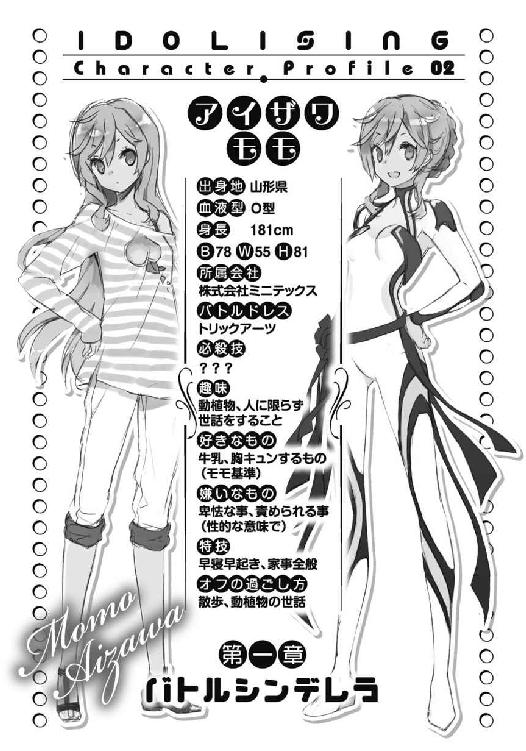
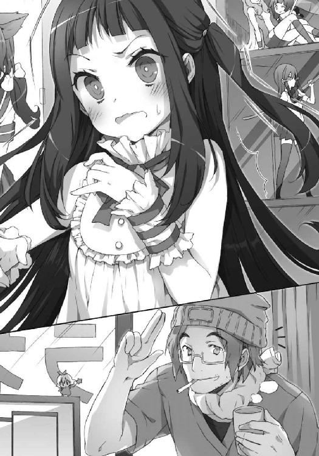

| アイドライジング！ (電撃文庫) | |
| 広沢サカキ | |
| (2014) | |
本書（電子版）に掲載されているコンテンツ（ソフトウェア／プログラム／データ／情報を含む）の著作権およびその他の権利は、すべて株式会社ＫＡＤＯＫＡＷＡおよび正当な権利を有する第三者に帰属しています。
法律の定めがある場合または権利者の明示的な承諾がある場合を除き、これらのコンテンツを複製・転載、改変・編集、翻案・翻訳、放送・出版、公衆送信（送信可能化を含む）・再配信、販売・頒布、貸与等に使用することはできません。

時計の針が深夜十二時四十分を指すのと全く同時に、腕組みをしていた少女はかっと目を見開いた。そして椅子からすくっと立ち上がる。
「よし」
少女は満足げに時計を確認すると計画を実行に移した。ヘッドホンを手に取りそっと自分の部屋を出る。そして軋みが家中に響かないように、階段を慎重かつ迅速に降りていく。この関門が最初にして最大の難所、神経を集中し三分ほどかけて目的の居間へとたどり着く。居間に誰もいない事を確認すると、少女は胸をなでおろした。もし居間に父か母がいたら今夜の計画はパアだ。こんな時間に起きている事がバレたらすぐさま部屋に戻されてしまう。
安心した少女はまずテレビに向かい、イヤホンジャックにヘッドホンの端子を挿し込んだ。そっとテレビのスイッチを入れると、低い起動音と共にぱちぱちと静電気が騒ぐ。
ヘッドホンを装着し音量を調節し終わる頃には、時刻は十二時四十五分にさしかかろうとしていた。
いつの間にか手ににじんでいた汗をパジャマの裾で拭く。
胸の高鳴りが、父や母に聞こえてしまわないだろうか。
衣擦れの音や、テレビの音も漏れていないだろうか。
期待と不安の混じる高いテンションからか、周囲の全てが過敏に感じられる。
少女は浮かび上がってしまいそうな気持ちを必死で落ち着かせながら、いつもよりずっと長く感じられるＣＭを眺めて待った。
そして待ちに待った十二時四十五分、テレビから音が消え画面が暗くなる。
続けてスポットライトが暗闇に落とされると、そこには一人の女性が佇んでいた。光の中心にいる彼女は視聴者に向かい、ひとつ問いかけた。
『......みなさん、アイドルってご存知ですか？』
返事がないのは承知の上か、アナウンサーは続きを話す。
『もちろんご存知ですよね。さて、皆さんが思い浮かべたのは華やかな衣装で歌謡曲を歌い上げる古式ゆかしい国民的偶像？ それとも時代を象徴する生意気で若々しいファッションリーダー？ 艶かしいグラビアクイーン？ 舞台にも立てる演技派？ 踊りもこなせる歌姫？ ええ、確かに全部アイドルです。ただし、昔の、という言葉が頭につきますが』
口元に軽い笑みを浮かべた後、アナウンサーはきらりと瞳を輝かせた。
『今の時代のアイドルは、戦うものなのです。夢も未来も欲望も......望むものなにもかもをその手に摑むために！』
最後の一文を強く叫ぶと設置されていた他のライトが一斉に光を放った。同時に割れるような大歓声が響き渡る。
光にさらされたそこは白く大きなドームだった。そのステージのど真ん中に立っていたアナウンサーは今までの穏やかな口調とは打って変わって激しい口調で叫び始めた。
『握るのはマイクではなく拳！ 身に纏うのはバトルドレス！ そして勝利への意思をアクセルスマッシュに込めて撃ち放つ！ 激闘の末に勝利した少女には賞賛と栄誉と喝采と、輝かしい未来が待っているのですっ！ 勝者の笑顔はもちろんのこと、敗者の頰を伝う涙の一滴までも私達を存分に楽しませてくれるでしょう！ さあ！ 海上都市ニライカナイからお送りするアイドライジング、今夜もスタートです‼』
大げさな煽り文句から始まったのは、アイドライジングという深夜番組だった。
内容は解説の通り、見目麗しい少女達が本当に格闘技をするというもの。だが登場する少女達の体を鎧う独特の衣装から、ただの格闘技でないことは容易に察することが出来るだろう。
生身の人間では出来ない迫力のあるアクション、解説を交えた劇場型展開、派手なビジュアル＆サウンドエフェクト、工夫のなされた必殺技など様々な技術と趣向が融合したこのエンターテインメントは、今若者を中心に大きな注目を集めている。
この少女も、学校の友人からの強い勧めで今夜ついに強行視聴に臨んだというわけだ。
「....................................」
少女の大きな瞳にはただアイドライジングが映る。
顔を青白く照らすテレビの光はまるで魔法のように少女の視線を離さなかった。
自分よりも少し年上の少女達が髪を振り乱し、汗を飛ばし、歯をくいしばる姿は今まで見てきたどんなものよりも美しく、過激で、魅力的だった。
息を吞んだ。
少女はいつのまにか見惚れていた。
脈打つ心臓に急かされ、血がぞわぞわと全身を駆け巡り、沸き立つ熱と共に力がみなぎってくるかのような、そんな初めての感覚。
深夜親に隠れて見ている背徳めいた高揚も手伝って、年頃らしい大人への憧れ、光り輝く者への羨望、胸躍らせる非日常感、それら全てがないまぜになったような強烈なインパクトにあてられて────────
息をするのも忘れるほどに────────
この夜、少女はアイドライジングに心奪われた。

ディスプレイの向こうに広がる情報の海からめぼしい求人情報を見つけ電卓のキーを叩いては頭を抱える行為を一時間ほどこなすと、アイザワ・モモは椅子の背もたれにどっと体を預けた。
切れ長の大きな瞳にしっかりとした鼻筋とまさにシャープな美人といった顔立ちの彼女だが、子供っぽくへの字に曲げた口からは愛らしさを感じさせる。
「まともな方法じゃやっぱ無理なのかな......」
弱気な言葉と共に背もたれから背中をずり下げていく。だらしない姿勢のままマウスを動かす手だけは止めない。
「七十二万......か」
呟きながらモモは脱力した。椅子はあっさりと後ろの二段ベッドにぶつかる。
モモは呆けたように自分の部屋を見渡した。妹と共同の少し狭い部屋。背には二段ベッド、向かいには二つ並んだ勉強机。左手には親に無理を言って置かせてもらった小さめのテレビ、その上に取り付けてある窓から見える風景に視線をやりながらモモは薄い唇を動かした。
「カオル......」
目尻にだんだんと涙が溜まっていく。
「ナツキー！ 家の中を走るなー！」
母の怒鳴る声を聞いてモモは家の中に意識を戻した。どたどたという騒音と振動がだんだんと自分の部屋に近づいてくる事に気付くと、浮かんでいた涙を拭った。
そして右手のドアに目をやると、ちょうどバスタオル一枚の少女が勢いよく部屋に入ってきた。少女は部屋を横断しているモモの体を軽やかに飛び越えると、着地と同時に素早くテレビの電源を入れた。ぼんやりとした明かりを灯すブラウン管から声が響いてくる。
『みぃなさん、こんばんは‼ さあ、今夜もやってまいりました美少女と拳の饗宴！ 極上のエンターテインメントタイム！ 海上都市ニライカナイよりお送りするアイドライジングのお時間です‼ 皆様とこの至福の時間をご一緒させていただくのは、毎度おなじみアイドライジングアナウンサーのミツキ・マリノです‼ 今夜の大一番はなんといっても若くしてスターダムを駆け上がったアイドライジングの女王、マツリザキ・エリーの試合！ 皆様今日まで一日千秋の思いで日々を過ごされてきたことでしょう！ さあ、女王の出陣の前に先週の試合をダイジェストでお送りいたします！』
国民的大人気番組であるアイドライジングが始まった。流行に疎いモモでも名前くらいは知っている。
「ふう、危うく見逃すところだった」
画面に食い入るようにしていた少女はようやくぺたりと床に腰を下ろした。
「ナツキ、風邪引くよ」
モモは唐突な妹の登場にもさして驚きはせず、淡々と忠告した。
「夏だから平気だよ」
手に持ったタオルで髪を拭きながらナツキ。
「ナツキ、夏休み中ずうっとだらだらしてるのにこの番組だけは見逃さないんだね。会員登録してるからネットでも見れるんじゃなかったっけ？」
「今日はあのマツリザキ・エリーの試合の日なんだからリアルタイムで見なきゃ。そんな事よりお姉ちゃん、体でかいんだからもうちょっと丸まっててよ」
「ごめん」
そう返し、長い足を折り椅子の上で膝を抱える。
ナツキの言うとおり、モモの体はいわゆる平均的という言葉から大いにかけ離れていた。１８０を超す長身にすらっとした長い手足を持つ彼女はモデルのようだが、夏休みとはいえ下着とよれよれのＴシャツしか身に着けていない姿からは気品など微塵も感じられない。あげく長く艶やかな薄桃色の髪は適当にまとめ上げられて乱暴にバレッタで留めてある。どうやらモモはそういう事に無頓着な性格らしい。
『明日の気象を予測しニライカナイの安全を守るウタキ。そんなウタキの正確なお天気情報がいち早く手に入る携帯コンテンツが新登場！ お天気、気温はもちろんのことお洗濯、日射病の注意報、レジャー、アウトドアに最適な日の案内まであなたの生活をサポートするメニューをご用意！ 毎日あなたの携帯にマツリザキ・エリーが動画でお天気ニュースをお届けします！ 今入会するとマツリザキ・エリーのオリジナル待ち受け画像をプレゼント！ アクセスはウタキの公式サイトからどうぞ！』
テレビではゆるいウェーブのかかった髪の少女の登場するＣＭが流れていた。柔らかそうになびく栗色の髪から覗く笑顔は、興味のなかったモモの視線すら離さないほどだった。
「可愛いね、この子」
「あったりまえでしょ！ この子がマツリザキ・エリー。史上最年少でアイドライジングのクイーンになった日本で一番有名なアイドルなんだから。しかも今期は無敗なのよ」
なぜか自慢するように胸を張るナツキ。
「この子いくつ？」
「十六歳。身長１５２センチ、十二月一日生まれのいて座。趣味は食べること。彼女のことなら何でも聞いて」
「私とひとつしか違わないのか......」
椅子の肘掛に頰杖をつきながらぼうっとテレビを眺める。
ＣＭから明けると、そのマツリザキ・エリーが和服にかなりのアレンジを加えた衣装を纏ってステージに登場していた。彼女は大観衆の声援を浴びながら笑顔を浮かべている。
ＣＭの優しげな笑顔とは違う、妙にギラついた笑みを。
「アイドルって......儲かるのかな？」
エリーの不敵な笑顔を眺めながら、モモは言葉を漏らす。
「そりゃ儲かるでしょ。今はアイドルが日本を動かす、なんて言われてる時代なんだし」
テレビから目を離さないままナツキは答えた。
「......一ヶ月で百万とか稼いじゃうのかな？」
「あのねー、アイドルは高額納税者のリストに名前が載るくらいのレベルなんだよ？ 百万なんてぱぱーってすぐ稼いじゃうよ。あ、試合が始まったから黙ってて、お姉ちゃん」
ナツキは姉を邪険にあしらうと、同性の偶像に黄色い声援をあげ始めた。
「............」
モモは椅子を元の位置に戻して姉妹共用のパソコンに向き直ると、検索エンジンのバーに文字を打ち込んだ。そしてエンターキーを押して表示されたページを見つめると、モモの口はゆっくりと大きく横に広がっていった。
「............これだ」
呟き、椅子からばねのように勢い良く飛び降りた。古ぼけた椅子ががたんと鳴る。
「お姉ちゃんうるさい！ 静かにしてて！」
「ごめんごめん！」
ナツキの不平をひらりとかわして、モモはそのまま部屋を飛び出した。
持ち主にほったらかされたパソコンに表示されたサイトに並んでいたのは、次のような文章だった。
【来れ未来のアイドル！
新番組〈コハクのなゆた〉プロジェクト ミニテックス社新人アイドル大募集！
株式会社ミニテックスではアイドライジングに参加可能であり、今秋から放映予定のテレビアニメ〈コハクのなゆた〉の主役であるなゆたをイメージさせる元気の良い十代の女性を募集しています。
今や日本を代表するエンターテインメントであるアイドライジングの主役、アイドルにあなたもなってみませんか？
応募資格の詳細は以下の通りです。たくさんのご応募、お待ちしております】
しかし、そのページを上にスクロールしていくと.........
──────
───────────
───────────────────
【新番組〈コハクのなゆた〉プロジェクト ミニテックス社新人アイドル募集の途中経過について。
応募総数五万を超えるたくさんのご応募、まことにありがとうございました。既に書類審査、第一次、二次審査を終えて残すは最終審査のみとなりました。
見事最終審査を通過した新人アイドルのお披露目は当ホームページではなく、とある舞台で行う予定です。そう、皆さんご存知のあの綾時橋のステージです。
当日をお楽しみに！】
───────────────────
───────────
──────
オウダ・サイは自分で作成したホームページの記事を一通り見直した後、メールチェックを済ませた。
サイはまるで、小学生がスーツを着ているんじゃないかと疑ってしまうほど小さな女性だった。おそらく１４０にも届かないだろうその身長を気にして履いている高めのヒールが微笑ましく、大人っぽくアップにした髪がまた背伸びしている子供を演出してしまっている。
株式会社ミニテックスの本社ビル五階、アイドル事業担当キムラ別室と書かれた札がかかっているこの小さな一室が、サイの所属する部署だ。
狭いスペースにムダなく配置されたデスクの一つを使っていたサイは、ノートパソコンをシャットダウンしてぱたんとディスプレイを閉じた。
「ふむ、ここまで問題はなし、と。えーと、最終審査は十時からだから......」
サイはそわそわしながら、今日十数回目となる段取りの確認を頭の中で始めた。
今日はミニテックス社のアイドルの最終審査と決定、続けてアイドライジングデビュー戦というキムラ別室始まって以来の大イベント目白押しの日だ。ましてやサイはそのアイドルの担当プロデューサー。慎重になるのも当然と言える。
「ふむ。打ち合わせもあるし、早いけどもう会場に向かっておいた方がいいわね」
時計をちらりと見やり、サイはその小さな体に気合を入れた。
「室長も大忙しだし、今日は張り切らなきゃ！」
ミニテックスの新人アイドル最終審査会場は、都市エリアにある雑居ビルで行われる事になっている。ミニテックス自体は小さい会社ではないのだが、立ち上げたばかりの部署であるキムラ別室に割り振られる予算は決して潤沢にあるとは言えないのだ。節約できるところで経費は抑えておきたい。
ともあれ、十時から始まった最終審査の個人面接は押しに押して夕方六時に最後の一人を迎えることになった。キムラ別室のサイをはじめとして、ミニテックスの重役達が審査員としてずらりと並ぶ机の前に最後に登場した女の子は、まさにこれ以上ないほどの正統派美少女だった。
「ハセガワ・オリン十五歳、高校一年生です。よろしくお願いしまぁす」
日本人のお手本のような長い黒髪を持つ美少女は頭を下げた。
ぱっちりした目に、少々頼りなさそうな幼めの顔がまた男心をくすぐる。ビキニの水着を着用しているため透明度の高い白い肌は光り輝き、大きいとは言えないが将来性を感じさせる胸やつるんとしたヒップラインは充分に目を惹きつけさせる魅力を持っていた。そして高く甘めな、いかにも男が好みそうな声での自己紹介は、向かいの長机にいる審査員達の心をしっかりと摑んだ。
ただ同席しているサイには通用せず、彼女は無言で手元のメモにペンを走らせている。
「えー、まず志望動機は？」
一人の審査員が質問した。
「アイドライジングは今一番流行ってて勢いのあるエンターテインメントですし、アイドル同士で戦うっていうのも、とっても刺激的で興味が湧いたからです」
オリンは最後の「です」と同時に首を少し傾けた。これが彼女の技なのだろう。
「水着になるのは抵抗ない？」
「ちょっと恥ずかしいけど、精一杯頑張ります」
胸の前で両手を軽く握りながら返答する。技は複数揃えているようだった。どこか満足げに頷きつつ太った審査員は履歴書に目を通す。
「趣味はショッピング、これは普通だねぇ。特技は書道初段かぁ、すごいね」
「そんな、全然大した事ないです。すぐにやめちゃったんで」
両手をひらひらとか弱そうに振る。謙遜する時はこれを使うらしい。
「すぐやめたのに初段なんて、才能あるんじゃないの？」
「えへへ、ありがとうございまぁす」
オリンが照れながら頭を下げると黒髪は暖簾のように揺れた。髪を揺らす具合も計算されているかのようだ。
「志望動機を聞く限り、アイドライジングへの抵抗はない感じかな？」
「はい。楽しそうだなーって思います。でも、私格闘技の経験なんて全然なくて、正直言うと、ちょっと怖いって思うところもあります......」
両手を口元に当てながら呟くオリン。か細くなる声もこなれている。
「大丈夫。格闘技経験のあるアイドルなんて少ししかいないよ。こちらで出来るだけのサポートをするし、アイドライジングはエンターテインメントなんだから大ケガをすることもない。そんなに不安になることはないよ」
メガネの審査員の一人がそう言って優しげに微笑みかけた。
「そ、そうなんですかぁ。よかったです」
オリン、ここで満面の笑み。審査員達、もとい重役一同は若い娘の小細工に全く抗う術を持たず、あっさりと籠絡された。
サイは重役達のでれでれしたしまりのない表情を横目で見やりつつ、こっそりため息をついた。
「やっぱりハセガワ・オリンかねぇ」
別室の小部屋にて審査員達による合格者の選出が行われていた。履歴書と書類の散乱する机の上で話題になっていたのはハセガワ・オリンだ。
「顔もスタイルもダントツ。それになんていうか、自分の可愛く見えるポイントみたいなものを熟知しているという感じがするね」
「そ、そんな上等なものですか？ ただのぶりっ子のような......」
サイは首をかしげながら抗議した。サイの直感はハセガワ・オリンを避けるべきだと告げている。いわゆる女の勘というやつだ。
「ま、初めのうちはあんなもんでしょう」
「そうそう、それに演技慣れはプロデュースする側にとってもいいことじゃないのかね？」
メガネの審査員が投げかけてくる言葉はもっともだった。
「それは、そうかもしれませんが......しかし、ハセガワ・オリンが〈コハクのなゆた〉のなゆたにイメージ似てますか？ なゆたの明るく元気いっぱいな少女というイメージとはかなり違う気がしますけど......」
サイの言うとおり、今回選出されるアイドルにはホームページの告知にもある通り〈コハクのなゆた〉の主役であるなゆたをイメージさせる事が条件だ。なゆたは快活ではつらつとした元気娘だが、オリンはおとなしいお姫様系。印象はまるで違う。
「そこは君達の腕の見せどころでしょ。うまく演出すればいいじゃない」
「そ、そんな！ なゆたにイメージが似ているという点なら、他の候補者にももっと見所がありました！」
サイの反論は審査員の、いや会社の重役としてのため息で遮られた。
「まず人目を惹き付けないと意味がないわけだから。アイドルってのは広告なわけでしょ？ 実際にハセガワ・オリンより総合点で勝っている娘はいなかった。君にもそれが分からないわけではないだろう？」
「そ、それは」
「いい素材がいたからそれを使う。調理法はそちらに任せる。それだけだよ」
他の者達もその言葉に賛同し頷いていた。重役達の意見はそれで一致しているようだ。これ以上議論の余地はないらしく、加えて重役達は予定よりも長い時間拘束されて機嫌が悪いように見える。力のない部署がこれ以上社内で不利になるような振る舞いはなるべく避けたい。
そう悟ったサイは断腸の思いで決断を下した。
「......分かりました。では、合格者はハセガワ・オリンということで。以降、発表から本日のアイドライジングまではこちらで責任を持って担当させていただきます。本日はお忙しい中お集まりいただき、ありがとうございました」
ぺこりとサイがお辞儀をすると、上層部の面々は雑談をしながら立ち上がり部屋から退室していった。
「....................................ふぅ」
サイは深呼吸した後、重い足取りで最終候補者の待つ大広間へ向かった。
「えー、新番組〈コハクのなゆた〉プロジェクト、ミニテックスのアイドルに見事選ばれたのは......ナンバー１１０５番、ハセガワ・オリンちゃんです。おめでとう」
候補者全員を集めた大広間の壇上でサイは台本通り、発表原稿を読み上げた。
「きゃっ、やったー！」
嬌声をあげながら立ち上がるオリン。
「これにより、本日の最終審査は終了となります。皆さんお疲れ様でした。では告知していたとおり合格者のハセガワ・オリンさんはこれから綾時橋ドームに行って、今夜放送予定のアイドライジングに参加してもらいます。ハセガワさん、詳しい説明をするから隣の面接室に来てもらっていいかしら？」
「はぁい」
オリンは軽やかなステップでサイに付いていき、二人は部屋から出ていってしまう。
そして、大広間には落選者達だけが取り残された。
大広間に横たわるのは、大きな静寂と浮かばれない未練。文句や不満などを呟く声はなく、しかし、立ち上がって帰る者もいなかった。結果は出たはずだが、もしかしたらという淡い期待が水着姿の彼女達を椅子に縛り付けているのかもしれない。
鉛のような空気を誰も崩せないまましばらく経つと、どこからか聞こえる弱々しい声がこの重苦しい空間にかすれた線を引いていく。
一人の候補者が泣いているのだ。だが、それは悲しみを振りまくわめき声でなく、湧き上がる自分の感情に必死に耐えている声。悔しさを食いしばるその声を聞いて、他の候補者達はあきらめるように椅子からその腰を上げた時、
唐突に、大広間の扉が開かれた。
「だ、誰も帰ってないわよね？」
入室してきたのはサイだ。合格者のオリンを面接室へ案内した後に戻ってきたようだ。急いできたらしく、髪が少し乱れている。
「その、どうしてもみなさんに言いたい事があったので、一言だけ」
候補者全員を確認すると、壇上に立ち大きな声を張り上げた。
「えー、今回はうちに応募してくれて本当にどうもありがとう！ 今回はこういう形になってしまって、非常に残念です。こういうのは時の運もあるので、悔しいとは思いますが、今回は運がなかったんだと思います。でも、決して才能がないとは思わないでください。ここまで来れたって事はあなた達には相当な実力があるって事です。頑張れば、頑張り続ければきっと道は開けます。あなた達自身が積み重ねてきたことは絶対にあなた達を裏切らないはず。だからどうか、自分を信じる事をやめないでください」
勢い込んで言い切った後、サイはそこで息を整える。
「アイドルを募集する会社はまだまだたくさんあります。簡単に諦めたりせずに、若いうちは何度でも挑戦してみてください」
そして一息おいて、サイは笑顔でこう締めくくった。
「では、次はアイドライジングの舞台で会いましょう」
落選者達はリアクションに困ったように他の候補者達と顔を見合わせていたが、
「...............う」
声が上がる。
「う、うわあああああああああああああん！」
今まで感情の爆発を必死でこらえていた娘だった。まるでダムが決壊したように大声で、ぼろぼろと大粒の涙をこぼしながら感情に任せて、わんわんと泣き始めた。
「うっ......うう......」
つられて隣の候補者達が喉から空気が漏れるような声を出す。
「ぐ、ぐすっ......」
その隣の候補者は鼻をすする。
そして感情の波は、あっという間にその場にいる全員へと伝染した。候補者達がぐっとこらえていたものが一人の泣き声をきっかけに吹き出してしまったようだ。
わんわんと泣いたり、ぐっとこらえるように泣いたり、喉を引き絞るように泣いたり、みんながみんなそれぞれに泣き終わるまで、サイはその場で彼女達を見守っていた。
サイは落ち着きを取り戻した落選者全員の退室を確認した後、合格者であるハセガワ・オリンの待つ部屋へと向かった。
不本意ながらもミニテックスのアイドルはハセガワ・オリンに決まった。それはつまり、今日からサイは彼女のプロデューサーになるという事だ。
アイドルとプロデューサーは一心同体、という言葉がある。
アイドライジングでのアイドルとプロデューサーは、野球で言うバッテリーのようなもの。苦しい時にお互いを信じ支え、協力しあいながらアイドル達はアイドライジングに臨む。
では、ハセガワ・オリンとそのような良好な関係を築くために自分はどうすればいいだろうか。やはり何事においても出だしというのは肝心だ。第一印象で全てが決まってしまうことだってありえる。あれこれやるよりも、まずサイはそこに注力する事にした。
サイはオリンの待つ部屋の前まで来ると、ひとつ咳払いをしてノックをした。
「ハセガワさん？ お待たせしちゃってごめんね」
サイは言葉をかけて部屋に入る。
オリンは既に水着ではなく私服に着替えていた。オリンの私服は凝ったデザインが施されたノースリーブのブラウスに幅の広いデニムスカート、足元はソールの厚いサンダルといったガーリーなものだった。自分の素材の良さが分かっているのかシンプルだ。
オリン本人はといえば入室してきたサイには目もくれず、自分の爪を熱心に手入れしていた。
リアクションを取らないオリンに戸惑いながらも、サイは大きな声で仕切り直した。
「え、えーとハセガワさん、まずは合格おめでとう！ 今は時間がないから詳しい説明や契約の事は後にするけど、これであなたも今日からアイドライジングのアイドルの仲間入りよ。私はあなたのプロデュースをさせてもらうオウダ・サイ。あなたの事はこれから親しみを込めてオリンちゃんと呼ばせてもらうわ。いいかしら？」
その問いかけでようやくオリンは視線をサイへと向けた。
「じゃあ、私もあなたのことコロちゃんと呼ばせてもらっていいですかぁ？」
「コロちゃん？ なんか可愛いあだ名ね。どういう意味なの？」
オリンから話題を振ってきた。ここは機嫌を取るためにもひとまずノっておく。
「コロボックルっていう妖精がいるんです。蓮の葉に隠れちゃうくらいすっごく背が小さい妖精なんですって。背の低いオウダさんにぴったりじゃありません？」
ぴしっとサイの額に青筋が走る。
面白がるようなオリンの視線を受け、サイは安易に話を合わせた自分を呪った。
「そ、そのあだ名はちょっと止めてもらおうかな。さ、時間がないからさっさとアイドライジングのドームに向かいましょう。表に車を用意するから乗って」
どうやらサイの掲げた理想への道のりは予想以上に困難なようだった。
サイはまずワンボックスカー（社用車）にオリンを乗せた後、借りていたフロアの戸締まりと点検を行っていた。
「そういえば室長、無理に時間を作ってでも最終審査に来るとは言っていたけど......」
前日の打ち合わせの事を思い出す。
「女好きのあの人なら、と思ったけどさすがに無理だったわね......」
室長は今頃会場の方でアイドライジングの打ち合わせにてんてこ舞いになっている事だろう。
キムラ別室は室長とサイの二人のみの部署、今日のようなビッグイベントの場合のしかかる負担はいつもの倍どころでは済まない。
「出来るなら、結果が出る前に来て欲しかったけれど......」
なにかしらの希望を捨てるように呟きながら最後のフロアの鍵を閉めると、サイはワンボックスカーへと戻り車を発進させた。
★ ★ ★
そしてその数分後、先ほどまでサイ達がいた雑居ビルに一人の少女が現れた。
「ここかなあ......」
淡い桃色の長い髪、すらりとした長身の持ち主、アイザワ・モモだった。どうやらビルに用があるらしく、内部をうかがっている。
柄のプリントされたＴシャツ、七分丈に調整した麻の絞りパンツ、青いラメの入ったビーチサンダルというラフな格好をしたモモは、周囲の通行人の注目を集めていた。理由は服装ではない。１８１センチもあるその身長だ。近くの成年男性と比べてもゆうに頭一つ分は大きく、ただうろうろしているだけでも異様に目立ってしまう。
「うーん、外にはなんも案内が出てないなあ。中に入って聞いてみるしかないかな」
モモがビルに入ろうとしたその時、遠くから耳障りな音が聞こえた。
音の方に目をやると一台の車が暴走するようにこの通りに入ってくるのが見えた。通行人を散らすように突き進み、ホイールスピンの爆音と嫌な匂いのする煙を上げながら車は器用に雑居ビルの前で止まった。
すぐさま車の中から男が飛び出してくる。
「しまった！ 間に合わなかったか......」
そう言って男はモモの真横で崩れ落ちた。
男はカーゴパンツにボーダーのポロシャツという若さ溢れる出で立ちだった。しかしよく見ると男が若々しいのは格好だけで、顔や体の年齢的な陰りは隠しきれていない。実際のところは三十代後半くらいだろう、なんか人生をドロップアウトした遊び人といった感じだ。
（この人もアイドル志望なのかな......）
モモは隣のおじさんが水着でセクシーなポーズをとるところを想像した。
（......そんなわけないか）
自分の想像をぶんぶんと頭を振って否定する。
「水着姿の十代美少女に囲まれるハッピーイベントをこの俺が逃すなんて......くそう。渋滞のないリニアシャトルで来ればよかった......」
男は屈んだ姿勢のまま歯嚙みしている。
「会場の方は早く片付けて急いで駆けつけたのに......いや、そもそも室長の俺がいないのに最終審査やるっておかしいだろ......重役共め......いつもは椅子から動きやしないのにこういう時だけ現場に介入して『人手が足りないだろう』なんて恩着せがましい事を......」
男は呪詛のような何かを呟いている。
（でも、関係者の人みたい......？）
そう思ったモモは状況を打破するために男に話しかけてみた。
「あ、あの......」
声をかけられて、男はゆっくりとモモに視線を移動させる。
その瞬間、男はまるで石のように硬直した。そのままたっぷり数十秒間、時が止まったように男は動かない。
「あ、あの......」
もう一度話しかけてみる。
すると男は立ち上がり、今度は真剣そのものの表情でモモを観察し始めた。まじまじと顔を見た後は体を引いて全体を見る。頭の先からつま先まで舐めるように。
モモはさすがに引いた。
「あ、いやいや、ごめん......その、君があまりにも可愛かったから見惚れていただけさ、アイザワ・モモちゃん」
「ど、どうして私の名前を？」
名乗ってもいないのに名前を呼ばれ驚くモモ。
男が軟派な笑みと共に指さしたのはモモの抱える鞄だ。
「鞄に名札がついてるよ。高校指定の鞄なんだね、それ」
「あっ外すの忘れてた」
顔を赤くしながらモモは鞄から名札を外した。
「えーっと、もしかしてモモちゃんはアイドルの審査を受けにここに？」
「はい！ ミニテックスのアイドルになりたいんですけどって交番で聞いたら、ここが審査会場だって教えてくれました」
元気いっぱいな返事に、男の反応は良くない。
「うーん。しかし、モモちゃんの名前は最終審査の名簿でも見かけたことがなかったな。君みたいな可愛い娘が応募してくれたら絶対覚えている自信があるんだけど......」
「えっ、応募しなきゃダメなんですか？ 飛び込みみたいな感じで審査を受けようと思ってたんですけど......」
「？ え、えーっと？」
アバウト過ぎる回答に男は思わず聞き返した。
「飛び込みです。私、子供の頃ヒーローショー観に行った時とかは必ず怪人に捕まってたんで、そういうの得意なんです！」
よく分からない自信でモモは胸を張った。
「い、いや、飛び込みは受け付けてないし、というかそもそもこれはヒーローショーじゃないんだから。そのやり方はちょっとダメかな。応募の締切はとっくに過ぎてるよ。モモちゃんはきっとホームページの過去ログを読んだんだね。最終審査会場はサイトで公開してたから、それ見て警官がここを案内してくれたんだ」
「そ、そんな！ わざわざニライカナイまで来たのに......」
抱えていたモモのバッグがどさっと路上に落ちる。
「でも、応募していようがいなかろうが関係ない」
男は力強く断言し、すうっと音もなくモモに近寄った。
「俺は今とても感謝している。君に出逢えたことを」
モモの両手を優しく握り、渋みのある声で囁いた。
「？ それはどうも。はあ、私絶対アイドルになりたかったのに......どうすれば......」
モモはがっくりと肩を落とし、弱音とともに背も丸まっていく。
「待ってて。今夜の舞踏会はこれからだよ。モモちゃん」
「？」
首を傾げるモモに男はその格好にふさわしい軽薄な微笑を投げかけた。
「今から俺が、君にとびっきりのドレスを用意してあげるからさ。カボチャの馬車は用意できないから、代わりにシャトルトレインになっちゃうけどね」
★ ★ ★
夏とはいえ夜七時近くになるとさすがに日も暮れていた。昼間の蒸し暑い湿気も散らされ、からりとした風が冷たい潮の匂いを運んでくる。
サイの運転するワンボックスカーはオリンを乗せて、そんな過ごしやすくなったニライカナイ都市エリアを順調に走っている......はずだったのだが。
「参ったわねー」
二人の乗る車は渋滞に捕まっていた。もう三十分ほど動いていないような状況だ。もう少し粘っても動きそうにないなら別の手を考えなければならない。今夜のアイドライジングはミニテックス社の大イベント、遅刻などあってはならない事態だ。
ややイライラしつつ、サイはハンドルを指で叩いていた。
「そういえば、大変ですねえ。落選した子のメンタルまで気遣わなきゃいけないなんて」
助手席に座るオリンは暇なのか、あくび混じりに話しかけてきた。
「聞こえてたの？」
「負け犬の泣き喚く声がビル内にとーってもよく響いてたので」
オリンは審査員達を骨抜きにした時と同じ笑顔で答えた。
「......そういう言い方はよくないわ。あの子達も真剣だったのよ」
サイはハンドルを握る手に力を込めながらも、口調だけは荒げなかった。
「ふふ」
オリンは嘲るように笑う。
「なにがおかしいの？」
さすがにむかっときたのかサイの口調に凄みが増す。しかし、オリンは動じずに言葉を続けた。
「自分の無力さを思い知った上で他人に慰められるなんて......私だったら恥ずかしくて生きていけないなぁ、と思って」
「............」
オリンのその言葉に、サイは何も言い返さなかった。
車はようやく動き出し、渋滞を抜けた。これなら間に合いそうだ。
雑然とした都市エリアを抜けると夜の海に面した幹線道路へと出る。その道路の先に煌々と光を放つ白い建造物が見える。
あれこそがアイドライジングが行われるドーム、綾時橋ドームだ。
綾時橋ドームの地下駐車場に車を置いて、サイとオリンの二人は控え室に向かう。
ドーム内の造りは白を基調としたもので、シンプルではあるものの実用的でこぎれいなデザインでまとめられている。そして二人は到着した控え室のドアを開けると、目を丸くした。
控え室の内装もやはり凝ったものだった。さほど広くはないものの右手の壁には大小さまざまな円形の鏡が埋め込まれ、部屋の真ん中には床に差した一枚の板を緩やかに折り曲げて形成したようなテーブルとそれに合わせたデザインの椅子がある。ややデザイナーの主張が強い部屋だが、色合いが明る過ぎない白と暖色のオレンジのためか意外に落ち着ける。
ただサイとオリンの二人が同じようなリアクションを取った理由は部屋のデザインではなく、なぜか控え室にいる先客についてだった。
特徴的な桃髪を持つ少女、アイザワ・モモがそこにいた。髪はきれいにまとめられ、振り返った顔には軽いメイクも施されている。
そしてなによりも目を引くのはモモが身につけている奇妙な服だった。
指先まで覆いつくす真っ白い全身タイツのようなものに数本真紅のラインが走り、腕や肩、胸の各所にメタリックレッドの丸っこい装甲がくっついている。衣装単体だとヒロイックなデザインカラーから少々子供っぽい印象を受けるが、身長１８１のモモが着用するとぐっと大人びてそれを近未来的なものに変貌させる。
「でかい......」
思わずサイは呟いた。身長１４０未満のサイから見れば、１８１のモモは巨人のように見えるだろう。そして逆も然り。
「ちっちゃい............」
小学生のような身長のサイを映すモモの瞳は、なぜかきらきらと輝き始めた。
「ちっちゃくって、可愛い......」
両手を口に当てながらうっとりとした表情を浮かべている。
「あ、あなたは一体誰？ きゃあっ！」
モモはサイを高く抱え上げた。
「かんわいいい！ お人形さんみたい！」
その上抱きしめて頰擦りまでする。
「こ、こら！ 離しなさい！」
サイは体験したことのない高度にくらくらしながら抗議した。
「あんた誰？」
そこで冷静な言葉を放ったのはオリンだった。つかつかとモモの間近まで近寄る。
「つーか勝手に私のバトルドレス着ないでよ！ いくらサイズフリーのタイツタイプでもあんたみたいにでかいのが着たら伸びちゃうじゃない！ さっさと脱いでくれる⁉」
バトルドレスを先に着られていたのが我慢ならなかったのか、オリンは厳しい口調でびしっと人差し指をモモに突きつける。
「......え、えーと？」
「その子はうちのアイドルだよ」
控え室の奥から男の声が聞こえた。三人が声の方に目をやると奥まった椅子に男が座っていた。雑居ビルの前でモモが出会った中年の男だ。
「室長！ お疲れ様です」
サイは男をそう呼び、モモに抱えられたまま一礼する。
「あの室長、この娘は一体？」
「サイちゃん、まずそのモモちゃんの顔をよく見てごらん」
意味はよく分からなかったが、サイはとりあえず上司の言葉に従ってじっくりとモモの顔を眺めてみた。
「‼」
サイはすぐに上司の意図が分かったらしく、口元に手を当てて驚いた。真剣そのものの顔でモモを凝視し始める。
「あ、あの、なんでしょう？ そんなに見つめられると照れちゃいます......」
「その娘、そっくりだろう？ 俺も初めて見た時は目を疑ったよ」
口元から笑みが消せないまま室長。
「あの、さっきからなんなんです？ 今日は私が華々しいデビューを飾る日なんですけど」
オリンは自分に一向に関心が向かないのが不満らしく苛立たしげだ。
「モモちゃんは〈コハクのなゆた〉の主人公、なゆたに顔がそっくりなんだよ。だから......」
室長は答えた後に、オリンの存在に初めて気が付いた。
「......えーと、君は？」
「今日の最終審査で約五万人の中からミニテックスのアイドルに見事選ばれましたハセガワ・オリンです。よろしくお願いします、室長さん」
オリンのとびっきりの笑顔に、ユウガクはそれ以上の笑顔で応じた。
「あー、ごめんねぇ。うちのアイドル急遽あの子に決めちゃったから。名前はアイザワ・モモちゃん」
「...............は？」
その言葉で、オリンの笑顔はぴしっと凍りついた。取り繕っていた仮面が崩壊する直前、オリンはなんとか持ち直して笑顔を作る。
「や、やだあ、室長さんったら冗談がお上手♪ オリンびっくりしちゃったぁ」
プロ根性とでもいうのだろうか、やや引きつりながらもオリンは演技を続けた。
「本当だよ。アイドライジングの協会の方にも書類とか送って登録しちゃったからもう既に」
「えーっ⁉」
決定的な一言を聞いてサイの叫びが控え室に響く。
「そ、そんな！ 別室の私達だけで勝手にアイドル差し替えなんて許されるわけありませんよ！ 今日だって重役呼んで大々的に決めたんですよ⁉」
「今回の募集条件は〈コハクのなゆた〉のなゆたに似てる事なんだから、これ以上の人材はいないだろう？ 加えてこの背の高さ、顔が似てるだけじゃあ押しが弱いかもしれないけど、この身長はアイドライジングでも目立つし大きな武器だよ。それに、サイちゃんとコンビを組むという意味でも、この高い身長は必ず良い方向に働くはずさ」
そこでサイははてな顔を浮かべる。
「別に私達は身長差狙ったお笑いコンビやるわけじゃないんですよ？」
「まあそりゃそうなんだけど。とにかく、俺はモモちゃんで押し通すよ」
「でも」
「アイドライジングで勝利すれば上は文句言いづらくなるし、平気さ。もちろん俺が話をつける。なにかあったとしても俺の責任だ」
ここまで強気に上司に告げられては、サイは引き下がるほかない。
「わ、私、アイドルっていうお仕事がどういうものかは正直よく分かりませんけど」
モモは抱えていたサイを床に降ろすと、真正面から向き合った。
「でも、やる気はあります！ どんな事でも精一杯頑張ります！ 本気です！ だからお願いです！ アイドルをやらせてください！」
大声を張り上げながら、地面にぶつけるくらいの勢いで頭をぐわっと下げるモモ。
「それと、モモちゃんにはまっすぐな熱意がある。俺は素質充分だと思うんだけれど」
笑う室長はまるでサイの心境を見抜いているようだ。
「あ、あの！」
オリンは大きな声を上げて自分に視線を集めた後、必殺の声音でこう言った。
「もうすぐアイドライジング始まっちゃいます。早くその娘を追い出したほうがいいんじゃないですか？」
オリンは廊下へと追い出され、控え室のドアは無情にも閉められた。続く控え室のキーロックの音がミニテックスのアイドル、ハセガワ・オリンのあまりにも早い終幕のベルとなった。
「ちょ、ちょっと冗談ですよね？ 私が合格したじゃないですかぁ！」
オリンの猫を被った声が未だにドアの向こうから聞こえる。しばらくは控え室のドアを叩いていたがその音はだんだんと弱くなっていく。やがて本当に見放されたことが分かったのか、ドアを叩く音は止んだ。
そして──
「......っざけんなっ！ コラァッ‼」
オリンのドスの利いた声が轟いた。同時にドアが跳ねる。
「てめえらあたしが合格だっつっただろーがっ‼ その桃色ガリバーとあたしじゃ比べる価値もねえだろこのボケ共が！ 目ん玉付いてんのか‼ 大掛かりにぬか喜びさせやがって！ 契約不履行で絶対に訴えてやるからな‼」
借金の取り立て屋のような怒号が廊下に響き渡り、憤怒のこもった衝撃が連続してドアを揺らす。
「書類上の契約はまだ何も交わしていないわけだし、法的には特に問題ないわ」
サイは極めて事務的な言葉で対応した。
「名誉毀損で訴えてやる！ 上げて落とすとか私はコントやりにきたんじゃねーんだよっ‼ ア・イ・ド・ルやりにきたんだよ‼ はぁ？ なにあんた達？ ちょ、ちょっと放せ！ あたしはアイドルだ‼ これからアイドライジングに出るんだ‼ どこ触ってっ......痴漢！ こいつ痴漢だ！ 先にこいつ捕まえろよ！ くっそ、アイザワ・モモとか言ったな‼ あんたの名前、絶対に忘れねぇ‼」
流行らない三流悪役のような捨て台詞を吐きながらオリンの声は遠くに消えていく。
サイが少し歪んだドアを開けて廊下を見ると、遠くに警備員に引きずられていくオリンの姿があった。
「あの子、よかったんですか？ 関係者だったんじゃ......」
モモは不安げにサイに尋ねた。
「あなたは気にしないでいいのよ。アイドルに憧れるあまりああやって勘違いしちゃう娘は、たまにいるものだから」
とてもすっきりした笑顔で答えるサイ。
「いやあ、しかし面白い娘だった。もしかしたらあの娘でも良かったかも知れないな」
室長も愉快そうに笑う。
「何言ってるんですか。さ、私達には時間がないんですから今夜のアイドライジングの打ち合わせを始めなきゃ」
室長の言葉を流すと、サイはモモを見やった。
「さて、私はあなたの事なにも知らないの。簡単に自己紹介してくれる？」
「あ、はい！ アイザワ・モモ十五歳、高校一年生です！ よろしくお願いします！」
「元気があってよろしい。では改めて。俺は株式会社ミニテックスアイドル事業担当キムラ別室室長、キムラ・ユウガク。三十八歳。別室とか大層な名前がついてるけど、俺とサイちゃんの二人しかいないんだ。まあ楽しくやろう」
室長ユウガクは使い勝手の良い椅子をきぃと鳴らした。
「同じくキムラ別室所属のプロデューサー、オウダ・サイよ。二十二歳。これからモモちゃん担当のプロデューサーになるわけだけど、アイドルとプロデューサーは一心同体よ。お互い助け合いながらがんばりましょう」
「はい！ よろしくお願いします！」
サイが差し出してきた手をモモは力強く握り返す。
「さて、自己紹介も済んだ。じゃあ今は目の前のアイドライジングに集中しようか。こっからはプロデューサーのサイちゃんのお仕事。初舞台なんだから気合入れていこう」
手持ちの資料にざっと目を通し、サイは頷いた。
「モモちゃん、室長からはどこまで教えてもらったの？」
「アイドライジングのルールです。ええと、確かアクセルスマッシュっていうのを相手に一発でも当てれば勝ち。アクセルスマッシュは一試合につき三回までしか撃てない。急所は狙っちゃダメ、ですよね」
モモは指折り確認しながら自信満々に微笑み、サイは対照的に表情を曇らせた。指をこめかみに当てすっと手のひらを前に突き出す。
「......ちょっと待って。モモちゃんはアイドライジングのルール、知らなかったの？」
「はい。私アイドライジングは名前ぐらいしか知らなくて」
平然と答えるモモにサイは頭を抱えた。
「時間なかったから最低限だけを教えておいたよ。いきなり詰め込みすぎてもよくないし」
ユウガクはさらりと付け加える。
「......仕方ないわね。じゃあまずモモちゃんの着ているその服、バトルドレスの説明よ」
「ばとるどれす......」
自分の体を覆う特殊な服の名を、モモは繰り返した。
「そう、アイドルは必ずバトルドレスを着てアイドライジングに出る。各アイドルがそれぞれ所有している専用のバトルドレスを着て、ね。要するに舞台衣装よ」
「つまり、これは私専用のバトルドレスってことですか？」
「その通りよ。そのバトルドレスの名前はトリックアーツ。バトルドレスには必ず特性って言われる専用の特殊技が撃てるようになってるんだけど......」
「あ、それは室長さんから聞きました。やり方も教えてもらいました。この、トリックアーツの特性は一回しか使えないってことも」
「よし、そこが分かってるなら安心ね。それが今回の勝利の鍵よ。直前にもう一度確認しましょう。じゃ、次に今回の対戦相手の事を説明するわ」
調子が出てきたその時、控え室に備え付けの電話が鳴った。サイが応対に出ると、ただでさえ小さいサイの背がしょぼしょぼと萎んでいく。今までのテキパキさはどこへやらだ。
「......もう集合時間だって」
電話を切りながらサイは大きなため息をついた。しばらくその体勢のままでいたが、やがて気を持ち直したのか背筋がぐっと伸びる。
「......いいわ。今回はおそらくこのトリックアーツの特性で勝利が得られるはず。もとより今日は最終審査通りたての初心者がアイドライジングに出る予定だったんだから、なんとかなるわ、きっと」
「そ、そうですか。頑張ります！」
単純なモモのポジティブさをばねに替えて、サイは控え室の扉を開いた。
「さあモモちゃん！ なんだかものすごいごたごたしてるけど私達の初陣よ！ 白星を飾りに行きましょう！」
「はい！」
★ ★ ★
『みなさんこんばんは！ アイドライジングアナウンサーのミツキ・マリノです！ 今夜はびっくりどっきりサプライズ！ なんとなんと新人アイドルが初登場‼ 秋から始まる新番組のアニメ〈コハクのなゆた〉の主役、なゆたのイメージガールという事でミニテックスがネット上で募集をかけたところ、なんと五万を超える応募があったそうです！ 五万人近くの熱意ある少女達の中から頂点に輝いた少女とは⁉ 期待が高まるところですね！ そして新人の相手をするのはタキ・ユウエン！ アイドライジングのトップグループに所属している事で皆様には馴染みの深いアイドルですね！ ヒールらしい試合運びで有名な彼女、この先輩アイドルの過激な指導に新人アイドルはついていく事が出来るのでしょうかっ⁉』
ミツキ・マリノは観客席の一部に設けられた実況席から滑りの良い解説を届けていた。今日も観客は大いに沸き、ドーム内の熱気は既に相当なものになっていた。
テレビ地上波放送とインターネットのライブ中継で夜九時から絶賛放映中のアイドライジング。試合は生放送が基本で実況は専属のアナウンサー、ミツキ・マリノが行う。ネット上のアイドライジングの公式サイトの有料会員になれば一ヶ月前までのアイドライジングの試合はパソコンでいつでも自由に視聴可能になり、各種イベントや観戦チケット優先予約権など様々な点で優遇されたりとなかなかにコンテンツは充実している。
今夜もまたテレビを通してネットを介して、日本中が少女達に注目する時間がやってくる。
ドームは真ん中のステージを取り巻くように客席が設けられている標準的な設計のものだが、その中央のステージは少々変わっている。真っ白なマットのようなものが一面に敷き詰められているだけなのだ。障害となるようなものは何もなく、ただ物言わぬ白い平原が広がっている。
そこに、黒い点が落ちた。
『先に入場してきたのはタキ・ユウエン！ 今宵も身に纏ったバトルドレス、ナイトライダーはその硬質な黒の輝きを白いステージにもたらします！ 純白なるステージに垂らされた一点の凶悪！ 一筋の闇！ それはやがて染みとなり相手を蝕む毒となるか⁉ それとも混じり合い薄められ、その存在など初めからなかった事にされてしまうか⁉ 浮かべる蟲惑の微笑はその結末を知っているかのようです！』
マリノの抽象的な紹介と共にタキ・ユウエンがゆっくりとした足取りでステージに姿を現す。長く整った睫毛に縁取られた瞳は横に大きく、艶のある唇を薄く曲げ見下すような笑みをその美しい顔に張り付かせていた。
タキ・ユウエンのバトルドレス、ナイトライダーは黒一色。頭部だけが露出しており全身は西洋の騎士をモチーフとしたようなデザインだ。まるで一枚の板から削りだしたようにシンプルでごてごてした装飾はなく、すっと指を沿わせれば切れてしまいそうな攻撃的なラインがまさにヒールらしい。
タイツに包まれた真っ黒な手で、オールバックにしてある赤い髪を撫でると、タキはドームの真ん中で腕組みをして止まった。観客席のほうからファンの叫び声が聞こえるが、大きく声を出すので精一杯なのか何を言っているのかは聞き取れない。
『さあ！ いよいよ新人アイドルの登場です！ なんと彼女つい先ほど最終審査に合格してこのドームに直行してきたとの事！ 採れたてぴちぴち産地直送娘のお味はいかに⁉ 注目のシンデレラガールの名前は、アイザワ・モモーっ‼』
マリノが声にいっそう力を入れるとスポットライトが一斉に消える。そして大量のスモークとカラフルなライトが頭をかいていたモモを派手に演出した。そして大喝采が迎える。
「うーん、最終審査なんて受けてないけどいいのかな？ まあいいか」
モモは深く考えないようにしてステージ中央に歩いていく。
「地面が柔らかい......そうか、怪我しないように出来てるのか」
ステージの造りに感心しながらモモは中央でタキと対峙した。二人の間は大体二メートルほど、もう相手の動きも分かるし、視線も交わせる。
『ご覧の通りこのアイザワ・モモ、とてつもなく背が高い！ なんと十五歳にして身長１８１センチ！ ファッションモデルなども軽くこなせそうな長い手足に小さい顔、女性ファン獲得が目的かと思いきや、バトルドレスのトリックアーツはボディラインがくっきりと浮かび上がるタイツタイプ！ カラーリングも白地に赤というベビーフェイスの王道！ 初々しさがまた健全な色気を強調していますね！ ミニテックス、これはなかなかの逸材を見つけたのではないでしょうかっ！』
アナウンサーのマリノからはなかなかの高評価をもらえた。モモは鼻を軽くこすって目の前の相手に集中した。
『さて、では本日の第一試合、タキ・ユウエン対アイザワ・モモ......試合開始‼』
マリノの声が会場の温度をさらにヒートアップさせる。
モモはまず相手に向かって一歩踏み出す。
対するタキは腕組みを解き、バトルドレスの首元を触った。きいん、と甲高い音がドームに鳴り響く。アイドルのマイクパフォーマンスのため、バトルドレスのマイクとドームのスピーカーは接続できる仕組みになっているのだ。
粘つくようなタキの声がドームを震わせる。
『アイザワ・モモ......ふぅん、モデル体型でなかなか可愛い顔してるのね。その体だけでアイドルなんかやらずとも一生食べていけそうねえ、水商売系で。人気出るんじゃなぁい？ うふふ。きっと今までちやほやされて生きてきたんでしょう？ 調子に乗ったままアイドルやられると困るのよねぇ。ここは徹底して教育してあげるから覚悟し──』
《アクセルスマッシュ》
モモがトリックアーツのベルトバックルにあるボタンを押すと、ベルト内から発音のいい女性の声が聞こえる。一歩ずつ着実に距離を詰めていたモモは電撃エフェクトのまとわりついた回し蹴りを遠慮なくタキに放った。
『って、ちょっ！』
マイクを入れたまま身をかがめモモのアクセルスマッシュをかわすタキ。そのままモモの全体重を支えている片足を刈り、胸元を摑んで背中から地面に叩きつけた。
『おおっとっ！ 開始早々のアイザワ・モモの奇襲はあっさりかわされてしまったぁ！ それどころかマウントポジションまで取られ大ピンチ！ 新人アイドルは見掛け倒しだったかぁ⁉』
「......あれ？ そんなに痛くない」
そう言いながらモモは思わずつぶっていた目を開く。
「当たり前でしょ。ただの衣装に見えてもこれはバトルドレスなんだから」
声に反応して正面を向くと、かなり近くにタキの顔があった。声がドームに響いていないので、もうマイクは切ってあるのだろう。
タキはモモの耳に口を寄せる。周りから見たら体重をかけて首を絞めている様に見える。
「とりあえず、手足をばたつかせなさい」
「え？」
「いいから早く」
意図の分からないタキの要求にひとまず応じるモモ。
『アイザワ・モモ、必死に上のタキ・ユウエンをどかそうともがきますが、タキは全く動じない！ モモ、体は大きいもののスリムなためか馬力は思ったよりも出ないのでしょうかっ⁉』
「そう、そのまま続けて......あなた、開始数秒で試合を決めに来るなんて、なに考えてるの？」
「え？」
タキがなぜ呆れているか分からず聞き返すモモ。
「まだ私もあなたも見せ場の一つも作ってなかったでしょうが。試合の構成を考えなさい。ファンは高い金払って見に来てるのよ？ その料金分楽しませなきゃダメでしょう。それにファンだけじゃない、こんなに早く試合が終わったらお互いの会社も協会もスポンサーも誰一人納得しやしないわ」
目の前のタキというアイドルはさっきステージで見た蛇のような表情ではなく、いわゆる素の表情になっている。先ほどの態度は全て演技だったらしい。
モモはひとまずこの状況を理解するため質問した。
「え？ あ、あのアイドライジングってアクセルスマッシュを当てたら勝ちなんですよね？」
モモが辛うじて知っている最低限のルールを口に出すと、呆れるようなため息が返ってきた。
「......あなた、アイドライジングの試合の組み立て方も知らないの？」
「す、すみません......」
「仕方ないわね、簡潔に言うわ。私達の着ているバトルドレスには必ず個々の特性がある。あなたのバトルドレスにもね。内容は聞いているでしょう？ それを試合中で必ず使いなさい。それがアイドライジングの舞台に立つ必須条件よ」
「は、はあ」
「アイドライジングでいう見せ場はそういう事なの。例外もあるけど、今回あなたは言われたことを守って動きなさい。全部合わせてあげるから。あと人がマイクパフォーマンスしてる時は手を出さないこと。盛り上げる準備をしてる時なんだから」
「は、はい」
逆らえるわけもなく、言われるままに頷くモモ。
「じゃあまずは私のお腹を蹴り上げなさい」
「え？」
「私が急に離れたら変でしょう。バトルドレスはやわじゃないわ。早く」
「じゃあ、えいっ！」
片足で力一杯タキの腹を押すように蹴ると、彼女の体は二、三メートル吹っ飛んだ。
「ぐっ、限度があるでしょう......まったく」
お腹をさすりながらタキは体勢を立て直す。
『ようやく抜け出せたモモ、さあここからどうやって挽回するのか！』
距離をとる二人にマリノの実況が浴びせられる。
モモは落ち着いて呼吸をすると、しっかりとタキを見据えた。
こちらへと素早く接近してくるタキに対し、まずモモは見よう見まねで構えを取ってみる。
「そう、へたくそでもいいから演技して。バトルドレスは頑丈に出来ているから本気で打ち込んでいい。色んなエフェクトで派手に見えるけど死にはしないから」
迫ってくるタキに向かい、モモは真っ直ぐ右拳を突き出した。それはあっさりとタキにかわされ、逆に強烈なパンチを脇腹へ見舞われる。
すると、モモの体はいとも簡単に宙に浮き、まるで紙くずのようにふっ飛んだ。冗談のような速度で柔らかい地面を二、三回バウンドしようやく止まる。
「あいたたた......」
「起き上がりは早く。そうしないとっ」
いつ近づいたのか、タキの声がモモの耳元で聞こえた。しかし気付いた時にはもう遅く、モモは強引な力で真上に放り投げられた。
「せいやっ！」
うまく空中で姿勢制御が出来ないモモに、タキはしなやかな回し蹴りを叩き込んだ。
ぐるぐると回る世界の後、地面に叩きつけられた衝撃がモモを襲う。
『試合のペースがつかめないアイザワ・モモ！ いいように弄ばれてますねぇ。ここはもうちょっと新人らしいがむしゃらさが欲しいところ！』
「がむしゃらさ、だって。もうちょっと頑張ってみて」
実況のスピーカーを小さく指差すタキ。
モモはゆっくり立ち上がって、ぐっぐっと自分の拳を握ったり広げたりを繰り返す。
（少し、体が慣れてきたぞ。バトルドレスを着ると体の能力が上がるって室長さんが言ってたけど、思ったよりも色んな事が出来るみたいだ......）
事前に得た情報を思い出し、タキへと走りながらベルトのボタンを押す。
《アクセルスマッシュ》
モモ二度目のアクセルスマッシュ。さっきと同じく右足にアクセルスマッシュの効果を込める。
「またアクセルスマッシュ？ 先に特性を使って欲しかったんだけど......」
呟きつつ、タキは回し蹴りのモーションに入ったモモの軸足を刈りにかかる。
（今だ！）
そこでモモは軸足のみでジャンプし、タキの下段蹴りを空振らせる。無理な体勢からのジャンプだが、バトルドレスのパワーのおかげでモモは二メートルほどの高さまで軽々と跳べた。
「なっ」
「うりゃあっ！」
驚きの声を上げるタキの肩を狙って、モモはアクセルスマッシュを飛び蹴り風に放った。
《アクセルスマッシュ》
タキは即座に腰の横にあるボタンを叩き、右腕にアクセルスマッシュを発動させ防御した。
アクセルスマッシュ同士の激突。
派手な爆音を立ててアクセルスマッシュは相殺された。アクセルスマッシュの効果は打ち消せても、モモの蹴りの勢いは消せずにタキは地面に尻餅をつく。
『うまいっ！ 相手の攻撃を空振りさせて隙だらけな相手にアクセルスマッシュを撃つというのはアイドライジングでは常套手段ですが、初参加のアイドルがこうもうまくタイミングを合わせるとはっ！ そしてタキ・ユウエンのアクセルスマッシュ相殺の素晴らしい反応速度！ さすがの一言ですっ！』
絶叫のような歓声に邪魔されつつもマリノは実況を続ける。
タキは立ち上がって、お尻をぱんぱんと払う。
「面白い手を使うのね。でも、特性を使わずに試合を決めちゃダメって言ったでしょ。ほら、特性を使ってきなさい」
しかし、モモは黙ったまま答えを返さない。
「......じゃ、サービスで私から使ってあげるわ」
そう言ってタキはマイクを入れた。
『これがナイトライダーの特性よ、とくと御覧なさい』
言い終えると、タキは奇抜な形のナイトライダーのバックル側面に右親指を差し込み、一気に下に引きおろした。
《ナイトライダー》
タキのバトルドレスから女性の声が聞こえた。
そしてベルトから重苦しい回転音が唸りを上げると同時に、ばしゅっと軽快な音を立てて唯一露出していたタキの頭部を黒の仮面が覆う。タキの全身を黒の鎧が隙間なく包むと表面に青い線が走り、周辺の空気がぱちぱちと音を立てながら光を放ち始めた。
やがてナイトライダーの全身が青い紋様で描き尽くされると、タキはしゃがんでクラウチングスタートの構えを取った。
ぞわり、とモモの背筋に嫌なものが走ると同時に、タキの姿が音もなく消えた。
その直後、何の前触れもなくモモの眼前にタキが出現した。
「⁉」
同時に腹部に強烈な一撃。
長身であるモモの体はぐるんと一回転し、背中から地面へと叩き落とされる。
「げほげほっ」
今までにない痛烈な攻撃に思わずモモはせきこむ。
『さあ、もう一度いくわよ』
《ナイトライダー》
モモのダメージなどお構いなしにタキはマイクで煽り、ベルトから回転音を響かせる。
モモは急いで起き上がり身を低くして、真正面からタキと向かい合う。相手の動きを読むために一瞬たりとも目を離さない。
しかし、またも同じように瞬間移動のごとく目の前に現れたタキに反応できず鳩尾に正拳を見舞われる。なんとか両足を踏ん張りさほど距離は引き離されずに済んだが、ハンマーのような一撃は予想以上に重くモモは思わず膝をついてしまった。
ナイトライダー頭部のマスクが開くと、タキはモモに向かってにやりと笑った。
『頑張るわね。でも、ナイトライダーのスピードにはさすがに反応出来ないでしょう？』
（す、すぴーど？ 消えてるようにしか見えない......）
モモの目には何も映らなかった。姿が消えたと思ったら、目の前に姿を現したのだ。スピードがどうのという問題ではなく、もはやワープにしか見えなかった。だが、ステージ内の空間をよく見るとタキが消えた場所と現れた場所とを最短で結ぶ線上には青い光の絵の具を引き延ばしたような軌跡が浮かんでいる。
『出ましたっ！ ナイトライダーの特性、超高速移動‼ ナイトライダー全身に流れる流体磁石を利用したリニアモーターによる超高速移動なのですが、人間の目では追えないため瞬間移動したように見えるというタキ・ユウエン伝家の宝刀‼ アイザワ・モモ、劣勢に追い込まれましたがどうやってこの窮地を切り抜けるのかっ‼』
「さ、あなたの番よ。そのトリックアーツとやらの特性を使いなさい」
くいくいっとタキは指先でモモを誘う。だがモモは力を入れて立ち上がると、普通に構えをとった。変わった事をするつもりはないようだ。
「......もう、聞き分けのない娘ね。もういいわ。新人相手に尺をそこまで取ってられないから、ここで決めるわよ」
《ナイトライダー・アクセルスマッシュ──────ブリリアントデザイア》
タキはナイトライダーとアクセルスマッシュを続けざまに発動させた。
ぎゅいんと音を響かせながら、青い紋様がナイトライダーに刻まれ、光はタキを賛美するように輝き始めた。
『ナイトライダーのスピードでアクセルスマッシュを叩き込まれたら、防ぐ手立てがない事くらい分かるでしょう？』
タキは雷光を纏った黒い拳をまっすぐにモモに向けるが、リアクションはない。
タキの姿はその数瞬後、先ほどと同じようにかき消えた。そしてアクセルスマッシュの効果を持った右拳をモモの腹に突き刺す。弾けるような電撃の音が轟き、大げさな稲光がモモの体を駆け巡る。
「初戦を白星で飾れなくて残念だったね」
タキの言葉に答えたのはモモでもアナウンサーのマリノでもなく、モモのバトルドレスの声だった。
《トリックアーツ》
無機質な声が聞こえると、トリックアーツのメタリックレッドの装甲が一瞬浮かび上がった後、ばらばらと外れていく。アーマーは全て外れ、タイツだけになるとモモはがしっとタキの腕を摑んだ。モモの瞳はきらりと輝いた。
「タキさんのアクセルスマッシュがきたら......あとはっ！」
「しまっ！」
《アクセルスマッシュ》
モモはトリックアーツから三度必殺の声を上げさせる。モモは光を放つキックを思いっきりタキに叩き込んだ。赤い稲妻と衝撃音がナイトライダーを襲う。
直撃を食らったタキはきりもみ状に回転しながら真っ白なステージへと叩きつけられた。そして数メートルほど転がった後、ナイトライダーから高い鐘の音が鳴った。敗北者の決定を知らせる音、シンデレラの魔法が解ける十二時の鐘の音だ。
『決ぃまったーっ‼ 敗北の決定音であるシンデレラ・ベルが鳴ったのはなんとタキ・ユウエン！ まさかまさかの大逆転です‼ アイザワ・モモにかけられたシンデレラの魔法はかなり強力だった模様‼ 大方の予想を裏切って今日初出場の新人アイドル、アイザワ・モモがヒールの代表格タキ・ユウエンを打ち破ったあっ‼』
マリノが今日一番の大声でアイドライジングの決着を告げると、津波のような声援がモモを襲った。まるで世界中全てのライトを集めたかのような光の束がモモを照らす。
（あちこち痛いけど......勝てて良かったぁ......）
モモは安堵のため息をついた後、笑顔を作った。
『勝因はトリックアーツの特性ですね！ えー、手元の資料によりますと、トリックアーツの特性は一回限りのアクセルスマッシュの無効化！ つまりタキ・ユウエンが接近してアクセルスマッシュを撃ってくるのをずっと待っていたわけですねー、バトルドレスの性能を信じた勝利です！ さあ、今夜のヒロインに惜しみない拍手をっ‼』
まだなお膨れ上がるような歓声と、煽り立てられた数万の感情が含まれた視線を一身に浴び、モモの体は不思議な快感に支配されていた。
（みんな私を見てる......）
とくとくと心臓の音がする。
軽く耳鳴りがする。
自分の体の音だけがひどくよく聞こえる。血の流れすらも意識できるほどに感覚が研ぎ澄まされているのに、世界が薄膜一枚隔てた向こうにあるように感じられた。
ただ自分の感覚だけが恐ろしくクリアだった。
まるで自分の感覚だけが先走って、世界を置いてけぼりにしているかのようだ。
「胸を張って」
ぽんと、背中を押されてモモの意識は元に戻ってきた。
手の主はタキ・ユウエンだった。彼女はモモに背中を向けて続ける。
「勝者は胸を張って堂々と帰るもんよ、帰り際お客さんに手を振るのも忘れないこと」
振り返らないままモモに告げるタキ。
「ほら、早く行かないと全体の進行が遅れちゃうよ」
「は、はい」
モモは呼吸を整えて、会場を見渡す。
「ええっと......みなさん、あ、ありがとうございました！ ありがとうございました！ い、いえーい！」
ぎこちない動作を繰り返しつつ、モモは入口へと戻っていった。
★ ★ ★
モモが控え室に帰ると、まずはサイが膝に飛びついてきた。
「よく頑張ったわモモちゃん！」
サイは興奮しながら激励の言葉を送る。興奮する様子ははしゃいでいる子供そのものだ。
「お疲れ様。まさかここまで作戦通りうまくやってくれるなんて思わなかったよ」
ユウガクから差し出されたタオルとスポーツドリンクを受け取って、モモは顔を綻ばせた。
「ありがとうございます。室長さん、私、うまくできたでしょうか？」
「うんうん、充分すぎるほどだ。それと、室長さんなんて他人行儀な呼び方は止めてくれ。モモちゃんにはぜひユウガクって名前で呼んでほしいな」
すすっとモモに近づき、ユウガクは渋めの声で告げた。なかなかに男の色気がある。
「はい、慣れたらそうします」
しかしモモには通じなかった。
「......サイちゃん、モモちゃんに差し替えて正解だったでしょう？」
ユウガクは気持ちを切り替えてサイに話を振る。
「色々と突然でしたけど、確かによくやってくれました」
サイは朝からの肩の荷がようやくおりてほっとした。初プロデュースとしては上出来なスタートを切れたと言っていい。
「さ、ともかくこれでモモちゃんがうちのアイドルにめでたく大決定した。キムラ別室はこれからこの三人で動かしていく。文句はないね？」
『はい！』
ユウガクの言葉に心地よく二人が返事をする。
「これからの一ヶ月間、よろしくお願いします！」
続けてモモはとびきり明るい声でそう言った。
『────へ？』
ぴしっ、と。
リアルに、空気の凍るような音がした。
全員一丸となり情熱をたぎらせていたキムラ別室をまるで液体窒素で瞬間凍結させたような、そんな音だった。
「......ちょっと待った」
サイは凍りついた首をぎしぎしと動かしながらモモの方に振り向いた。
「なんでしょう？」
モモは部屋の空気が一変した事に気付いていないのか、屈託ない笑顔を浮かべている。
「一ヶ月って？ 一ヶ月ってどういうこと？ まさかはじめっから一ヶ月限定でアイドルをやるつもりでニライカナイまで来て今回のアイドライジングに飛び込み参加をしたの？」
「はい。私どうしても一ヶ月で七十二万稼がなくちゃいけないんです。アイドルは儲かるって妹に聞いたんでそれくらいのお金稼げるかなぁって」
モモはしれっと言ってのけた。
「じょ、冗談じゃないわ！ 〈コハクのなゆた〉は一年間放映スケジュールがもう決まってるのよ！ たった一ヶ月でイメージガールがいなくなっていいわけないでしょ！」
「え、一ヶ月くらいやればいいのかなって思ってたんですけど。その、ダメ......なんですか？」
ヒステリックなサイの叫びに小首を傾げるモモ。
「室長、契約書書かせたんですよね？」
モモでは話にならないと踏んで、サイはユウガクに話を振った。だがキムラ別室の最高責任者は微妙に視線を逸らした。
「......うん、一通りね。時間もなかったし、初めからアイドルやりたいって言ってたから説明をほとんど省いちゃってさ。まさか一ヶ月限定でって事は予期してなかったもんで、その、悪かった」
「こ、これからどうするんですか？」
サイが尋ねると、ユウガクは指で机を叩いた後に口を開いた。
「モモちゃん、現役高校生のアイドルはたくさんいるよ。一ヶ月とは言わず、長く続けてみる気はない？」
「構いませんけど、九月からは高校始まっちゃうんで、その辺はちょっと私の一存じゃ決められないというか......」
「家はどこかな？」
「山形です」
「遠いね......じゃあ、もしモモちゃんがアイドルを続ける事にご両親がＯＫを出したら、モモちゃん自身はアイドル続ける気はある？」
「え......は、はい。なんだかみなさんにご迷惑かけちゃったみたいですし」
モモのその言葉を聞くとユウガクはよし、と一言。
「じゃ俺明日朝一で出るから。モモちゃんのご両親に話をしてくる」
「明日の新幹線の始発、予約出来るか探してみます」
サイは携帯を開いてネットに接続する。
「新幹線代と菓子折り代って経費で落ちるよね？」
「モモちゃんを引っ張ってきたのは誰ですか？」
ユウガクの言葉に携帯から目を離さずにそっけなく答えるサイ。
「いや俺だけど、金の卵を持ってきたんだよ？」
「モモちゃんである程度の見通しが立つまでは簡単に経費落ちませんよ。今月はただでさえアイドライジングに関する経費でひいひい言ってるんですから。あ、お菓子なら駅ビルで売ってる『たまごや』のがいいですよ。安い割においしいし、包装もきれいなので」
サイから女性らしい情報を得たユウガクは腕時計で時刻を確認する。
「始発が出るような時間に駅ビル開いてないよね。帰りに買っていく。駅ビルって何時まで？」
「えーと、今から走っていけばギリギリ......」
「よし、俺が買ってくる。サイちゃんは新幹線の予約とモモちゃんの支度を頼んだ」
サイは携帯をいじりながらモモを更衣室に押し込んでいく。
「モモちゃん、早く着替えましょう」
「は、はい！」
準備を慌しく整えた後、キムラ別室のメンバーはばたばたと控え室を後にした。
サイの膝に載せた『たまごや』の菓子の箱が車の振動と共に跳ねる。キムラ別室のメンバー三人を乗せた車はきれいに舗装された海沿いの道路をひた走っていた。
「ここしばらくの仕事はほぼ〈コハクのなゆた〉の宣伝だけだ。二人でもなんとかなるだろ。まさかユウエンちゃんが今日の試合にリベンジ申し込んできたりはしないだろうしね。俺はモモちゃんの保護者の首を縦に振らせて、遅くても三日以内には帰ってくる。それまで頼むよ、サイちゃん」
「はい」
運転席からのユウガクの言葉に、助手席のサイが応じる。
「モモちゃん、明日は丸一日写真撮影よ。ずっと笑顔でいられるようにしてね」
そして今度はサイが後部座席のモモへ。
「は、はい」
言われてモモは顔面をぐにゃぐにゃとマッサージし始める。苦笑しながらその様を見ていたサイは、とあることに今更気付いた。
「そういえば、さっき実家が山形って言ってたわね？」
「はい」
「今日のアテはあるの？ もしかして、帰るの？」
まさかと思いつつサイ。
「いえ、都会にはカプセルホテルっていう安いホテルがあるって聞いた事あるんで、そこで。あと温泉ランドとかいうのも宿泊できるんですよね？ 夏休みの一ヶ月はそういう所を渡り歩こうかと思ってました」
どうやら危機管理能力というものは、モモに備わっていないらしい。
「ダ、ダメダメダメダメ！ 絶対ダメ‼ 変な人に襲われたらどうするの！ 今の世の中物騒なんだから気をつけなきゃ！ モモちゃんはいい年頃の女の子なのよ！」
「す、すいません」
サイの勢いに押されて謝るモモ。
「それにもうモモちゃんはアイドルなんだから。イメージを崩すような事をしちゃダメだよ」
運転席からユウガクの一言も足される。
「じゃあ、どうすれば......私お金ないし」
困り果ててモモは弱気になっていく。どうやら本気で先ほどの案を実行する気だったようだ。
「うーん、モモちゃんのためにホテルの一室を一ヶ月借りてあげてもいいんだけど......さっきサイちゃんに予算の件で注意されたばかりだからなあ」
「そうですね。今後のために切り詰めていきたいので」
「仮にホテルが借りられても、モモちゃんは温泉ランド渡り歩くなんて言い出しちゃう娘だから、目を離して放っておいたら大変なことになりそうなんだよねえ。どうしてもお目付け役が必要だと思うんだ」
「......まあ、そうですね。ニライカナイにも慣れてないし、まだ高校生ですし」
「んー、俺の家に泊めてあげられるんならもういつまでも居ていいくらいに大歓迎なんだけど、さすがにアイドルと男が同居ってのは世間的に問題があるし。それに俺は明日から山形に発たなきゃいけないし............うーん、困ったなあ」
ユウガクがわざとらしく唸りを上げているのを見て、サイはなにかを悟ったようだ。
「............分かりました、分かりましたよ。私が引き受けましょう」
「いいの？ なんだか催促したみたいで悪いね」
「いいもなにも、それしか選択肢なさそうですしね」
ユウガクとサイの間で、なにかが取り決められたようだ。
「ど、どういう事ですか？」
気になってモモが尋ねると、サイは伸びをしながら答えた。
「モモちゃんはこれからしばらく、私のマンションで一緒に暮らすってことよ」
「えっ⁉ いいんですか？」
「構わないわ。一人で暮らす分には少し広い部屋だったから」
「あ、ありがとうございます！」
ぱあっと表情を明るくして頭を下げるモモ。
「......それにしても、モモちゃんとの共同生活なんて、いいなあ。着替えとかお風呂とか、都合のいいハプニング......はぁ」
ユウガクはこっそりと淡い妄想と下心で出来たため息を吐いた。
「じゃあ、明日からしばらくいないけどよろしく頼むよ。俺はお偉いさん連中に呼び出されたから今からちょろっとごまかしてくる」
モモとサイを車から降ろすと、ユウガクは赤いテールランプを引いて走り去っていった。
降ろされた場所は海上都市ニライカナイの住居エリア、ニュータウン然とした静かな場所だ。目の前には二十階建てぐらいの洒落たマンションがある。
「ここが私の住むマンションよ。オートロックだし、防犯面はきっちりしてるから安心してね」
「ほええ。すごい、なんというか、未来的なおうちですね」
二人は自動ドアをくぐりオートロックを解除してエレベーターで十五階まで行く。柔らかいマットが敷かれたフロアの左の突き当たりがサイの部屋だった。素早く鍵を開ける。
「さ、中に入って」
モモは言われるまま玄関に足を踏み入れると、照明がついた。
「勝手に明かりがついた！」
天井を見上げて叫ぶ。
「自動なのはそんなに珍しくないと思うけど」
「おっそろしいところだべえ......」
汗をぬぐいながらモモは恐る恐る奥へと進んでいく。
リビングはフローリングの八畳間。様々な家具が置いてあるが、スペースはかなり広く感じる。一人暮らしでは持て余してしまうだろう。
「うわあ、私の部屋より広い！」
「荷物は適当に置いて構わないから。さて、モモちゃん。今日は色々あって疲れてると思うけど......ま・ず・は」
サイは優しく声をかけながら、するりするりとスーツをはだけモモに迫る。サイの甘い香りがモモの鼻をくすぐる。
「ま、まずは？ わ、わたし、な、なにかされちゃうんですか？」
頰を赤らめるモモに、サイは髪留めのピンを外してこう告げた。
「お風呂に入りましょう」
「今日会ったばかりの人と一緒にお風呂なんて、なんだか恥ずかしいですね」
長い髪をアップにしてタオルで巻いたモモは浴室に入る。
「これから一緒に生活するんだし、照れない照れない。さ、身体見せて」
サイは後ろ手に浴室のドアを閉めながら笑顔で言った。
「え？」
「か・ら・だ。モモちゃんの体型ならファッションモデルも楽々こなせそうだからね、今後どんな仕事が受けられるか判断するためによおく知っておかないと」
そう言って大事な部分を隠すモモの腕をどかそうとするサイ。
「い、いやぁ、でも恥ずかしいですよ」
モモは拒みながら距離を取った。だが狭い風呂場ではさして効果のある行動ではなく、すぐに壁にぶつかる。
「なに言ってんの、これも仕事よ。さ、早く手をどける。アイドルやりたいんでしょ」
「だから一緒にお風呂なんですね......うう、これもカオルのため......」
アイドルという言葉に観念してモモは腕をどけた。高い身長にすらっと伸びた長い手足、小さい頭、緩やかなくびれのライン、全てのパーツが細く、しかし骨はしっかりとしているのか力強さを感じる。均整の取れた絶妙のバランスを持つモモの裸体にサイの目は釘付けになった。これはもはや芸術品と言っていい。
「あっこら隠すんじゃないの。ちゃんと見せなさい」
抵抗出来ないモモは目を閉じてただサイの行為に身を任せていた。モモに出来る事はなにもない。サイがモモの体に満足するまで待つのみだ。初めての緊張からか、もしくは禁断の快感を得てしまったのか、モモの吐息には自然に艶が混じる。
「......んん......はぁ......んっ」
「へ、変な声をあげるんじゃないの！ うわ足ながー。股下っていくつか分かる？」
「......９０です。妹がこの前面白半分で測ってて」
「９０センチ⁉ 日本人じゃないみたい......おっぱいはあんまりないのね。でも、そのおかげでバランスが取れてるのか......うーむ、素晴らしいの一言。モモちゃんを見た後だと、ハセガワ・オリンは貧弱すぎる感じがするわね」
「へ？」
「ううん、こっちの話。もういいわよ」
サイから解放され、モモはへなへなとその場にへたり込んだ。頭に巻いていたタオルが床に落ちているが、もはやそれで体を隠す気も起きないらしい。
「うう......」
乱れた髪のまま、濡れた体を抱きしめながらさめざめ泣くモモ。
「な、なんか私がすごくひどい事をしたみたいじゃないの」
「ひどいですよう。すごい恥ずかしかったです......うう」
しばらく泣き止む様子はなさそうだ。
「別に恥ずかしがることないわ。女同士じゃない」
「......じゃ、じゃあオウダさんの体も見せてください」
モモはジト目をサイに向けた。
「え？ なんで私の？」
「だって私だけ見られるなんてずるい......」
ゆらりと立ち上がりじりじりとサイに近づいていく。
「わ、私のを見ても面白くもなんともないわよ？」
立場が逆転し、追い詰められるサイ。しかし、同じように狭いバスルームに逃げ場は残っていなかった。
「他人の体に興味がある年頃なんです。色んなトコロ見せてもらいます！」
「ひゃうっ！」
飛び掛かるモモに、サイはなす術を持たなかった。
「大変な目にあった......」
もみくちゃのガールズタイムの後、湯船に浸かりながらサイはぐったりしながら呟いた。
「やっぱりオトナは違いますね！ 背は小さいのに、おっきくってもちもちのぽよんぽよんでした！ うらやましいですっ！」
「あの、恥ずかしいから言わないで......そういうコト」
打って変わってテンションの高くなったモモを見て、サイはぶくぶくとあぶくを立てながら湯船に沈んでいく。
「......あの、オウダさん」
「サイって下の名前で呼んでいいわよ」
「でも年上ですし......」
「アイドルとプロデューサーは一心同体、遠慮することないわ」
「じゃあ、サイちゃん！ サイちゃんってすごく小さくて可愛くてうらやましいです。やっぱり女の子はこうでなきゃ」
モモは背後からサイの肩をぎゅっと抱く。
「......モモちゃんは自分の身長嫌いなの？ やっぱり高すぎるといや？」
「うーん、良い事もあるけど男子にからかわれたりもするし、やっぱり女の子は低い方がいいのかなあって思うことの方が多いです」
「そっか。私も学生時代小さすぎてからかわれたりしたわ」
「じゃあ、私とおんなじですね！」
極端な身長を持つもの同士、二人は顔を見合わせて笑った。
「ふふ。さて、そろそろあがって夕ご飯でも食べましょう。明日からまた忙しくなるんだから、力つけなきゃ」
こうして多くの人々を巻き込んだニライカナイでの長い長い一日は、ようやく終わりを迎えようとしていた。
海上都市ニライカナイ。
人口約百万人ほどの、東京湾上に建設された人工島の名前だ。
上から見ると白銀比の長方形を二つ並べてそれを大きな橋でつなぐ、といった分かりやすい形をしている。その二つの島はそれぞれ都市エリア、住居エリアとして丸ごとエリア分けされており、都市エリアには役所、公的施設、研究機関、学校、企業、学術的建築物などが置かれ、住居エリアはその名の通りニライカナイ住民の家々が集まっている。
人々は昼は都市エリアで働き、夜は住居エリアへ帰宅する。このようにニライカナイでは昼と夜とで住民の生活エリアが正反対になるため、その二つを移動するための橋は生活上必要不可欠の存在となる。
二つの島を繫ぐための橋は大小様々あるが、その中で最も大きな橋が綾時橋だ。全長二キロにも及ぶ三階建ての巨大複合建造物として建設されており、中には島内移動用の桐浜電鉄のリニアシャトルが走り、本州からの観光客の受付口である綾時橋駅とショッピングモールまでもが内包されている。そして、綾時橋の正面にはあのアイドライジングが行われる綾時橋ドームがずしんと構えている。本州から来た人間がニライカナイの玄関口である綾時橋から出れば、アイドライジングのドームがお出迎えするという絶好のロケーションだ。
このようにアイドライジングを目玉にした観光は、今やニライカナイを支える大事な産業となっている。つまり海上都市ニライカナイは、綾時橋ドームを中心とした構造の観光都市として運用されている人工島なのだ。
★ ★ ★
かすかな鳥の囀りだけが聞こえる早朝四時、モモはぱちっと目を覚ました。
「ふんっ」
そしてしゅばっと腕を使わず跳ねるように飛び起きる。寝起きだということを全く感じさせない俊敏な動きだ。
「......あれ？ ここどこだっけ？」
いつもよりやや広い部屋、見覚えのない家具、二段ベッドでない寝床、和室......モモは本来の自室との明確な差を感じ、見慣れない風景に戸惑った。
「あ、そうか。私ニライカナイに来てるんだった」
ようやく昨日の事を思い出す。ミニテックスのアイドルとしての生活が今日から始まるのだ。
「あれ？」
モモの隣にはこの部屋の主であるパジャマ姿のサイがころんと丸まっていた。よく見るとここはサイの布団。隣の布団で寝ていたはずだが、人肌恋しさに潜り込んでしまったようだ。
「サイちゃんおはよう！」
モモはがっくんがっくんとサイの体を揺り動かした。
「......う......うぅ......」
目覚めには充分過ぎる急激な振動を与えられつつもサイは呻くだけだ。
「サイちゃん？ 朝だよ？」
さらにフルパワーでサイの体をシェイクするモモ。
「......う......うぅ......」
サイはやや煩わしそうに手を動かすがそれすらも満足にできないようで、招き猫のような仕草をしているように見える。
「生まれたての子猫みたいだなぁ......」
頰を紅潮させて幸せそうな表情を浮かべるモモに、サイは息も絶え絶えに何かを呟いた。
「......う......つ......」
「うつ？」
聞き返すが返事はたどたどしい。
「......し......」
「し？ 死⁉」
弱々しい声音だったが、衝撃的な単語だという事は理解出来た。モモの体に戦慄が走る。
「......し......う......つ......」
「う、鬱で......死にそうってこと⁉ た、大変だ！」
モモは慌てた。まさかアイドルデビュー翌日に思いもよらない大事件の発生だ。全てが順風満帆にいくはずだった日々に暗雲が立ち込める気配が漂ってきた。
「ど、どうしよう......病院にいった方が......それともまず室長さんに電話を......」
その時、モモの袖が引っ張られた。視線をやると弱々しくサイが袖の端を摑んでいる。
「わ、たし......」
力を振り絞って続ける。
「わたし......超低血圧なの」
サイはそれだけ言い残すと、こてんと力を無くして再び寝息を立て始めた。昨日バリバリに仕事をこなす有能っぷりを発揮していたサイだが、弱点は朝にあったようだ。
「......ふーむ」
顎に手を当ててそう呟くと、モモは立ち上がってリビングへと向かった。
「んん.........」
最悪の形で睡眠を邪魔されたサイは今度は匂いで目を覚ました。この家では久しく香ったことのない匂い、朝食の匂いだ。頭がまだくらくらするが時間的にはそろそろ起きないとまずい。サイは体に鞭打ってふらふらとリビングへと向かった。
「あ、目が覚めましたか？ 台所借りてますね！」
リビングの入口でぼやーっと突っ立っていたサイにモモの元気な声が浴びせられる。
「朝ごはん作ったんです。これからお世話になるんだからこれくらい、と思って。材料が少なかったからボリューム足りないかもしれないですけど......」
テーブルに並んでいたのはクリームチーズ、レタス、ツナのサンドイッチ、蒸しほうれん草の半熟卵載せ、マカロニサラダを詰めたトマト、カボチャのスープ、牛乳、オレンジジュースといった輝かんばかりの立派な朝食だった。モモらしくダイナミックな盛り付けだがどれも美味しそうだ。
「......あの、こんなにちゃんと作ってくれたのは嬉しいんだけど......ごめんね、わたし朝たべられないの......」
心の底から申し訳なく思いながらサイは自分の腹調子を伝えた。
「ふうむ、やっぱりですか。低血圧と言ってましたからね。無理して食べて後で戻すのもよくないですから、今朝はこれだけでも」
モモは落ち込むことなく、すっと一つの飲み物を差し出した。なにかのジュースだった。
「フルーツをジュースにしたんでこれだけでも飲むといいです。朝のフルーツは金って言って、飲むだけでも体調が違ってきますよ。うちの妹も低血圧だけどこれで良くなったんです」
「私、朝は水もお腹に入らなくて......」
そう言いかけて途中で言葉をやめた。そのジュースの香りが甘く柔らかだったからだ。サイのお腹はきゅるる、と鳴った。
「朝お腹が鳴るなんて......」
しばらくぶりの経験にサイは驚きながら、試しに舐めるように飲んでみた。
「......おいしい。なんで？」
その後するするとジュースをお腹に入れた。どうやら体に合ったようだ。
「朝のフルーツは体にいいけど柑橘系はきつい人にはきついから。りんごなら口当たりもよくて飲みやすいし、はちみつ入れてカロリーも摂れるんでいいんですよ」
モモは嬉しそうに笑う。
そこで台所からチーンと電子レンジが鳴った。
「これ以上朝食のメニューがあるの？」
「いえ、違いますよ。あちち」
モモは答えながら電子レンジからタオルを取り出して持ってきた。
「はいこれ。タオル温めといたんです。低血圧の人が目覚ましに朝お風呂に入るのは危ないですから。こういうあったかいタオルで顔拭く方がいいんです。目が覚めますよ」
サイは手渡されたしっとり温かいタオルで顔を拭いた。熱が体に染み渡っていく。生き返る心地だ。
「あと、シャツもアイロンかけました。ベランダに干してあったやつでいいんですよね？」
窓際のハンガーにはワイシャツがかけられていた。まさにサイが今日着ていこうと思っていたものだ。ぴしっとしわ一つなくアイロンのかけ方も申し分ない。
「たしか朝はまず室長さんを車で駅まで送るんですよね？ いつ頃起こせばいいのか分からなかったんですけど、早く起きてくれてよかったです」
モモは太陽のようなぴかぴかの笑顔をサイに向けた。
「......わたし」
無表情だったサイはとろんとした瞳をモモに向けて一言。
「モモちゃんをお嫁さんにしたい......」
「ええっ⁉」
★ ★ ★
「あれだ。六時五分の始発。東京まで行って新幹線に乗り換えだ」
モモの隣にいるユウガクは電光掲示板の文字を読み上げた。東京駅で昨日サイが予約した新幹線の乗車券を受け取るという手はずになっている。
ユウガクは昨日のカジュアルな服でなくスーツをしっかりと着て、片手にはブリーフケースを提げていた。こうしていると普通のサラリーマンに見える。
綾時橋駅の改札口前にはモモ、サイ、ユウガクのキムラ別室の三人が集まっていた。ユウガクの見送りのために必要なのは車の運転手であるサイだけだが、モモ本人が見送りに行く事を強く希望したためここにいる。
「じゃあ、行ってくるから」
ユウガクはネクタイを正した。
「よろしくお願いします」
「あの、私のせいですごく面倒な事になっちゃって、本当にごめんなさい」
モモが頭を下げると、帽子の横から桃色の髪の房が零れる。
「何言ってるんだ。モモちゃんのご両親に挨拶なんてちょっと気が早いかもしれないけど、いつかプライベートで会う日のための予行演習だと思っておくさ」
ユウガクはぐっとモモの肩を引き寄せ顔を近づけるが、モモの方が背が高いためあまり様にはならない。
「？ 室長さんがプライベートでうちの両親と会う事なんてあるんですか？」
モモは純粋な疑問を浮かべた顔をユウガクに向けた。
「......モモちゃんを振り向かせるのは、相当に難しいみたいだね」
モモから名残惜しげに離れながら、まあそのほうが攻略しがいがあるというものか、などと呟くユウガク。そして咳払いを一つ。
「ま、とにかく出来るだけ早く帰ってくるよ」
そう言ってユウガクは二人と別れて自動改札機を通っていく。
「はい。気をつけて」
「いってらっしゃーい」
ユウガクの姿が改札口に消えていった後、サイはモモの体をじいっと上から下まで眺めた。
「ジャージでも抜群に似合っちゃうのね、モモちゃん」
「そうですか？」
モモは後ろ頭をかきながら言った。昨日と同じ格好だが、朝なので紺のジャージを羽織り、特徴的な長い薄桃色の髪を全部大きめの黒いキャスケットに収めてある。
「しかし、目立っちゃうのはいただけないわ。スタイルが良すぎるから仕方ないんだけれど。あんま変装も意味ないのかしら？」
サイの方は昨日と同じくスーツを着ている。相変わらず小学生がＯＬのコスプレをしているみたいだ。
「まあバレてないみたいだしいいか。さて、今日は丸一日仕事よ。頑張りましょう」
そう言いながら歩き出すサイの後ろを、モモはついていく。
もう綾時橋駅前の道路や人通りはそれなりににぎわっていた。朝早くからニライカナイは動き出しているようだ。
「いやー、モモちゃんが朝強くて本当に助かったわー。なんか体調いいし」
肩を回しながらサイ。モモの特製ジュースが効いたのだろう。
「あれくらい気にしないで下さい。私、実家ではいつもあんな感じですから」
「出来た娘ねえ。モモちゃんにしがみつかれて真夜中トイレに行けなかった時はどうしようかと思ったけど......」
「あー、サイちゃんの体小さくてすごく抱き心地がよかったから、つい」
えへへ、と舌を出しながらモモは答えた。
「もう全部許しちゃうわ。あれ？ モモちゃん、駐車場はこっちよ」
正反対の方向へと向かうモモをサイは呼び止めた。
「あ、あの、朝ごはんが足りないのでコンビニに、と思ったんですけど......」
照れながらモモは近くのコンビニを指さした。
サイは結局モモ特製ジュースしか飲まなかったため、用意した二人分の朝食はモモ一人でたいらげたのだがモモの体はそれでも足りないらしい。
「あ、あれだけ食べて足りないの？ すごい食欲ね。まあ、そういう事ならなにか買い足しましょう」
二人は話しながらコンビニの自動ドアをくぐった。店内の冷房はやや効き過ぎていて、モモはぶるっと体を震わせる。
「しゃっせー」
大学生らしき店員のやたら省略されたいらっしゃいませが二人を出迎えた。
「あっサイちゃん、新聞に私の顔がっ」
サイの肩を叩いてレジ近くの新聞差しに入っているアイドライジングニュースを指差すモモ。大きな一面を飾っているのは、ちょうどモモがタキ・ユウエンにアクセルスマッシュを撃ち込んだ瞬間だ。
「ふふ、すごいでしょう？ きっと今日は昨日とはまるで違う世界に見えるわよ。さ、モモちゃんの正体がバレたら大変だから、早く買い物を済ませちゃいましょう」
サイに促されモモは焼きたらこ、ごま高菜、ねぎ塩カルビのおにぎりとボウルサイズのシーザーサラダ、まるごとバナナを素早くかごに入れた。
「ま、まだこんなに入るの？」
「朝はいつもこれくらいですね。ああ、あとこれ」
そう言いながらモモは棚から牛乳を取った。しかも一リットルサイズ。
「まさか一人で一リットル飲む気？」
「はい。おいしいですよ、牛乳」
「その身長はそうやって作られたものなのね......」
サイはモモの身長に説得力を感じながらかごをレジまで持っていく。
店員はモモの身長に目を奪われながらもレジ業務を一通りこなした後、レシートと共にスクラッチカードを二枚差し出した。
「いまアイドライジングキャンペーン実施中ですんで」
どうやら削って当たりが出るとアイドライジングのグッズが貰えるキャンペーンのようだ。
「へー、ありがとうございます」
丁重に受け取り、モモはスクラッチカードを宝石でも見るかのように眺める。
「......あの」
ためらいがちなその声は目の前にいるコンビニ店員のものだった。店員は続けて半信半疑な眼差しで尋ねた。
「アイザワ・モモさんですか？」
「違います」
サイはそう言って電子マネーの入った携帯を読み込み機に当てると、モモの腕とビニール袋を引っ張って素早くコンビニを出た。そして駅付近の駐車場に停めてある車まで一気に走っていく。
「すごいですね！ もうばれちゃうなんて！」
助手席に座るモモは興奮気味だ。
「まさかこんなに早くばれるとは。もうモモちゃん一人じゃ歩かない方がいいわね」
遅れて車に乗り込んだサイはすぐさまエンジンをかけ発進させる。
「しかもカードもらっちゃった。新聞に載ったり、キャンペーンしてたりすごいですね」
「そういうのは小さな仕事よ。綾時橋駅の看板見なかった？」
サイの運転する車は垂直に上がったバーをくぐり駐車場を出た。そしてそのまま目の前を流れる車の波に乗る。
「駅の看板？ 駅が広すぎてよく分かりませんでした......」
聞き返しながらモモはスクラッチカード削りに夢中になっていた。しかし二枚とも外れだったらしく、悲しそうな顔をしてコンビニ袋へとさよならを告げる。
「ま、それもそうかもね。綾時橋駅にはタキ・ユウエンが写った広告があるの。彼女は首都圏の主要交通の一つ、桐浜電鉄のアイドルなのよ」
「え⁉ す、すごいですね」
自分でも分かるような有名企業の名前を聞いて驚きの声を上げるモモ。
「そういえば、モモちゃんはアイドライジングのこと何も知らないって言ってたわね。ちょうどいいから今説明しちゃうわね」
くるくると手際よくハンドルを切りながらサイは解説を始めた。
「率直に言えば、アイドライジングっていうのは技術力の広告の場なのよ」
「技術力の広告？」
オウム返しするモモ。
「アイドルが着るバトルドレス、あれは各会社の技術力の結晶なの。日本にはたくさんの種類の会社があるわ。農林業みたいな一次産業から、水産、鉄道、航空、自動車、設計、建設、環境、情報通信、化学、食品、医薬品、エンターテインメント、果ては宇宙開発まで。それぞれの会社が所有している技術を人間が着られるスーツの形へと凝縮したのがバトルドレスよ」
サイはすっかり目が覚めたらしい。饒舌だ。
「そしてバトルドレスに必ず備わっている特性と言われるあのギミックにこそ、各社が積み重ね練り上げてきた技術の粋が集められているの。アイドライジングはその技術をバトルって形で披露して宣伝するっていうエンターテインメントなのよ」
「へええー」
いつの間にか開けていたシーザーサラダをかきこみながらモモ。
「初めは廃棄されたこの人工島に物好きな技術屋が集まって色々やってただけなのよ。そこでソフト、ハード問わず多種多様な技術がたくさん生まれてね。もったいないし、買い手がつくかもしれないから宣伝しようって事になったの。そしてネットでアイドライジングって番組の形をとって宣伝してみたら、これが大ヒット。今や日本の大企業の大多数がアイドライジングに参加するほどに成長したわ。そしてアイドライジングを目玉のイベントとして、廃棄された人工島は海上都市ニライカナイとなって甦り観光都市として今まで発展してきたのよ」
「アイドライジングの人気って、捨てられちゃった島を復活させるほどなんですか......」
周りの近未来じみた街並みを見て、モモは驚きの声を上げた。
「アイドライジングの規模はいまだに拡大し続けているわ。派手で分かりやすいから大衆に受けたのはもちろん、日本の技術見本市みたいなもんだから、海外のネット会員もかなり多いのよ。有料会員制で視聴できるネットの配信サービスの登録者数は、先月異例の三千万人超え。ブログやサイト作成のための無料登録じゃない、コンテンツ配信型の有料登録サイトじゃこんな数字今まで叩き出した事がないの。今アイドルが日本を動かしてるなんて言われるのはそういうこと」
赤信号で車を停める。
「ちなみにマツリザキ・エリーってアイドル、知ってる？」
「あ、確か妹が大ファンです」
サイはそれを聞くと助手席側の窓の外を指差した。
モモがその方向に目を向けると、昨晩アイドライジングが行われた綾時橋ドームが見えた。そして正面入口のバカでかいゲートには、気象衛星に寄りかかっているマツリザキ・エリーの大きなポスターが吊るされていた。ウェーブがかった栗色の髪と、外国人のような彫りの深さが特徴的だ。ぐっと持ち上がった頰と大きな瞳が絶妙な笑顔を形成している。
「ほえー」
モモは窓に張り付いて食い入るように見つめる。
「彼女がマツリザキ・エリーね。史上最年少でアイドライジングの頂点であるクイーンの座に君臨し、今期無敗を誇るこの世で一番有名な女子高生よ。今や日本で最も高い広告枠と言われる綾時橋ドームの正面『スクウェア』を飾る事が出来るのは、アイドライジングの女王ただ一人だけなの」
「はわー」
間の抜けた言葉しか発せないモモ。青信号になり車が発進した勢いでモモの体は座席へと押し付けられる。
「どうやらアイドライジングと、その規模が理解できたみたいね」
モモは今得た情報を頭の中でまとめてみた。
「なんとなく。アイドライジングはすごい技術で作られたバトルドレスを着て戦うイベントで、ものすごく人気があって、そしてそれが同時にバトルドレスを作った会社の広告になってるってことですよね？」
「その通りよ。飲み込みが早いわね」
「ふうむ。昨日、タキ・ユウエンって人が試合の中で必ずバトルドレスの特性を使いなさいって言ってた意味がようやく分かりました」
モモは昨晩のアイドライジングの際、説明をしてくれたタキの言葉を思い出した。
「特性を魅せ技として使うのがアイドライジングだからね、タキ・ユウエンの言う事はもっともよ。付け加えると、タキ・ユウエンのバトルドレスには桐浜電鉄が所有する流体磁石式リニアモーターの技術が使われているの。ニライカナイを走るシャトルトレインにも使われている技術の超小型版ね」
それを聞いて、モモはぴんと思いついた。
「じゃ、じゃあもしかして私のトリックアーツにもすごい技術が使われてるんですか？ ミニテックスの独自で高性能な技術がっ⁉ かっこいいですっ！」
モモの熱のこもった言葉に、サイは苦笑しながら答えた。
「私達の所属するミニテックスはおもちゃ会社なの。トリックアーツは衝撃吸収に優れている素材で作られているって事くらいかしらね。ナイトライダーの攻撃やアクセルスマッシュの直撃を受けてもモモちゃんがあそこまで踏ん張れたのはひとえにトリックアーツのおかげ。いわばトリックアーツは防御力特化のバトルドレスね。そして特性であるアクセルスマッシュの無効化は自動で発動する鉄壁っぷり。だからいきなり初心者をアイドライジングに参加させるっていう乱暴な企画も成立したの」
「あ......へー、そうだったんですか......」
どんな超技術を期待していたのか、どことなくモモはさびしそうに返事をした。
「あ、そうそう。ダッシュボードの上にマンガあるでしょ？ 移動中にそれ読んでおいてね」
そう言われ、マンガを手に取ってみるモモ。表紙には少女漫画風のキラキラした瞳のキャラとポップな字体で〈コハクのなゆた〉と書かれている。
「〈コハクのなゆた〉......私とよく似ているというキャラですね」
モモ自身はピンと来ないようだが、確かに表紙を飾るヒロインの顔はモモによく似ている。
「そう、うちで〈コハクのなゆた〉に出てくるおもちゃを製造販売するんだけど、同時にアニメやマンガも展開するの。メディアミックスって言ってね」
コミックスをあらゆる方向から見た後、モモは裏表紙に書いてある紹介文を読み上げる。
「『なゆたは元気が取り柄のどこにでもいる中学生の女の子！ ある日妖精フラッペと出会い正義のヒロイン・コハクに大変身！ コズミックパワーで悪の手先ムカツッキー達を倒して町に平和を取り戻せ‼』 ......正義は勝つ、みたいな話ですか？」
「うん、児童向け勧善懲悪のマンガ。幼稚園児くらいの女の子が対象で来月から日曜の朝にアニメやる予定なの」
「ほええ、規模が大きいですねえ」
今回モモがアイドルに選ばれたのも、この〈コハクのなゆた〉があってこそだ。ひとまず感謝も込めてモモは朝ごはんがてらマンガを読むことにした。ページを繰ったところで、白いページにぽつりと影が落ちる。
見上げるとフロントガラスにいくつかの水滴が丸まっていた。
「あ、雨」
★ ★ ★
モモ達が今日の仕事場である撮影スタジオに到着するころには、雨はまるで地面が憎い敵であるかのような勢いで降り注いでいた。
「うひゃー！」
スタジオ入口の庇に一気に駆け込むと、モモはふるふると頭を振った。
「すごい雨ですねえ」
すぐそばの駐車場から大した距離もないのにモモの髪はしっとりと濡れてしまっている。
「いやあ本当に。今日屋外での撮影がなくてラッキーだったわ」
サイは自分のスーツについた水滴を払い、モモの頭をタオルで覆う。
この大庭スタジオは赤と黒の三角形を組み合わせたような突飛なデザインの建物だ。もしかしたらこのデザインは建築工学的に画期的であったり、哲学的に深遠な意味が含まれていたりするのかもしれないが、素人のモモにも分かる事はとりあえず遠くからでも目立つという事だけだった。
「さ、今日はまずここで撮影よ。おはようございまーす。ほら、モモちゃんも挨拶して」
頭を下げながら建物の中に入っていくサイ。
「お、おはようございまーす！」
モモもそれに続く。
内部は外見ほどのインパクトはないものの、やはり変わっていた。ひんやりとした銀色で統一され、階段やコンテナなどが点在している様は撮影所というよりは倉庫にしか見えない。モモは自然に浮かんだ疑問を口に出す。
「ずいぶんきれいな倉庫ですね、使ってないんですか？」
「いや、撮影スタジオとして使ってるのよ」
「はあー、なんだかもったいないですね」
かみ合っているような、いないような会話のキャッチボールをする二人。
まずサイは撮影班の責任者と何回か頭を下げあう行為を終わらせると、モモの元に戻り手持ちのアタッシュケースを渡した。
「私はこれから軽い打ち合わせがあるから、まずはモモちゃん一人で控え室に行ってバトルドレスに着替えてきてね、私もすぐ行くから。控え室はそこの右手の奥よ。名札がかかってるからすぐ分かるわ。中に女のヘアメイクさんがいるからその人に色々教えてもらって。あ、あとバトルドレスってめっちゃくちゃ高価なものだから扱いには充分気をつけること。もちろん保険かけてるけど、デビューしたばっかりのこの時期アイドライジングに出れなくなったらアイドル生命は終わりよ」
突然自分の持つケースがぐっと重さを増したような気がして、モモはぎゅっと力を入れる。
「わ、分かりました」
アタッシュケースを強く抱きしめながらモモは控え室に向かった。
トリックアーツに着替えたモモは撮影スタッフからの説明を受ける。昨日はアップにしていた髪を全て下ろし、一糸の乱れもないロングヘアを惜しみなく露出させていた。
「あー‼」
唐突に、どこかで聞いた声がスタジオに響く。
「アイザワ・モモ！ あはっ！」
モモが振り向く前にその背後に飛びついたのは見覚えのある人物だった。
「きゃっ！ た、タキ・ユウエン！ さん」
「いやぁ、昨日はオツカレサマ。いい試合だったねえ」
ナイトライダーを身に纏ったタキはモモにぴったりとくっついた。モモの背が高すぎるため、肩越しではなくモモのわきの下からタキは顔を出す。
「お、お疲れ様です」
突然の行為にしどろもどろになりながらも挨拶を返すモモ。
「モモちゃん髪きれー。ロングでここまできれいなのってうらやましい」
タキは薄桃色の髪をしゅるしゅると自分の指に巻きつける。
「ど、どうも、タキさんも今日はオールバックじゃないんですね」
タキの髪型も昨日とは違っていた。前髪をしっかり下ろして右に流し、ややクセのある髪を大人っぽいピンで留めている。モモと同系統である美人系の瞳の鋭さは薄いメイクによってぐっと引き立ち、妙齢の女の色気がナイトライダーにまた違う表情を見せていた。
「オールバックなのはナイトライダーの性質上しょうがないのよ、マスク閉まる時に髪挟まったら大変だし。でも、今日は撮影なんだからお洒落にしないとね」
そう言いながらタキは自分の指に巻きつけたモモの髪の匂いを嗅ぐ。そしてにんまりと笑ってモモのお腹をゆっくりとさする。
「ぐふふ、昨日見てて思ったんだけどモモちゃんのバトルドレスってえっちいねえ、お姉さん興奮しちゃう」
「た、タキさん、昨日とずいぶんキャラが違うような気が......」
モモはオヤジくさい含み笑いをするタキから遠ざかろうとするが、彼女はからみつくようにひっついて離れない。モモの下腹部をじっとりとした熱が包む。
「だってアイドライジングではヒールだもん。キャラ作らなきゃ。普段の私はこんな感じよ。そんな事より、モモちゃんってば足長いのねえ」
「あ、あのどうしてここに？」
話の方向転換を試みるモモ。
「どうしてって、今回は私と一緒にお仕事よ。アイドライジング専門の雑誌ってのがあってね、新人アイドル特集記事に使う写真の撮影をこのスタジオでやるのよ。んで、昨日モモちゃんと戦った私も一緒に。ベビーフェイスにはヒールを合わせるのが普通でしょ？」
「そ、そうだったんですか」
タキは回答してくれたものの、モモのお腹に回した腕を解く気はないらしい。それどころかさらに鼻息を荒くして密着してきた。周辺のスタッフ達は二人がじゃれあっているのだと勘違いして、微笑みをくれるばかりで手を差し伸べてはくれない。
「モモちゃん、あなたの身体って極上品ね。ただ瘦せてるだけじゃなくて、ちゃあんと必要な部分にはお肉があって、引き締まってるのよねえ。そういうカモシカのような娘は、大体ここがおいしいの」
そう言ってタキは絡みつきながらもモモのお尻をしっかりと鷲摑みにした。乱暴過ぎず繊細過ぎない絶妙な加減だ。
「やん、そ、そこはっ！」
モモの嬌声があがる。
「いいわねえ、まん丸のおしり。この弾力が特に」
タキはモモのお尻の肉を指でくにっと持ち上げる。そしてぱっと離すとむちっとした段差はぷりんと元に戻った。タキの言うとおりモモのお尻は弾力が素晴らしかった。喩えるならばゆるゆるとだらしなく揺れる安物のプリンでなく、しっかりと形状を保ちつつそれでいて口に運ぶともっちりした心地好い嚙みごたえのある高級な葛餅だと言える。
「あううう......」
「上向いててこんなにまん丸なおしりはそうはないわ。自慢していいわよモモちゃん。バトルドレスがタイツタイプだから、ちょっとむちむちな肉感になってるのもグッドよ。ああん、今がお仕事じゃなかったら顔をうずめてぺろぺろしてるところなのに」
本気で残念がっているタキの言葉で、モモの全身はぞわわと粟立った。
「ああ、寂しいなあ。こんなに可愛いモモちゃんとの仕事が今日の撮影で終わりだなんて......」
「あのっ！ ......ヒールとかベビーフェイスってなんですか？」
お尻を通り越しふとももの内側に到達した指に本格的な危機感を感じ、モモは藁をも摑む気持ちで話題を振った。
「ヒールってのは悪役のことよ。ベビーフェイスっていうのは正義の味方。まあ、視聴者が分かりやすくアイドルを把握するためのキャラ付けよ。正義対悪っていう構図は分かりやすいでしょう？」
「正義対悪......」
繰り返すモモ。
「モモちゃん、そんなことも知らずに？ んもう可愛いなあ。私が他にも色んな事教えてあげたいなぁ」
タキはついにふとももの付け根にまで指を這わせていくが、突然モモは反応しなくなる。
「......そうか」
ぼそりとモモは呟く。
「正義対悪という形で、私が正義の味方側だからと考えると......納得がいきます。もしかして、昨日タキさんはわざと負けたんですか？」
「......何のことかな？」
モモは強引にタキの腕を振り解くと、真正面に向き直る。
「最後、私のアクセルスマッシュを腕でガードしてましたよね？ あれは、タキさんなら相殺できたんじゃないかと思って」
わずかに、タキ・ユウエンの表情が変わった。
「......どうしてそう思ったの？」
「んーと、その前に私のフェイントを組み合わせたアクセルスマッシュを防いでいたからです。あのスピードにあの反応が出来るなら、フィニッシュの時も反応出来たんじゃないかなと思って。その、なぜしなかったんですか？ タキさんはヒールだから、ベビーフェイスの私に花を持たせるためにわざと負けたんですか？」
ふうんと声を上げて、タキはモモの全身を眺める。
「ま、あれは尺の都合と流れ的に......」
どうでもよさそうに答えを口にしかけたタキだったが、続きは発せられなかった。代わりに口元に飾られたのは笑みだ。いわゆる、イタズラを思いついた人間が浮かべるそれ。加えて咳払いをしてすっと目つきまで変える。
「そうだって言ったらぁ？」
唐突に演技じみた口調になるタキ。
「負けるのは嫌ですけど、手を抜かれるなんてもっと嫌です。本気で戦って欲しいです」
モモはタキからの挑戦的な視線を真正面からにらみ返した。
「どうしたの？ 何か問題でも？」
不穏な空気をかぎつけてサイは二人に近寄ってきた。しかし、来るのが少しばかり遅かったようだ。
「はっ、くれてやった勝利のありがたみも分からずに大口叩いちゃってまあ。調子に乗ってるんだったら今度こそ本気で後輩指導してあげないといけないかなぁ。モモちゃん、リベンジって知ってる？」
「い、いやそれは困るわ、タキちゃん」
リベンジという言葉を聞いてサイが二人の間に割って入るが、タキは耳を貸さない。
「アイドライジングでは負けた相手がリベンジを申し込む事ができる。どうしても結果に納得いかなかった時のためのシステムなの。申請すると協会側はすぐ組んでくれるわ。相手は決まっているわけだからね。さっそく申し込んでお望みどおり本気で戦ってあげる、リベンジ枠は空いてるはずだから......三日後には試合が組まれるでしょ」
続けて、タキは太陽も裸足で逃げ出すほどの熱い視線をモモへと向けた。
「ただし、私が勝ったら一晩モモちゃんの体を貸してもらうわよ！」
どうやらタキの狙いはこれらしい。
「ちょ、ちょっとそういうのは」
「......一晩体を貸す、ですか？ 徹夜でゲームでもするんですか？」
意味が分からなかったらしくモモは聞き返した。
「まあある意味似たようなもんだけど」
タキはそう言いながら手招きしてモモを呼び寄せる。多少警戒しながら近づいてくるモモにそっと耳打ちした。
「‼ そ、そういうの、私はまだ早いっていうか、あんまよく分からないっていうか......」
モモは顔を真っ赤にして、途端にオロオロし始める。
「そちらの希望通りリベンジをしてあげるんだから、こっちにそれくらいのメリットがあってもいいでしょう？ それとも、正義の味方のくせに逃げるのぉ？」
「ま、まずこういうのは私を通してもらわないと──」
「に、逃げません！ 望むところです！」
サイの言葉はさらりと無視され、モモはタキの挑発に乗ってしまった。
「じゃあ決まりね。三日後、ホテルを予約して待っているわ」
タキは捨て台詞を残して撮影現場の方へと歩いていった。
その後の撮影の間、タキはモモに一切話しかけることはなかった。
★ ★ ★
「なんであんな事を言ったの」
サイはその童顔に険しい表情を刻みモモに詰め寄った。
「......ごめんなさい。つ、ついカッとなって......」
小さいながらも威圧感のあるサイの迫力に負けて、モモは丸くなっている。
大庭スタジオでリベンジの宣告を受けたその日の夜、サイのマンションのリビングでは夕食後のお説教が始まっていた。
「で、でも本気で戦ってないなんて聞いたら黙っていられないですよ！ 悔しいじゃないですか！ こっちは全力で向かっていったのに、私がベビーフェイスだから勝ちを譲ったなんて！」
拳を握り主張するモモ。
「モモちゃん、そもそもベビーフェイス、ヒールって区分が勝敗を左右する事なんてありえないのよ。アイドライジングでは単純にグループで分けてキャラ付けしておく方が視聴者も分かりやすいし、ベビーフェイス、ヒールの選抜対抗戦みたいなイベントも作れるから設定してるだけなの」
「で、でもでもタキさんが本気で戦ってなかったのは本当ですよ！」
「ふーむ、タキ・ユウエンは試合巧者っていうか、試合の構成とか盛り上がりとか大事にするアイドルだからねえ。ガチ派、エンターテインメント派で言えばタキ・ユウエンは明らかにエンターテインメント派ではあるから」
腕組みをしてサイは呟く。
「それにタキさんには前回勝てたんですから、次もなんとかなりますよ！」
明るく言い放つモモの言葉は、サイの眉間のシワを緩める事は出来なかった。
「あのね、モモちゃん。アイドライジングって新人アイドルは大体初戦は勝てるものなのよ。なぜか分かる？ 新人アイドルのバトルドレスの特性は公表されないからよ。私達の場合もまさにそうだったでしょ？ トリックアーツのアクセルスマッシュの一回無効化という特性が相手に知られていなかったから勝てたの。でも二回目からは違う。ちゃんと相手が対策を練ってくるわ」
「で、でも頑張れば」
「これも、いい機会だから説明しておくわ。アイドライジングには三つのランクグループがあるわ。アイドルはシーズンごとの勝率で、そのランクグループに区分けされるの。まず一番下が《ビスケット・アベニュー》。新人や負けこんでいるアイドルが所属するのがこのランク、モモちゃんもここ。その一つ上が《シブースト・エアライン》。いわゆる中堅アイドル達の巣窟よ。数々の強力なアイドルが切磋琢磨している厳しいグループになってるわ。そして」
最後にサイはすっと人差し指を立てた。
「一番上が《オペラ・オービット》。アイドライジングのシーズンを、素晴らしい成績で勝ち抜いた者だけが所属できる、まさにトップ・オブ・トップ。百戦錬磨の強者のみが存在を許され、様々な賞賛と羨望をその身に受けることが出来るグループ。アイドルならば誰しもが憧れるような夢の世界よ。そして、《オペラ・オービット》に所属できるアイドルはたった四人だけ。タキ・ユウエンはその一角を担っているわ。エンターテインメント派なんて言っても、本来の戦闘技術で言えばモモちゃんとは天と地ほど差があると思いなさい」
サイの説明は続く。
「それに彼女を支えるバトルドレス、ナイトライダーがまた厄介極まりないわ。特性は超高速移動といういたってシンプルなものだけど、それ故に打ち崩せない。シンプルすぎて隙がないの。特性は知り尽くされているはずのに、それでもタキ・ユウエンは《オペラ・オービット》にいる。これはものすごい事なのよ」
「うう......」
モモの必死の抵抗はすっぱりと切り伏せられた。
「......ま、でも今回はモモちゃんの貞操がかかっているわけだしね。うちのアイドルがキズモノにされるのを黙って見ているわけにはいかないわ。室長も明日あたりには帰ってくるだろうし、一緒にタキ・ユウエン対策を考えないとね」
「サイちゃん！」
花が咲くような笑顔でモモはサイにぎゅむっと抱きついた。まるで女の子が買ってもらったばかりのぬいぐるみを抱いているかのようだ。
「だから、もうこんな無茶はやめてね」
「............気をつけます」
やや不安の残る返答をするモモ。
「ま、いいか。今日はモモちゃんとっても頑張ったし」
とにかく今日は多忙な一日だった。ニライカナイ中を駆け回り、そのたびに着替え、撮影のための慣れないポージングや笑顔、インタビューの受け答え......今日だけで相当な仕事量をこなした。疲労もたまっていることだろう。
「さて、じゃあそろそろお風呂に入って寝ましょうか」
サイのバスルームには昨晩と同じく、湯船に浸かる二人の姿があった。
バスタブにモモの日本人離れした足を伸ばせるほどの余裕はないが、身を小さくすれば女二人程度充分に入れる。二人の姿は小さな娘と若い母親が一緒にお風呂に入っている絵としてきれいに収まっていた。
「別に必ず一緒に入らなくてもいいのよ。昨日はスタイルをチェックしたかったから一緒に入っただけなんだから」
「えー。だって、二人で入ったほうが楽しいですよ！ 仲良くなれるし」
「お風呂は楽しい場所というよりも、疲れをとるための場所なのよ、モモちゃん」
湯船の中で鎮座しているサイに対してモモは落ち着きがない。
「むう、こんなにちっこいのにお婆ちゃんみたいな事言って！」
モモが手を伸ばすと、サイは超反応でそれを避けた。果たしてどこを触られそうになったのだろうか。
「こら！ 昨日さんざん私の体見たでしょ！」
「全部見たわけじゃないもん」
頰を膨らませるモモ。
「当たり前でしょ。誰が全部見せますか」
「ようし！ それならっ」
モモはサイの両わきに手を差し込んで湯船から引き揚げた。ざばあ、と水面を揺らしサイの身体が露になる。
「きゃあっ！ と、年上を持ち上げるのはやめなさい！」
体のサイズの割には不釣り合いな豊かな膨らみを隠しながらサイは叫んだ。
「これなら見えなかった部分も下から見えぶ」
サイの足の付け根、つるんとしたＶ字を形成するラインを凝視していたモモの顔面に、サイの足の裏がヒットした。モモは後ろにすいーっと倒れ水しぶきをあげた。
「いい加減にしなさい。モモちゃん」
湯あたりとは別の意味で顔を真っ赤にさせたサイはモモと距離を取って身を沈めた。
「てゆーかモモちゃん、今日タキ・ユウエンに迫られて嫌だったんでしょ？ 人とべたべたするのなんて嫌いなんじゃないの？」
「いいえ、大好きですよ。それにサイちゃんはちびっこくて可愛いもん！」
「じゃあタキ・ユウエンは？」
「あの人は、なんというか、あの、その、なんか.........生理的にちょっと、だめかもです」
撫で回されたお尻の感触を思い出してモモはぶるぶると体を震わせた。
「そんな事より、本っ当にサイちゃんはかわいいよ！ 朝寝てるところ見てて思ったけど子猫みたいだったし」
嫌な思い出を払拭するかのように、モモは目をキラキラさせながら身をよじる。
「子猫......そう喩えられたことはないわねえ。モモちゃんはなんていうか大型犬ってイメージね。人懐っこいし」
「大きい犬かあ」
「犬は早起きだしね。超低血圧の私の朝に元気印のモモちゃんは貴重過ぎる戦力よ。一度知ってしまうとクセになりそう......」
サイはタオルを頭の上に載せながら恍惚の表情を浮かべる。
「サイちゃんのためなら毎朝でもやったげるよ。私はあの時間に起きるの全然平気だし」
「ああ、頼もしすぎるわモモちゃん......」
冗談めいて二人は長々と話し込む。女性の入浴時間は長いとよく言うが、この二人もその例に漏れていないようだ。
「あ、そう言えば私、モモちゃんに聞きたい事があったんだ」
「なんでも聞いていいですよ。サイちゃんにならなんでも教えちゃいます」
「モモちゃんがアイドルをやる理由って、お金よね？ 確か七十二万」
「そうです」
「この金額は女子高生には高すぎるお金だと思うけど、どうしてそんなに高額なお金が必要なの？ モモちゃんの性格から考えると、自分の欲しいものを買うとかそういう目的ではない気がするんだけど......」
「それは秘密です」
唇に人差し指をあてながらモモは言った。
「......さっきなんでも教えてくれるって」
「これは私が目標達成した時に一番にサイちゃんに教えてあげますよ。早くサイちゃんにカオルを紹介したいな......」
「カオル？」
「おっと危ない危ない。これ以上は言えません」
モモは自分で自分の口を塞いでサイから遠ざかった。
「ふうむ。七十二万にはちゃんとした目的があるのね。その使い道は、人に迷惑がかかったりしない？」
「もちろんです！」
サイはちゃぷんと肩まで沈み、少し考えた。
「ま、それならいいか。じゃあ、その目標達成の日を楽しみにしておこうかな」
「はい！ そうしてください！」
モモの大きな声がバスルームに反響した。
反響が止む頃にぴちょん、と水滴が湯船に落ちて一瞬だけ静寂が戻る。
「その......質問もうひとついいかしら。モモちゃんは、どうしてアイドルを選んだの？」
その静寂を縫うようにサイは問いかけた。
「はい？」
「その、どうしてお金を稼ぐ手段としてアイドルを選んだのかなって。理由を知りたくて」
「理由ですか？ テレビでアイドライジングがやってたからです」
「そっか。やっぱり、アイドライジングを見たら夢中になって、やってみたいなーって？」
モモの顔を覗き込むように聞くサイ。
「いえ、私はお金が稼げればよかっただけで、こだわりは特に。アイドライジングもたまたま妹が観てたのを横から眺めてただけで......あ、そうそう！ 私の妹がすごいアイドライジング好きで、最近携帯にたくさんメールしてくるんですよ。今日はどのアイドルに会ったのとか、次はどのアイドルと戦うのかとか、質問が山のように。んもう、今までは私にメールなんか全然しなかったのに。ナツキのやつ現金なんだから」
「そうなんだ」
頰を膨らますモモを見て、思わずサイは吹き出した。
「さっきなんか『私もアイドル目指そうかなー』なんてメールが来てて。やめときなさいって返信しましたよ」
「あら？ どうして？」
「痛いし辛いしヤな事多いし、アイドルってものすごく大変じゃないですか。今日一日でよおく分かりました。私たくさん頑張りましたもん」
モモはおおげさに肩をトントンと叩いた。
「ふふ、そっか」
笑って返しながら、サイはそこで話を打ち切った。
「あ、そういえば、その七十二万の件は室長にも言ってないの？」
「はい、詳しいことは全然話してないです」
「じゃあ七十二万の金額だけ明日室長に相談してみましょう。最悪、会社から借りるっていう手もあるし」
サイがぐーっと伸びをする横で、モモは心配そうな視線を窓の外に向けた。
「はい、ありがとうございます。あの、でも雨が朝から全然止みませんね。室長さん大丈夫でしょうか......」
「ふーむ、この天気はちょっと不安ね......」
外で勢いよく降り続く雨を見て、サイは不安げなため息をついた。
★ ★ ★
不機嫌なため息をついて、ハセガワ・オリンは自宅のベッドでごろりと寝返りをうった。
「どいつもこいつも私の魅力が分からない奴ばっかりね、見る目がなさ過ぎて困っちゃう」
オリンの視線の先にあるのは紙ゴミの詰め込まれたゴミ箱だった。その全ての紙には不合格と書かれている。
オリンはアイザワ・モモに屈辱を受けたあの日からアイドル募集をかけている会社に片っ端から応募し、片っ端から落ちていた。落選理由はどこもそろって同じく『今はそういう媚び媚びのアイドルは受けないから』。
「ふん。あいつら全員後悔するといいわ」
寝転びながら机に手を伸ばし、残っていた一通の当落通知書を取り上げて開封した。作業めいた動作で文章を追っていくと、オリンの魂のない瞳にだんだんと光が宿っていく。そしてその細い肩をぷるぷると震わせた後、両手を挙げて叫んだ。
「ぃやったー‼」
握る一枚の紙は合格の福音をもたらすものだった。それを胸に抱きしめながら自分の部屋でくるくると優雅に回る。
「やっぱり私の美貌が埋もれるはずないわ‼ 見る目のあるとこはやっぱこの私を選ぶに決まってるもの！ 会社の名前は......ラネイド？ 聞いたことないわね」
オリンはろくに説明など読まずに応募を繰り返していたため、合格した会社の名前すら覚えていなかった。とりあえず事前準備のために通知書の内容を読んでいく。
「バトルドレスが......新スカイ航空開発協力‼ あの超有名企業が関わっている会社なら間違いはないはずだわ......ふっふっふっ、私勝ち組決定っ‼ ざまあみろ！ アイザワ・モモ！ これでやっと念願のアイドルデビューだわーっ‼」
拳を高く突き上げた後のオリンの笑い声は大きかったものの、近所から苦情が来る事はなかった。外はちょうど台風上陸に伴うすさまじい暴風雨が吹き荒れていたからだ。
★ ★ ★
『非常に勢力の強い大型の台風十一号は日本列島を縦断し、いまだに東北地方に停滞しています。関東都市部は小雨のぱらつく程度ですが、北関東は暴風域から抜け切れていません。外出は控えましょう。現在の注意報、警報の発令されている地域はご覧の通りです。山岳部は連日の雨で土砂崩れが起きやすくなっております。特にご注意下さい』
テレビのアナウンサーは一礼すると、画面からいなくなった。
アイドライジングのドームの控え室に置いてあるテレビをじーっと見つめていたモモは、天気予報が終わると顔を遠ざけた。既に服はトリックアーツに着替え済みだ。
きいっと音が鳴ったドアからサイが携帯片手に戻ってきた。
「......室長さん、どうでしたか？」
モモは答えが分かっていつつも質問をした。
「今まだ福島にいるって。上りも下りも在来線が全線復旧してなくて、福島から動けないそうよ。今夜も福島駅近くの同じビジネスホテルに泊まると......」
携帯を握りしめながらサイは頭を痛めた。
「まさかタキ・ユウエンとのリベンジ戦当日まで室長が台風で足止め食らうなんて......まるで呪われてるみたいね......ああっ、出費はかさむし、どうなってるのかしら......」
その場でうずくまるサイ。なんだか前回のアイドライジング直前の控え室もこんな感じだったような気がする。
「サイちゃん、元気出して。私作戦ちゃんと覚えましたから」
モモはぐいっとサイを抱っこしてちょこんと椅子に乗せた。
「作戦は、やっぱりサイちゃんのアイデアでいくんですよね？」
今日の試合までの期間に考えたサイの作戦を、モモは頭の中でもう一度確認する。
「室長からも許可をもらったしね。しかし、この作戦の難易度が高いのもまた不安の種ではあるのよね......」
「私、絶対成功させてみせます！ だから、信じてサイちゃん！」
サイの不安を吹き飛ばすかのようにモモは笑う。
そんなモモに誘われて、くすっとサイも笑みをこぼした。
「大きな体のくせに甘えたがりのモモちゃんに励まされるとはね」
「私、甘えん坊じゃないですよー」
モモの抗議は無視して、サイはすくっと椅子から立ち上がった。
「モモちゃん、もう一度確認するわ。作戦はちゃんと『全部』覚えたのね？」
「ばっちりです！」
ガッツポーズをとるモモ。
「よし、もうこうなったらやるしかないわ！ 出陣よ！」
今夜もアイドライジングが始まる。
『みなさんこんばんは！ アイドライジングアナウンサーのミツキ・マリノです！ 大型の台風が日本列島を直撃しているわけですが、やったらのろのろと停滞していてうっとおしいですね。え？ もう関東圏は暴風域じゃないって？ ノンノン、今夜これからの時間、このドームは二人のアイドルが巻き起こすプライドと憎悪の渦巻くリベンジマッチという激しい嵐に晒される事になるでしょうっ‼ これを神風と呼べるのは幸運が頼りのアイザワ・モモかっ⁉ それとも復讐を誓うタキ・ユウエンかっ⁉ みなさん、今夜は飛ばされないようにしがみついていてくださいね！ さあ、今夜もアイドライジングスタートですっ‼』
マリノのアナウンスが終わると、ドーム中央で対峙していた二人はマイクを入れずに会話を始めた。
「本気って言ったわよね？」
タキは魔性の笑みを目の前のモモに向けている。
「はい、よろしくお願いします」
負けじとモモもにらみ返す。
『今回はリベンジマッチ！ 前回バトルドレスの性能を利用して勝利を得たアイザワ・モモ！ あれは初見だからこそ効果を発揮する戦法！ 今回も同じ手が同じ相手に通用するとは思えませんが、作戦はあるのでしょうかっ⁉ そしてタキ・ユウエン、今回はトリックアーツの特性を把握している分、前回よりは優位に試合を運ぶ事が出来るでしょう！ それをうまく勝利につなげる事が出来るかっ⁉ さあ、注目のリベンジ戦、開始っ‼』
「後悔しなさい」
タキはその言葉と同時にナイトライダーとアクセルマッシュを立て続けに発動させる。
《ナイトライダー・アクセルスマッシュ──────ブリリアントデザイア》
ナイトライダーが高速形態に移行すると同時に、タキの右手にアクセルスマッシュのエフェクトが走る。
これは前回のアイドライジングの時、最後に決められた技と同じものだ。
（もう使うの⁉）
モモは前回と同じくその場から動くことすら出来ずに、真正面から超高速のアクセルスマッシュを腹に撃ち込まれた。そしてその勢いのまま腕を振りぬかれ、モモの体は舞いステージで大きくバウンドする。
激痛に身悶えするモモ。
（き、効くなぁ......）
超高速で五十キロ近くの物体が衝突してくるのだ。衝撃は並ではない。
《トリックアーツ》
モモのバトルドレスからその声が聞こえると、トリックアーツに付いていた赤い装甲はがらがらと音を立てて地面に転がり落ちていく。早速だが、これでもう保険はなくなった。
『な、なんとタキ・ユウエンいきなり必殺技の発動‼ 数あるバトルドレスの中で最速を誇るナイトライダーとアクセルスマッシュの複合技であるブリリアントデザイア！ 開始と同時に発動されてはなす術もありません！ 卑怯とすら言えるほどの戦法、あのエンターテイナー気質のタキ・ユウエンらしくないやり方ですが、これは新人に泥を塗られた事が相当に屈辱だったということなのでしょうか！ 一方、反応すらできずに虎の子のトリックアーツを剝ぎ取られたアイザワ・モモ！ この試合あっさりと決まってしまうのかぁっ⁉』
（ちょっと早すぎるけど、これも作戦のうち......）
モモが立ち上がると、タキは右手で招く仕草をしていた。モモは息を吐いて、真っ直ぐタキ・ユウエンに向かっていった。
モモのリーチの長さはタキにとっても厄介らしく、長い足から繰り出される回し蹴りや伸びたかと錯覚するような拳での突きを一定の距離を保ちながらかわしていく。試合展開としては派手さに欠けるが、タキが無闇に手を出さない辺り真剣味が感じられる。タキはモモの攻撃をさばきつつ喋り始めた。
「前回の戦いで分かったけどモモちゃんなかなかのセンスね。いきなりこれだけ動けるなんて大した運動神経と、度胸の持ち主だわ。まあバトルドレスのおかげってのももちろんあるだろうけどね。ただ、アイドライジングはそれだけじゃあ勝てないんだな」
激しい攻防の中でタキは大きな蹴りでモモを突き放すとバックルに親指を差し込み、下に引き抜いた。
《ナイトライダー》
特殊磁場を展開した漆黒の騎士はモモの正面を向く。
モモの視界からタキが消えると、次の瞬間黒い塊が目前に現れた。タキのショルダータックルがモモを襲う。
モモは背中からステージの壁に勢いよく叩きつけられた。壁も柔らかな緩衝材で出来ているようだが、タックルを食らった胸はじんじんと痛む。
『体つきのしっかりしたタキ・ユウエン、加えて超高速移動が特性のナイトライダー。この二つの要素から繰り出される攻撃は至ってシンプルな突進攻撃なのですが、正攻法ゆえに有効な対策がありません！ ましてやアイザワ・モモのようなすらーんとした重さのない体では向かい合っても吹き飛ばされるのが関の山‼ さあ、開始早々トリックアーツを失ってしまったアイザワ・モモ、相性の悪いこの組み合わせを果たしてどう戦い抜くのでしょうかっ⁉』
（勝つ方法はあるんだ......その時を見極めないと......）
その瞳に闘志を宿しながらモモは立ち上がる。
『どうしたのモモちゃん？ これで終わり？』
今度はタキがマイクで煽ってきた。
モモが顔を上げると既にタキは不敵な笑みを浮かべ距離を取っていた。
『ほら、まだまだ楽しませてよ』
歯を食いしばり、タキへと立ち向かうモモ。一気に間合いを無視して懐に飛び込み──
「えいっ！」
いっそのこと、と思ったのかナイトライダーに抱きついた。
「あら嬉しい。モモちゃんの方から抱きついてくるなんて。でも、それは無謀よ」
《ナイトライダー》
タキは投げキッスと同時にナイトライダーを発動した。
特殊磁場の光に包まれながらモモは必死に踏ん張ってナイトライダーに抵抗する。
だが、暗転と衝撃。
もう一度、モモは背中から壁に超スピードで激突した。揺さぶられる頭とえぐられるような腹部の痛み。今までにないレベルのダメージに視界がぼやけた。涙だ。
『もうギブアップ？ 正義の味方なんでしょう？』
右腕を摑み、モモを壁から引っ張り出すタキ。
《ナイトライダー》
そして今度はモモの腕を摑んだまま発動させた。
「！」
避けられないのは分かりきっているが、せめてあれを至近距離で食らうのは避けたい。なんとか距離を取ろうとモモは腕を振り払おうとするが、
『離してあげない♪』
モモの右腕を拘束したままタキは邪悪な笑みを浮かべる。
そしてナイトライダーの青い呪文が鎧に描かれ終わった後、タキは腕を離した。
無音は刹那。
次にみしり、と左肩の骨がきしむような嫌な音が聞こえた。モモはピンポイントで打撃を加えられた事が、視覚でなく痛覚で分かった。
威力に押され、回転しながら倒れこむ。
（よ、予想以上に強い......なすがままじゃダメだ。体力がなくなる......そろそろ）
足に力を入れるが、震えてうまく立てない。
『もう限界かしら？』
タキは再びモモの腕を取り、強引に立ち上がらせる。
（また零距離のナイトライダー......もう食らわない！）
モモが勢いよく腕を振り払うと、タキは予測していたようにすぐさまモモの腕を解放した。
勢いづいてよろけたモモの足元をタキは冷静に払い、それと同時に手を添え空高く掬い上げるように投げる。バトルドレスの力があってこそ出来る荒業だ。
ぐるぐると縦回転するモモに、タキは強烈な回し蹴りを見舞った。
モモは数メートル吹っ飛んで転がるとその勢いを利用して姿勢を立て直し、叫び声をあげながらタキへと突進していく。
「うりゃあああああああああ‼」
アクセルスマッシュのボタンに手を伸ばすモモ。
「キレちゃったのかしら？ 狙いがバレバレよ」
にやりと笑い、タキはモモと同じようにアクセルスマッシュのボタンに手をかける。
そしてモモはアクセルスマッシュのボタンを押す直前で、指を止めた。
「⁉」
《アクセルスマッシュ》
タキは反射でアクセルスマッシュを発動させてしまった。予想外の行動に対応が遅れる。
（今しか、ないっ‼）
この一瞬の動揺を、モモは狙っていた。
即座にナイトライダー発動の起点となるタキの右腕を摑む。そのまま後ろに回りこみ今度こそ自分のアクセルスマッシュを発動させる。
《アクセルスマッシュ》
そして光り輝く左拳をタキの背中へと撃ち込んだ。
★ ★ ★
「タキ・ユウエンに勝つには、奇襲しかないわ」
数日前、サイのマンション。
モモとサイの二人はリビングで作戦会議を立てていた。
「前回と同じ方法じゃあダメなんですか？ わざとアクセルスマッシュを食らってカウンターを撃つっていうのは？」
「まず前回と同じ作戦は通用しないわ。相手はもうこっちの特性を知っているから警戒してくる。それに、単純に反応すら出来ないスピードを持つ相手にカウンターを狙うのは無謀よ」
「じゃあどうすれば？」
「ナイトライダーと真っ向からやり合ったら、ほぼ勝ち目はないわ。あのスピードに翻弄され嬲り殺されるだけよ。それならば、さっき言ったとおり奇襲しかない。一瞬の隙を狙いナイトライダーを封じて勝負を決める。さて、その一瞬の隙を作る方法だけど......モモちゃん、試合中に相手がアクセルスマッシュを発動したらどうする？」
モモは腕組みをして考えた。
「......んーと、私もアクセルスマッシュを発動します」
「正解。アクセルスマッシュはアクセルスマッシュでしか相殺できないからね。これは必ずと言っていいんだけど、どんなアイドルでもアクセルスマッシュにはアクセルスマッシュで対応する事が条件反射として身に付いてる。そこにこそ隙があるのよ」
こほんと咳払いして、サイは続けた。
「具体的にどういう事かと言うと、アクセルスマッシュのボタンを押す『フリ』をするの」
「押す『フリ』？ フェイントをかけるってことですか？」
「そう、たとえ『フリ』でも相手は条件反射で必ずアクセルスマッシュを発動させてしまうわ。ここで相手の予測と行動がずれる。一瞬であっても必ず隙が出来る。これが、私達が作り出せる唯一のチャンスよ。その一瞬の隙を狙ってタキ・ユウエンの右腕をひねり上げなさい」
「どうして右腕なんですか？」
「ベルトバックル内のモーターを回すのがナイトライダーを発動させる手順だからよ。それは右の親指でしか出来ないの。つまりタキ・ユウエンの右腕を封じることは、ナイトライダーを封じることとイコールよ。そしてその後、即座にアクセルスマッシュを叩き込む。奇襲はスピードが命だからね」
「うーむ、難しそうですね......」
モモはうなり声を上げた。
「アクセルスマッシュのフェイクで一瞬の隙を作り、ナイトライダーの発動に必要な右腕を封じ即座に勝負を決める......言葉で言うのは簡単だけど、はっきり言って難易度は高いわ。しかも二度は通用しないワンチャンスの作戦よ。タイミングを覚えるしかないわ。私も全力でサポートする。頑張りましょう、モモちゃん」
「はい！」
二人で決めた作戦はこのような内容だった。
★ ★ ★
そして今まさしく理想の展開となり、モモはタキの背中にアクセルスマッシュを撃ち込んだ............はずだった。
しかし、モモの左拳は空を切っていた。
お辞儀するように腰を曲げてアクセルスマッシュをかわしたタキは、その体勢のまま勢いをつけたお尻をモモの体にぶつけ引き離す。続けて先ほどのアクセルスマッシュが宿った左足でモモの顔面に馬蹴りを放つ。
迫る蹴りをとっさに左手のアクセルスマッシュで相殺するモモ。
相手の体勢を崩したところでタキはその場でぐるっと回転しながら腕を振り解き、その勢いを利用し回し蹴りを放つ。
その続けざまの攻撃をモモはなんとかガード出来たものの、タキとの間合いは大きく離されてしまった。
一発逆転を賭けて飛び込んだ作戦は、失敗した。
今回もう同じ手は通用しないだろう。
「いやあ、危なかった」
冷や汗をかきながらふう、と息をつくタキ。
『アイザワ・モモ、アクセルスマッシュでフェイントをかけて隙を突くあの行動、素晴らしい速さでしたっ‼ どんなに劣勢でも狙い続けた隙を見事に狙っての一発逆転で試合は決まってしまうかと思われましたが、そうはさせてくれないのがタキ・ユウエン‼ 《オペラ・オービット》のプライドとしてやはり同じ相手に連続で負けるのは我慢ならないと言わんばかりのしぶとさっ！ 憎まれっ子はやはり世にはばかるのが常のようですっ‼』
「プライドっていうか、モモちゃんをおいしくいただくために、なんだけどね」
熱視線を送られてモモは身を硬直させた。
「ふふ、本当に面白い娘ね、モモちゃんって。あれはいざ実戦でやれと言われて出来るようなレベルではないと思うけれど......」
タキはくすくすと笑うと、マイクを入れた。
『サービスよ。予告してあげる。私はこれからブリリアントデザイアを撃つ。なんとかしてごらん』
純粋な好奇心に満ち溢れるような笑顔でタキはそう言ってマイクを切って距離を取る。
モモはどんどん遠くなるタキを追いかけず、その場で立ち止まっている。
『タキ・ユウエン、珍しく非常に淡白なマイクパフォーマンス！ サービスとは言うもののブリリアントデザイアを予告されたところでそれは死刑宣告同然‼ 対するアイザワ・モモは......先ほどの攻防で死力を尽くしたからか、なんと棒立ちのまま動けないっ‼ このままではブリリアントデザイアのいい的だあっ‼』
深呼吸をした後、モモはベルトのボタンを押した。
《アクセルスマッシュ》
その瞬間、会場は再び沸いた。
『アイザワ・モモ、まだあきらめないっ‼ 若さってなんだ⁉ 振り向かないことさ‼ なんとうらやましい‼ このがむしゃらさが彼女の力‼ しかし、意思だけではどうにもならないのがアイドライジング！ アイザワ・モモは真正面からブリリアントデザイアを打ち破れるのかっ⁉』
ドーム内に反響していくマリノの声が完全に聞こえなくなると、会場は水を打ったように静かになっていた。
固唾を吞んで見守る観客達。
右拳にアクセルスマッシュの輝きをこめて構えるモモ。
そのモモから七、八メートルほど距離を取ったところで、タキは予告を実行に移した。
《ナイトライダー・アクセルスマッシュ──────ブリリアントデザイア》
黒い仮面がタキの顔を隠す。うすぼんやりとした青い光はそれ自身に意思があるかのようにナイトライダー全身に走っていく。周辺の空気は気のせいか今までで最も強い破裂音を響かせ、目のくらむような光を連続して放った。右手に青い電光を纏いながら、タキはぐっと屈んで手は地面に付けたまま腰を上げる。
（来る......）
モモは予感し、構えを変えた。
そして瞬きする間もなく、タキ・ユウエンの姿は消えた。
次の瞬間、観衆が見たものは予想の裏切られることのない結果だった。
ブリリアントデザイアが炸裂し、今日何度目になるだろうか、モモは打ち上げられて宙に舞った。髪をまとめていたゴムが外れ、夜空に桃色のロングヘアが扇のように美しく広がっていく。
どしゃっとモモの落下音だけがドーム内にやけに大きく響いた。
川のように桃髪を乱して伏すモモは、それっきりもう動かなかった。
そして、敗北者の決定を知らせるシンデレラ・ベルが鳴った。
しかし、それはトリックアーツとナイトライダーの両方からだ。
『え......ど、同時です！ シンデレラ・ベルが同時に鳴り響きました‼ これはほぼ同時にアクセルスマッシュを撃ち込んだ時に起こる現象です！ えー、ただ今アイドライジング協会がどちらのベルが早く反応したのかの審査を行っているようです！ バトルドレスの反応は逐一協会側でチェックできるようになっておりますので、おそらく結果はすぐにお伝えできるかと......おっと、早くも協会から結果が入ってまいりました。不肖ミツキ・マリノ、皆様方より一足先にこの注目の試合結果を拝見させていただきます‼』
マリノの荒い鼻息だけが五秒間ほど聞こえる。
『............な、な、なぁんとシンデレラ・ベルが先に鳴ったのはナイトライダー！ つまりこの激闘を制したのはアイザワ・モモだぁ‼ ブリリアントデザイアを真正面からカウンターで打ち破ったぁっ‼ し、信じられないっ‼ あのスピードを目で追えたのでしょうかっ⁉ 攻略法が全く分かりませんが、今回は運だけで乗り切れる場面ではないはずですっ‼ これはアイザワ・モモの実力と言って間違いないでしょうっ‼ アイドルデビューして間もない新人アイドルが初戦に続けてリベンジマッチでも勝利を飾る事になりましたぁっ‼』
マリノの実況がかき消されるほどの観客達の大絶叫がドームを揺るがした。
伏せったまま実況を聞き入っていたモモは、のそっと顔をあげてようやく肩から力を抜いた。
（あ、まただ......）
じわじわと侵食するようにモモの体を得体の知れない感情が支配していく。
声援で騒がしいはずなのに何も聞こえず、寒いわけでも怖いわけでもないのに足がぶるぶると震える。
（すごい......ドキドキする......こんな気持ち、はじめて......）
あまりにも巨大な意思にさらされて、モモは高揚感を覚えていた。まるで体ごと天に浮かび上がるかのような昂りを。
気を抜いたらこの感情に飲み込まれてしまいそうだ。
（なんだろう、この気持ち......気持ち悪いわけじゃなくて、むしろ......）
モモはぎゅっと拳を握った。
『対してまさかの二連敗を喫したタキ・ユウエン、憎々しげにアイザワ・モモをにらみつけております‼』
ゆっくりと立ち上がったモモは、アナウンスによってタキの事を思い出した。その方向に目を向けると、タキは確かにこちらをにらんでいた。
拳を震わせてながら歯ぎしりしているその様は憎々しげというよりも、手に入れそこねた極上品をそれでも諦めきれないでいるそれだった。ハンカチでも持っていたら嚙んでそうな勢いだ。
『《オペラ・オービット》のアイドルが新人に二連敗はかなり珍しい事態です！ さて、彼女が雪辱を果たせる日が来るのはいつになるのでしょうかっ⁉』
やがてタキはがっくりと肩を落とすと、マリノの実況を背に退場していった。
★ ★ ★
「よくやったわ！ モモちゃん！」
ステージから退場してきたモモを、サイが大声で迎えた。
「一つ目の作戦失敗しちゃったけど、二つ目の作戦でなんとか勝てたよ......」
さすがにモモも体力が残っていないのか、ふらつきながらの返答だ。
「ええ‼ まさか本当にあのタキ・ユウエンに二連勝するなんてすごいわ！ よく頑張ったわね！ さ、控え室で休みましょう」
満身創痍のモモはサイに引っ張られながら控え室へと戻った。
「うう、すごい痛かったよう......」
モモは椅子に座って机に突っ伏した。体の各所に人間が出せないレベルの威力の打撃をたんまり打ち込まれたのだ。痛みの箇所は数え切れない。
「うんうん、とっても頑張ったもんね。バトルドレス脱がしてあげるから待ってて。えっとタオル濡らさなきゃ」
サイはタオル片手に備え付けの水道へと向かう。
「モモちゃん、私が脱がせてあげようか？」
聞き覚えのある声と共にモモの背中に飛びついてきたのはタキ・ユウエンだった。ナイトライダーではなく、黒のショートパンツに紫のキャミソール、白いサマーニットカーディガンを引っ掛けていた。急いで私服に着替えてきたのか、髪だけはオールバックのままだった。
「うう......」
すぐにでも逃げたかったが、今のモモにそんな体力は残っていなかった。されるがままだ。
「あっ、いつの間に」
ちょうどそこにサイが戻ってきた。そしてモモを庇うように二人の間に無理やり陣取る。
「......あ、あのタキさん、本気で戦ってくれましたか？」
どうしても聞きたかったのか、モモは自分から話を振った。
「もちろん。まさか真正面からブリリアントデザイアを打ち破りに来る娘がいるとは思わなかったわ。しかもあんな単純な方法でね」
「ブリリアントデザイアを打ち破った方法が分かったんですか？」
モモの驚きの声に、タキは頷いた。
「あれはアクセルスマッシュを込めた腕をぴんと前に伸ばしていただけでしょう？ モモちゃんが構えを変えた時、気付いたわ。まあそこで気付いてもナイトライダーは一直線にしか進めないから手遅れだったんだけど」
さすがは百戦錬磨のアイドル。たった一回で見抜いたようだ。
「どんなにナイトライダーが速くても結局は突進でしかないから。単純にモモちゃんのリーチを活かしてアクセルスマッシュで待ち構えていれば、どうしたって先にモモちゃんの手が先に当たっちゃうのよね。シンプルだけど、その規格外の長い手足をうまく使った見事な戦法よ」
意外なほど単純だった決め手の解説を終えると、タキは立ち上がってすっと手を差し出した。
モモは少し迷ったが、その手を握り返した。ふんわりとした温かい手だった。
「今回の試合、大変素晴らしかったわ。私の完敗よ。だから、ご褒美としてお仕事のお誘いをしてあげるわ」
「ほ、本当？」
願ってもいない仕事の話に食いつくサイ。タキ・ユウエンはトップグループである《オペラ・オービット》の一人、彼女からの紹介となれば大きな仕事なのは間違いない。今まで以上にモモの名前を有名にすることが出来るだろう。
「私とモモちゃんで、濃厚な絡み満載の写真集を出しましょう」
タキは握手していた手に左手を加えて、妖艶なウインクをひとつ。
「ふぇ？」
「今日はもうホテルのスイートの予約取っちゃってるの。ホテル代無駄にするのもなんだし、その写真集に向けてお互いのことをよおく知るために使いましょ。自分が見た事のない部分も含めて身体の隅々まで、ね。ああん！ 今夜は熱い夜になりそう！」
勝っても負けても結局モモの貞操は危機を迎える事となりそうだ。
「は、話が違うじゃなーい！」
妨害を試みるサイだったが、背丈が小さいためタキの背中をぽかぽか叩くのが精一杯だ。
背後の抵抗はまるで気にせずにタキは無防備なモモに絡みつくと、芋虫のように蠢く指で体をまさぐり始めた。
「んふふ、おっぱいはやっぱり小さくても形がいいタイプかぁ」
トリックアーツの表面をタキの手が這い回る。
「私のテクですぐ気持ちよくしてあげるからね」
そこでぱたたっと音がして、トリックアーツのふとももの辺りに水滴が落ちる。
「んふふ、汗かな？ いただいちゃおうっと」
その水滴をすっと親指ですくい、ぺろりと舐める。タキは続けて淫靡な視線を向けると、当のモモは唇を強く嚙み締め涙を零していた。
「............ひっぐ......ううぅ、すん」
マジ泣きだった。
「うわああっ！ ご、ごめんね！ モモちゃん、泣かないで～」
タキは慌てて離れるとハンカチで涙を拭き始めたが、モモは最後の力を振り絞りサイに抱きついた。
「よしよし、もう大丈夫だからね。モモちゃん」
頭を撫で撫でしつつサイは優しく言葉をかける。
「......うう......わたし、初めては、サイちゃんがいいよう......えっぐ」
喉を引きつらせながら本音をぶちまけるモモ。
「な、何言ってるのよ。私達は女同士でしょ。そういう事は出来ないの」
サイは顔を真っ赤にしながら軽くモモの頭を叩いた。
「いや、女同士でも出来るよ」
「あなたはちょっと黙ってて！」
余計な口を挟むタキを制しながらサイは号泣するモモをあやす。
そんな控え室の騒動は、モモが泣き止む三十分後まで続いていた。
そして日本を襲っていた台風十一号は長く停滞しすぎたせいなのか、今夜のアイドライジングが終わる頃ほぼ同時に消えてしまった。
★ ★ ★
「ふむ............」
栗色の髪の少女は一言そう言うと、今までアイザワ・モモ対タキ・ユウエンの激闘が繰り広げられていたテレビを消した。そして億劫そうに立ち上がり手元のミネラルウォーターを一口。
少女のいる部屋からは絶景が望めた。
ガラス張りになっている巨大な窓からは、今世界で最も光と富と注目が集まっているニライカナイ都市エリアの全ての輝きが見渡せる。高密度に宝石をちりばめたようなその景色は、まさにこの世の支配者だけが目に出来る光景であろう。
少女はそんなものには目もくれず窓の脇を通り過ぎると、パソコンで何かを調べ始めた。
タイピングの音が止んだ時、大型液晶のパソコンモニターに映ったのはモモの顔写真だ。
「アイザワ・モモ......か」
アイドライジングの頂点に立つその少女は、興味深そうにその名を呟いた。
「ここ......？」
手元の地図を参照してオリンは首を傾げた。ニライカナイ都市エリアにある雑居ビルの二階、オリンが目の前にしている鉄扉には確かに『ラネイド』という札が付いている。
しかし、オリンにはここが大企業の関わる会社にはとても見えなかった。扉は鉄サビだらけだったし、廊下には掃除も行き届いていない。そもそもビルの一室というのが不安だ。
「まあ、あまり深く考えても仕方ないか」
第一印象を良くするために声を調整してからドアをノックする。はーい、と男の声が聞こえると同時に扉が開く。
「あ、君がハセガワ・オリンちゃんかい？」
出てきたのは息を切らせ汗にまみれている小太りの中年男だった。
「違います」
オリンは即座にドアノブを摑んで扉を押し返した。
「ちょ、い、痛いよ！ どう見ても履歴書と顔が一緒じゃないか！」
ドアに挟まれた中年男の言葉に観念して、オリンは手を緩める。
「あはは、ひどいなあ」
男は顔にドアの跡をつけながらも怒ることはなく、のん気に笑い声をあげた。どうやらこういう性格らしい。
「さあさ、散らかってるけど中へどうぞ」
室内はそれほど散らかってはいないものの、狭く薄暗かった。そしてアニメＤＶＤや漫画、ゲームなどが棚には溢れんばかりに並べられていた。特撮、フィギュア方面もカバーしており万全の取り揃えと言っていい。
（帰ろうかな......）
本気でオリンは考えた。
「いやあ、君、本当に可愛いねえ。うちに応募してくれてどうもありがとう。今回も応募数がゼロだったらどうしようかと思ってたところなんだ。僕はこのラネイドの社長ウダガワ・ジュンイチ。まあ社長といってもうちは僕一人しかいないけどね」
ウダガワ・ジュンイチは太めの優しい声で自己紹介をした。たぷっとしたお腹、恵比寿様のように下がった目尻、どこにでもいそうな三十代の中年サラリーマンだ。
ウダガワのセリフの端々から若干の奇妙さを感じつつも、オリンは素の声で挨拶する。
「はあ、どうも。ハセガワ・オリンです。あの、ここアイドルを抱えるような大会社なんですよね？ なんかボロいし、汚いし、薄暗いし、キモいし、想像してたのと......あ！ バトルドレス！」
瞳を輝かせて部屋の隅に飾られているバトルドレスへと目を付ける。
デザインは少女趣味を全面に押し出した純白のワンピース。上半身はくどいほどのフリルとレースで飾られ、かなり丈の短いミニスカートはふわっと横に広がっている。下半身はオーバーニーソックスと厚底の靴といういかにもな組み合わせで、やはり外せないのか頭にはシンプルなヘッドドレスが付くようだ。
「あー、なんだっけこういうの。ゴスロリ？」
ただ普通のゴスロリファッションとの一番の違いは、どういう原理かお尻の辺りに浮いている分厚く大きい輪の形状をした機械がある事だった。それは右と左に一つずつ存在し、細長い円筒状の機械がそれぞれの輪の中心で静止している。バトルドレスである以上、おそらくこれが特性に関わっているのだろう。
「正確には白ロリ、かな。まあ詳しい違いとか明確には分からないからゴスロリでいいとは思うけど」
「ふーん、こういうのもアリかな」
バトルドレスのデザインはなかなかにオリンの好みを突いていた、悪くない。ウダガワに案内され、オリンはクッションのきかなくなったソファに腰を下ろした。
「まずはうちの会社の説明かな。ラネイドはアイドルの代理会社なんだよ」
急須から湯飲みに茶を注ぎながらウダガワは切り出した。目の前に差し出されたお茶に手を付ける気がしなかったオリンはさっさと話の先を促す。
「アイドルの代理会社って？」
平然とタメ口になっているオリン。
「アイドライジングは知ってのとおり今日本で最も勢いのある広告でしょ？ だから技術系でない会社でもアイドライジングに参加して広告出したいって会社はいくつもあるんだ。そういう会社に代行アイドルを貸し出すっていうのがアイドル代理会社なんだよ」
不穏な説明にオリンは顔をしかめた。
「は？ それはつまり定職がなくて毎日毎日その日暮らしの働き口で糊口をしのいでやっとこさやってる会社ってこと？」
「代理会社が全てそうだとは限らないけど、うちの現状認識としては間違ってないかな」
「じゃ、じゃああのバトルドレスは？ 基本的にその会社が宣伝のために自社技術をつぎ込んで作るのがバトルドレスでしょ？ なんでこんなしょぼい代理会社のバトルドレス製作に大企業の新スカイ航空が関わってるわけ？」
少し困ったような顔をしながら、ウダガワは答えた。
「実は、あのバトルドレスは失敗作なんだ」
「はあ？」
「あれは、昔新スカイ航空がアイドライジングに参加表明した時に製作したバトルドレスなんだ。擬似的に斥力を発生させるっていうかなり画期的な技術が使われてるんだけど、あまりにトリッキー過ぎて誰も使いこなせなくてね。戦ったアイドルも初戦で自滅しちゃったんだ」
「..........................................」
「しかも実用化に向けて問題が山積み。この技術を次世代航空機のエンジンにしようって推進してたその技術部も解散させられちゃってね。だけど、僕の知り合いがその技術部にいて、アイドル代理会社やってるなら多少でも宣伝になるし、どうか使ってくれっていう事で格安で譲り受けたんだ。そういう流れで、うちみたいな小さな会社が新スカイ航空開発のバトルドレスを所有してるってことさ」
オリンは絶句した。
「でも、意外にあのバトルドレスは世間で人気が出たんだよ。お笑い的な意味で。当時は迷作バトルドレス、みたいな感じで散々メディアに取り上げられてね、世間での認知度はすごかったんだよ。今までアイドライジングにギャグ担当っていなかったから。だから色モノっていうのかな、そんな扱いでうちが譲り受けてもあのバトルドレスは新スカイ航空開発って名乗ることが許可されてるんだ。有名になりすぎて、今更消せるような評判でもなかったから」
白くなりかけているオリンに気付いているのかいないのか、ウダガワはその先を続ける。
「新スカイ航空の看板となるアイドルは今探しているらしいよ。そのうち本当の最新鋭技術を搭載したバトルドレスを着てアイドライジングに参加するだろうね。まあ、ラネイドはこのバトルドレスを抱えているから世間様からの評価はギャグ担当って感じだけど、僕はのんびりやろうと思ってるんだ。よろしくね」

笑って差し伸べてきたウダガワの手を、オリンは引きつった笑いで見つめた。
「へ、へへ......うそだ、私のアイドルデビューが、こんな......こんな......」
★ ★ ★
ショートデニムにロングブーツ、丈の短めの白いシャツにざっくりと編まれたブラウンのロングカーディガンを羽織ったモモは撮影スタジオで大勢の人間に囲まれていた。桃色のロングヘアは首元で二つのお団子にまとめ、ゆるいウェーブのかかったウィッグを付けてふんわりとしたショートヘアに見せている。背の高いモモの凜々しさをほどよく中和しているファッションだ。
ここは先日モモとタキがバトルドレスで撮影をした大庭スタジオ。今回はファッション雑誌の撮影という事で人は前回よりも多い。
「うわあ！ 本当足ながーい！ きれーい！ ね、ね、次号も出てくれない？ 表紙空けとくからさ」
「身長１８１でしょ？ 外国人みたいだね。ぜひ写真集出すなら俺をカメラマンに......」
「何着ても似合うんじゃない？ フェミニンぽいワンピとか一枚で着ても見栄えよさそう！」
雑誌の担当やカメラマン、スタイリストその他もろもろ、全員がモモに速射砲のように話しかける。モモはそれらを処理しきれずにただあたふたするばかりだ。
「うーん、さすがモモちゃんね。プロが放っておく人材じゃないわ」
モモの隣にいるタキはその豊満な胸を張ってうむうむと頷いていた。
タキのファッションはくすんだ白のアンクルブーツに目の細かい黒と白のチェックのハーフパンツ、紺のタートルネックセーターをグレーのボレロで包む大人なコーディネートだ。大きめの黒いハットに添えた黒い花が遊び心を感じさせる。
「オウダさんどうです？ モモちゃん、かなりの好評価でしょう？」
すすっとサイに身を寄せるタキ。
「ええ本当に。こんなに良い話をもってきてくれてどうもありがとう」
このファッション雑誌の撮影の話はタキが持ちかけたものだった。モモのスケジュールを調整し、撮影側の都合もタキが色々と取り計らってくれたため実現できた仕事だ。
「いえいえ。雑誌にモモちゃんを載せたいって連中はわんさかいまして、私せっつかれてたんですよね。そっちからアポ取れないのって。だからちょうど良かったというか」
「あらそうだったの」
「それに、私この間モモちゃん泣かせちゃいましたからね。フォローの一つでも入れて好感度を上げておかないと。いやあ実現できてよかった」
おそらくタキがこんな面倒くさいスケジュール調整までしてこの仕事を取り付けたのはモモのためだろう。
タキはその目的であるモモに微笑みかけた。
「モモちゃん、よかったね。かなり気に入られたみたいだよ」
モモはタキが近寄ってくるのを察知した瞬間、身構えて素早く離れた。そして目を離さないままじりじりと後退していく。
「あ、あれ？ モモちゃん？」
タキが一歩一歩近づいていくごとにモモは一歩一歩離れていく。モモの中でタキへの警戒心は相当高いランク付けをされているようだ。
二人はだんだんとカメラの集中するスタジオの真ん中から端に移動していく。
「タキさん、この子恐がってますよ」
その声とともに二人の間に一人の少女が割り込んだ。彼女はタキを一瞥したあと、モモに話しかけた。
「大丈夫？」
彼女は隙が全く見当たらないほどの美少女だった。
モモはこの美少女に見覚えがあった。顔は覚えているのだが、名前が喉まで出掛かって出てこない。数秒ほど沈黙した後、モモは綾時橋ドームに吊るされた巨大なポスターを思い出した。
「マ、マツリザキ・エリー！」
「あなたはアイザワ・モモ、で良かったかしら。確か私とは初めましてよね？ 毎日色んな人と会うから分からなくて」
ウェーブのかかった栗色の髪を揺らしてエリーは言った。だがエリーはその明らかに神様にえこひいきされて作られた顔に秘めた魅力を十分の一も出していなかった。
顔が全く笑っていないのだ。
「あ、あのなんで怒ってるんですか？」
「別に怒ってないわ」
そう、正確に言えば怒っていないのだろう。無表情なのだ。
「でも......」
食い下がるモモにエリーはぱあっと笑顔を見せた。大きくにっこりと、しかし品のある申し分のない笑顔だ。輝かしいオーラが放たれている気すらした。いつかテレビで見た時のようにモモの視線はエリーに奪われた。
「これで満足？ 笑顔を仕事以外で使わないために自動的にセーブしちゃってるのかしら。でもごめんなさい、怒ってないのよ、本当に」
すっと顔を元に戻してエリーは言った。周りに出ていたキラキラオーラも消えていく。
「いやー、エリーちゃん。相変わらずつれないなぁ」
タキは親しげに話しかける。どうやらこの二人は顔見知りらしい。
「タキさん、またセクハラしたんでしょう？ 普通こんなに怯えませんよ」
淡々とした口調でエリーは言った。
「いやー、予想以上に純朴な子でね」
苦笑いした後、タキは残念そうにカメラの方に戻っていった。
「アイザワ・モモ、この間のリベンジ戦見たけれど、なかなか面白かったわ」
エリーが着ているのはスキニージーンズに黒ニットという組み合わせに水玉スカートを加えたものだった。足元はシンプルなミドルブーツで、耳が軽く覗く程度に後ろにまとめられた髪型は上品なお嬢様系をイメージしているようだ。
「あ、ありがとうございまひゃう！」
モモの礼は途中で悲鳴に変わった。エリーがモモの両肩から腕をなぞるように撫でたためだ。
「いい体してるのね、生で見るとやっぱり背が高い。あ、そろそろ撮影が始まるみたい。行きましょう」
一人で納得したように話し終えると、エリーは身を翻した。
「ど、どうしてアイドルの人ってみんな身体触ってくるんだろう......」
一人でぶつぶつと呟きつつモモもその後に続いた。モモが走るとふりふりとロングカーディガンの裾が揺れた。
★ ★ ★
オリンがふりふりとお尻を振ると二つの推進ユニットは尻尾のようにリズミカルに動く。
「うんうん、なかなかいい感じじゃない」
バトルドレスを試着してみたオリンはあっという間に機嫌を直した。
「名前はフェアリーテイル。アクセルスマッシュは首のチョーカーに指を近づけると発動するよ。特性は特徴的な後部推進ユニットからの擬似斥力による空中浮遊」
「空中浮遊！ すごい！」
ウダガワの説明にオリンは興奮を隠せない様子だ。
「飛行はできないけどね、まあ問題点は──」
《フェアリーテイル》
ウダガワの話を無視してオリンは特性の空中浮遊を試みた。だが出力過多によりずがっと天井に強烈な頭突きをかまし、その後へなへなと落下した。
「っ痛ってぇ......」
その場でうずくまりつつ頭頂部をさするオリン。
「さっきも言った通りものすごく制御が難しいって事。バランサーがすごくトリッキーでね。使いこなすのは至難の業だよ。でもまあ今日は仕事ないからすぐ着替えちゃっていいよ」
「え？ 仕事......ないの？」
バトルドレスを気に入ったオリンにとっては悲しい報告だった。
「基本的にアイドルの仕事も一回きりの契約の場合がほとんどだから、アイドライジングは月に一回あるかないかくらい。他は小さなイベントとかかなあ。あとうちみたいな小さな会社だと突発で仕事が入る場合も多いから、基本的には待機だよ」
汗をハンカチで拭いながらウダガワ。
「じゃあその間私は何してればいいわけ？」
「暇つぶしなら沢山あるよ、マンガ、ラノベ、ゲーム、アニメＤＶＤにブルーレイ......持ち出さない限り勝手に読んだりしていいから」
そう言ってウダガワは狭い事務所内に所狭しと並べられたオタクグッズの数々を丸々とした指で差した。
「私オタクじゃないし。あんたと一緒にしないで」
軽蔑するような視線をウダガワに送った後、オリンは相当気に入ったのかバトルドレスを脱がずにどっかとソファーに腰を下ろす。ウダガワは苦笑するとデスクワークに戻った。
「あーあ、ファッション雑誌の撮影とかしたいなぁ」
唐突に暇になったオリンはキョロキョロと辺りを見回して歩き回り、携帯をいじり、テレビをつけてしばらくだらだらした。だが、そんな行為で消費できた時間はたったの三十分だけだ。
「......一冊だけ」
オリンは一番近くの本棚から一冊のマンガを抜き取って読み始めた。古い絵柄のボロボロの本だった。
ただ、一番近くにあったから手に取っただけのマンガ。
★ ★ ★
「いいねー、こっちに視線ちょうだい。そうそうイイヨー」
モモ達の撮影は万事順調に行われていった。モモはカメラマンに注文された時以外タキと絡もうとはせず、迫る彼女のかわし方もだんだんと摑み始めたが、新たな不安の種を見つけてしまう。
（すっごい私の事見てる......なんだろう）
それはエリーの視線だった。撮影の合間合間に気付くたびに目が合う。だがエリーは特に気にすることもなく見つめ続けるため、耐え切れず先にモモが視線を外す。タキのようにいやらしいものでもなく直接手を出してきたりはしないが、目的が分からない分不気味だった。
慣れない撮影に加え、タキの猛攻とエリーの視線の波状攻撃はモモの体に着実に疲労を溜めていった。
「ふひー、やっと終わったぁ」
自分の控え室でいつものジャージ姿に戻ったモモはその高い身長をさらにぐいーっと伸ばした。そして糸が切れたように椅子に崩れ落ちる。
「はい、お疲れ様」
ぐったりと椅子に座るモモにサイはうちわを扇いでやっていた。
「あー、暑かった......真夏だから水着着ると思ってましたよぉ」
スタジオ内にクーラーが効いていても、撮影のためにレフ板で反射された光をずっと浴びていたためモモの体は熱っぽくなっている。
「夏に水着の写真撮ってちゃ遅いのよ。来月発売の雑誌に載せるんだから自然に秋冬ファッションの服で撮らなきゃ」
もっともなサイの言葉。
「よく考えればそれもそうですね............あの、えーと、サイちゃん。私撮影中にエリーさんからめっちゃ視線浴びてたんですけど、なんなんでしょうか？」
「ふーむ、タキ・ユウエンに続いてエリーにも気に入られたのかしら？ まあでも、あのマツリザキ・エリーと関わって損はないわ。仲良くしてもらいなさい」
「うーむ、それだけならいいけど......」
その時、コンコンと扉を叩く音が聞こえた。
「モ、モモちゃん、まだ怒ってる？」
泣きそうな顔でひょっこり顔を出したのはタキだった。モモは反射で臨戦態勢を取る。
「もうなにもしないから。ね？ 私を信じて」
両手を広げてその場に直立するタキをモモは数秒間じいっと眺めた。だが、結局その大きな体をサイの背後に隠した。
我慢ならなくなったのか、タキは控え室に飛び込んで、いや押されるようにして倒れこんできた。その背後からはマツリザキ・エリーが姿を現す。どうやらエリーがタキを後ろから押したらしい。
「アイザワ・モモ。ちょっと付き合ってもらいたいんだけれど」
エリーの私服は黒のサマードレスだった。裾が斜めにカットされたものに遊び布が巻き付いただけのものだが、布自体と身に付ける者が上質なせいか安っぽさは一切感じられない。
「......あなた、ジャージなの？ さすがにそれは止めたほうがいいと思うわ」
生活の格差を感じさせるセリフだ。
「似合いませんか？」
「いや、似合う似合わないじゃなくて......まあいいわ。来なさい。プロデューサー、アイザワ・モモのこの後の仕事は？」
「今日はこれで終わりだけど......」
「じゃあ彼女借りますよ」
「え、ちょ、ちょっと」
申し出の是非を聞くまでもなくエリーはぐいっとモモの腕を摑む。
「さ、サイちゃーん！」
モモの叫びをその場に残し、二人は控え室から出て行った。ものすごい力で腕を引っ張られうまく抗えないモモはとりあえず尋ねる。
「ど、どこへ行くんですか？」
「ついてくれば分かるわ」
ここで答えてくれる気はないらしい。
エリーはそのままスタジオの外に出て停車していたＳクラスのベンツの後部座席にモモを押し込んだ。自分もその後に続く。
「出して」
エリーの言葉でベンツは静かな走行音を立てながらすぐに走り出した。
「モモちゃーん！ ちょ、なんなのあの子」
サイは走って追いかけたものの既に遅く、ベンツは目の前の幹線道路に乗ってしまった。今から車で追いかけても間に合わないだろう。
「エリーちゃんは変な子だけど変な事する子じゃないですよ。平気でしょう、たぶん。どこに連れてくのかは知らないけど」
サイの後ろからタキがゆっくりと歩いてきてそう言った。
「と、とりあえず連絡を」
「エリーちゃんに連れてかれたら無駄ですよ。用事が終われば解放されますからご安心を。それよりも」
慌てて携帯を取り出すサイを手で制するタキ。
「......オウダさんって、モモちゃんにすっごく好かれてますよね？」
「え？ ......そうねえ。自分で言うのもなんだけど、そうだと思うわ」
タキは上から下までサイのミニマムな体をまじまじと眺めた。
「......うーむ。オウダさんが良くて、私じゃダメな理由ってなんなのかしら？ あの、また仕事紹介しますから、どうしたらモモちゃんの好感度を取り戻せるか一緒に考えてもらえません？」
モモに生理的にダメ、とまで言われたタキに好感度もなにもあったもんじゃないとは思うが、仕事と聞いてサイは即決した。
「そういう事ならスケジュール的な都合を考えなければ！ ちょっと待って、この後仕事がなければ一緒にミニテックスの本社に行きましょう」
手帳を素早くめくりつつきらりとサイの瞳が光る。
「話が早いわ！ さすが！」
意見が一致したサイとタキの二人はそのままミニテックス本社のキムラ別室へと向かうことになった。
★ ★ ★
「お疲れ様」
「へ？」
ウダガワにそう声をかけられて、ようやくオリンはもう日も沈みかけている時間だという事に気付いた。バトルドレスを着たままずうっとマンガを読みふけっていたらしい。
「もう僕も帰る所なんだ。戸締まりしないと」
「こ、このマンガ、すっごいおもしろい！ こんな面白いマンガ読んだことない！」
オリンは興奮しながら今まで読んでいた一つのマンガをぐっと突き出した。
「お、渋いチョイスだね。原作版〈コハクのなゆた〉は名作だよ」
まさかその作品を突き出されるとは思っていなかったのか、ウダガワは嬉しそうに声のトーンを上げて言った。
「〈コハクのなゆた〉？ どっかで聞いたことあるよーな」
頭のどこかに引っかかってはいるものの、どうにも思い出せないオリン。
「今アイザワ・モモがアイドルやってアニメとおもちゃの宣伝してるでしょ？ それの原作だよ」
「ああ、アイザワ・モモね」
オリンは忌々しげにその名を口にした。そして何かを思い出したのか、表紙を見直す。
「んー？ 確か〈コハクのなゆた〉のヒロインに似てるって事でアイザワ・モモはミニテックスのアイドルに選ばれてたはずよ。このキャラ、アイザワ・モモに全然似てないじゃない」
オリンのめくるページに載っているヒロインのなゆたは、少し丸めの顔をしたキャラだった。線の細いモモに似ているとは言えない。
「今やってる少女マンガの〈コハクのなゆた〉は実は最近リメイクされたマンガなんだ。元々は昭和初期のマンガ。かなり昔のだから作者も亡くなってるし、出版社もコロコロ変わってたから版権でごたごたしてるんだよね。リメイクは出来るみたいだけど、原作を出版する権利はまだどこかが手放してないみたいなんだ。リメイクの人気が出れば原作も完全版コミックスとして出版されるとは思うけどね」
「この原作版のマンガ、今売ってないの？」
「古本屋巡ってもまず無いね。古過ぎるし、あっても現存してるのが珍しいから法外に高い。根強いファンが多いから復刊運動とかもしてるんだけど、なかなかね」
ウダガワはソファの脇にしゃがみこむ。
「ふーん、でもさ〈コハクのなゆた〉って結構暗い話よね。子供向けのマンガじゃないような......」
「リメイクの方は児童向け勧善懲悪モノに直されてるからね。原作では変身なんてしないし、妖精も出ない。共通するのは主人公の名前とコハクっていう力ぐらいかな？」
「ねえ、三巻より先ってここにないの？」
置いてあった本棚を探しても原作版〈コハクのなゆた〉は三巻までしかなく、三巻を読み終えても内容的に明らかに続きがある。
「後半付近のコミックスは僕もいつも探してるんだけど全然見つからないんだ。昔読んだことはあるから内容は知ってるけどね」
「え！ この先どうなるの？」
ウダガワにぐっと近づいて興味津々な瞳を向けるオリン。
「言っていいの？ 読んだのは結構前だからうろ覚えな部分多いけど......」
「いいから！ 焦らさないでよ」
「じゃあ、かいつまんで。コハクっていう力を得たなゆたはどんどん悪の怪人を倒していくよね？ でも、なゆたの得たそのコハクの力は実は今まで倒してきた怪人と同じ力なんだ。だからなゆたには怪人の力が効かなかったり、怪人の居場所が分かったりしてたんだよ。伏線があったでしょ？」
「あった！ 爆弾魔の怪人をすぐ見つけてた！」
「そのコハクの怪人達を生み出してるのは、なゆたの兄なんだよ。兄もコハクの力の持ち主で、コハクの力の持ち主はコハクの力でしか殺せない。だから、自分を殺してもらうために兄は色んなコハクの怪人を作ってたんだ」
「はー、それからそれから？」
オリンの『それから？』はこの後もうしばらく続き、ウダガワの退社時間は普段よりも三時間ほど遅くなった。
★ ★ ★
エリーに拉致されたモモは、彼女と共にエレベーターに乗っていた。
やけに広く外側が全面ガラスで出来ているもので、振り向けばニライカナイが一望できる構造だ。エレベーターは容赦なく上昇し、どんどん地上から離れていく。人が単なる点にしか見えなくなったところで、ようやくエレベーターは止まった。途中の階で全く止まらなかったところをみると、おそらく地上からの直通エレベーターなのだろう。
到着した階は、砂利の敷かれた一本道が奥へと延びる不思議なフロアだった。
両脇は竹林で薄暗いが、等間隔に並ぶ石灯籠の優しげな明かりのおかげで足元の心配はしなくてよさそうだ。先を進むと突き当たりに格子戸があった。二人は臙脂色の暖簾をくぐってがらがらと戸を引いて中に入る。
「......お寿司屋さん？」
モモの呟きは正解だった。奥まった真正面の壁に『鮨 うおごころ』と書かれたプレートがかかっている。
店内はあまり広くなく、入って左手にある寿司屋特有のカウンターがまず目を引く。インテリアは明るさを重視していて清潔感があり、椅子や照明も落ち着いてはいるものの洒落たものを使用している。そして開店前なのか、店内にいるのはカウンター内でネタの仕込みをしている職人一人だけだった。
「いらっしゃい。毎度どうも」
職人の声にエリーは軽い会釈で応じる。
「携帯は切っておきなさい。食事中に携帯に邪魔されるの私すごく嫌なの」
「は、はあ。ご飯食べるんですか？」
モモは携帯の電源を切った。果たしてこんな店でジャージが許されるのか疑問だが、注意されないという事は平気なのだろう。
「お寿司屋さんではお寿司食べるに決まってるじゃない。とてもおいしいのよ、ここ」
「そ、そりゃあこんな高級そうなところだったらおいしいでしょうけど、私達は場違いなのでは？」
怯えながら尋ねるモモ。
「大丈夫よ。私の店だもの」
「へ？」
「私の所有しているお店なの。他にもニライカナイにいくつか持っているけれど、ここはその内のひとつ。私、おいしいものには目がないの」
生活レベルの差をまざまざと見せつけられ、モモは硬直した。モモがジャージでいても追い出されないのも納得だ。
そしてエリーは迷わずにど真ん中の席に腰掛ける。おっかなびっくりモモはエリーの隣の席に座る。
「今日はいい平目が入ってますよ。お造りにしましょうか？」
「ええ、お願いします」
カウンター越しの寿司職人はエリーの返事を聞くと包丁を握りだした。常連らしいやりとりだ。
「普通はコースだけど、握りでもつまみでも好きなものがあったら遠慮なく頼むといいわ。さすがにお酒はだめだけど。ああ、もちろんお金の心配はいらないわ」
「そ、そんな。高いんじゃ......」
「いいから。私が無理矢理連れてきたんだし」
エリーは反論を受け付けない勢いでそう言った。
どうにもそわそわして落ち着かないモモの前に、平たい皿に小さく盛られた刺身が職人の言葉と共に差し出される。
「平目と鰤のお造りです。平目はすだちと塩で、鰤はわさびでどうぞ」
どっちが平目でどっちが鰤なのか分からないモモは、隣のエリーを見て確認した。エリーは真っ白な身の方にすだちを搾っている。一挙一動を確認しながらモモはエリーを真似た。そして一口。
「お、おいしいですね」
ストレートな感想しか言えないモモ。
「そうね」
「この、白身魚とか味がなさそうに見えてほんのり甘くて......」
「そうね」
「鰤？ の方も脂がのってるのにぱくぱく食べれるし......」
「そうね」
「.............................................えっと」
（会話が続かない......）
モモは戦慄した。寿司屋という事もあるが、あまりにもこの空間は静かすぎる。職人の包丁が魚の身をすっと切る音すらも聞こえそうだ。
ちらりと横を見やるとエリーから会話をふってくる様子もない。モモも緊張によりうまく喋ることは出来そうにない。どうやらこの張り詰めた空気のまま食事は進行していくようだ。
（あうう......だ、誰か助けて......）
馴染みのない空間でエリーの様子を覗いながらする食事は、モモにとって結構な労働力を強いるものだった。二人は出された品について一言二言の会話を交わすだけで、出されたものを黙々と口に運んでいく。
そしてコースが一通り終わり、本当に何も喋ることがなくなると二人は店を出た。
女子二人の食事とは思えぬ、終始静かな食事会だった。
「お寿司は嫌いだったかしら？」
食事後の帰りの車内、そのエリーの言葉はとてつもなく不機嫌に聞こえた。もしかしてこれも本人としては何の意識もしていないのかもしれないが、状況と言葉と態度からそうとしか受け取れない。
「い、いえ！ 大好きです。私食べ物の好き嫌いないんで」
モモは細心の注意を払って対応した。大きなモモの体が今日ばかりは小さく見える。
「そう、それはいい子ね。今日はとても楽しかったわ。また食事をしましょう」
ちっとも楽しくなさそうな口調でエリーは言った。しかし『また』という事はどうやら怒っているわけではなさそうだ。
「あ、はい。また......今度......」
今日と同じような時間を過ごす事を想像すると、モモは辟易した。マナーの厳しそうな場所での食事はあまり得意ではない。
ひとまずモモは携帯の電源を入れた。その瞬間、着信音が鳴る。
「すいません」
エリーに一言断って電話に出るモモ。
「もしもし......ナツキ？ どうしたの？」
電話の相手は久しぶりの妹だった。
「うん、うん、落ち着いてるけど............え？ カオルが？」
一瞬で凍りつくモモの声。
「......ウソ......いい、私今からそっちに行く！ 山形に帰る！」
乱暴に携帯を切ると、モモはエリーに飛びついた。
「すいません！ 急いで綾時橋駅に向かってもらってもいいですか⁉ 私、ちょっと急用が」
態度が急変したモモを見て、エリーはその変化に乏しい顔に驚きの表情を浮かべた。
★ ★ ★
ぱちぱちっと二、三回点滅した後、蛍光灯はキムラ別室のオフィスを照らした。中央に事務机が二つ寄せられ、端にスチール製の書棚が置かれている典型的なインテリアだ。
「普通のオフィスですね。電気ポットやマグカップは分かりますけど、ガスコンロとかフライパンまであるんですね。あ、ベランダが広い」
タキは狭いオフィスの中をうろうろする。
「書類とパソコンは見ないでね。キムラ別室って室長と私だけなのよ。だから忙しい時は二人とも帰らずに社内泊とかよくしててね、生活用具は色々と持ち込んであるの。アイドライジングの準備でてんてこまいだった先月は半分以上こっちで寝てたわーそういえば」
ひとまずサイは麦茶を注いでタキに差し出した。
「タキちゃん、まず紹介してくれる仕事の内容を詳しく聞かせてもらえる？ 今回みたいに急だとスケジュールの調整も大変でしょう？」
「仕事の話もそうなんですけど、私オウダさんの事聞きたいんですよね。興味があって」
「私？」
意外な展開にサイは首を傾げる。瞬間、とある推測がサイの頭をよぎった。
土曜のオフィスに二人きりという状況、サイに興味があるという発言、タキ・ユウエンの性的趣味、その材料から導き出される結論は......。
「わ、私に同性愛の趣味はないんだけれど......」
サイはあたふたしながらお盆で自分の身体をガードした。
「いえ、私はロリコンではないので安心してください」
迷いなく言い切るタキ。
「......そ、そう」
サイはやや昂ってしまった心音をおとなしくさせ、落ち着きを取り戻した。
「聞きたい事というのは私のリベンジ戦の事です。モモちゃんが私と戦った時、あの二つの作戦を考えたのはオウダさんですよね？」
「ええ、そうよ」
二つの作戦とはアクセルスマッシュのフェイクを使った奇襲と、ブリリアントデザイアを撃破したモモのリーチを活かした待機戦法の事だろう。
「あの二つはすごくよく出来た作戦でした。ちゃんとアイドル側に立って作戦を立てられるのは良いプロデューサーの証拠です。モモちゃんの長所である身体的有利さや運動神経の良さを活かして作戦を組み立てていました。見事です。なにか前にアイドライジングに関わるお仕事を？」
どうやらタキはサイを高く評価しているようだった。
「いえ、特に。モモちゃんが初プロデュースよ。褒めてくれるのはありがたいけど、結局最初の奇襲は失敗したし、勝負を決めたのもモモちゃんのリーチあってのことよ。私はそう大した事してないわ」
謙遜し、サイは手を振った。
「あ、オウダさん」
その時、部屋の外から声がかかる。別部署の人間だ。
「キムラ別室宛に荷物が届いてましたよ。クール便だそうです。管理部で預かってるんで、取りに来てもらえませんかって」
「？ うちにクール便？ わ、分かりました。タキちゃん、ちょっと待っててね」
サイは荷物を受け取りに出向いていった。
かつかつと遠ざかる足音を聞きながら、タキはすうっと目を細める。
「......奇襲の起点となるアクセルスマッシュのフェイク、あれは狙ってるのがバレバレだったのよね。モモちゃんが途中ほとんど攻撃してこなかったから。それが無ければ私だって避けれたかどうか......」
言うタイミングを逸したセリフをぽつりと呟くタキ。それを少し反芻した後──
「......ま、いいか。敵に塩を送りすぎるのもね」
タキが自分の中でそう結論付けると、ちょうどサイが荷物を抱えて戻ってきた。
「ごめんなさい。話はなんだったかしら？」
「ああ、もういいですよ。気は済みましたから。ところでそれは？」
「うちへの届け物らしいけど、なにかしらね？」
サイはさほど大きくない宅配物を机の上に置いた。伝票の依頼主の欄に『ワクワクふれあい牧場』と書いてあり、ケースはクール便らしく青い発泡スチロールだ。
サイはフタと本体のつなぎ目に巻かれているガムテープを外し開封した。
「あー‼ これはっ‼」
そこで宅配便の中身を見たサイの声がオフィスに響き渡った。
★ ★ ★
出発時よりも二倍ほど膨れた大荷物を抱えて、キムラ・ユウガクは綾時橋駅の改札を通った。土曜の夕方だけあって駅は相当な混雑っぷりを呈しており、まずユウガクは洪水のような人々の流れを邪魔しないよう荷物と共に柱に寄った。
「いやあ、トンボ返りするつもりだったのにまさか台風でこんなに帰りが延びるとは。ご実家のほうに泊めさせてもらっちゃって、すみませんねえ。助かりましたよ」
そう言ってユウガクが笑いかけた相手は二メートルはあろうかという大男だった。背丈はあるもののほっそりとしているため風が吹いたら飛んでしまいそうだ。
「台風の影響で電車の復旧にも時間がかかっていましたからね。困った時はお互い様ですよ。こちらこそうちのモモが突然お邪魔してご迷惑を散々おかけしたでしょう？ あんな危なっかしい娘を見張って、ちゃんとお世話をしていただいてありがたい限りです。私からもきつく叱りつけておきますので」
この大男はモモの父親のようだ。あの並外れた高身長は父から受け継いだのだろう。
「いえいえ、うちはモモちゃんが来てくれて大助かりでした。アイドル継続の話も快く返事をしていただいた事ですし。ああ、ここからうちの会社までは目と鼻の先です。歩いてすぐですよ」
ユウガクは先導して人の波に乗る。その間、ユウガクは気になっていた事を尋ねてみた。
「......カオルがあんな事になってると知ったら、モモちゃん悲しむんじゃないですか？ 何も言わなくて良かったんですか？」
「いいんです。親としてこういう事も教えていかなければなりませんから」
「立派ですねえ。私も......も、モモちゃん⁉」
ユウガクの目の前を流れるような桃色の髪が躍った。見間違いではない、ユウガクは慌てて呼び止める。
「モ、モモちゃーん‼ ちょっと待ったー！」
モモは自分を呼ぶ声に気付いたようで、その大きな体全身を使ってブレーキをかける。そして人ごみの中から素早く声の主を見つけると、目を疑った。モモの予想しない人物がそこに立っていたからだ。
「室長さん？ それに......お父さん！」
★ ★ ★
充分に熱を持った油の弾ける鉄板は、落とされた極上の霜降りを大喝采で迎えた。たちまち肉の焼ける匂いが広がる。
「んー、いい匂い」
タキはかぐわしい香りを吸い込んだ。
サイとタキの二人は宅配便の中身が牛肉だと分かるとさっそくベランダで焼肉を始めた。道具は幸運にも全部揃っているし、今日は土曜で二人とももう仕事はない。そしてなによりも新鮮なものは新鮮なうちに食すのが礼儀というものだ。
サイは肉を適当な大きさに切り分け、タキはガス台を調整しながらせっせと鉄板の上に肉を載せていく。
「焼肉にはやっぱり野菜も必須ですよね」
「玉ねぎと椎茸があったわ。残り物だけど」
冷蔵庫にあった材料をひとまず並べるサイ。
「おおっまさに焼肉っぽい脇役って感じでいいですね。私が切りましょう」
手分けしててきぱきと野菜の下処理を始める。手際の良い二人だ。
「焼肉で野菜焼くのって難しいわよね」
「確かに。玉ねぎとかピーマンってすぐ焦げちゃうんですよね」
「みんな野菜も食べようとか言って鉄板に載せはするけどあんま食べないし、結局黒焦げに......ってパターンがほとんどよねぇ」
どうでもいいような会話をする事数分、もうメインは肉汁をたっぷりと滴らせていた。
「さーて、もう焼けたかな。いただきまーす」
タキは焼肉のたれに付けて肉を食べ始める。
「んー！ この霜降り肉めっちゃおいしい！ 土曜の夕方に焼肉とか最高だね！ ビールがあれば完璧だったのに」
「二、三本くらい室長が隠してるかも」
「お米と卵余ってたらあとでチャーハン作りましょうよ」
ベランダはフリーダムな空間へと変貌を遂げ始めていた。
「ただいま......」
その時、キムラ別室のオフィスに男の声が響く。この部屋の主であるユウガクの声だ。
「あっ、焼肉にしちゃってたのか......いや、まあ、しょうがないか」
ユウガクはベランダでの食事を見て、期待の潰えたようなため息を一つ。
「あ、その、これはなんというか接待のようなものでして」
サイが弁解していると、ものすごい勢いでモモがオフィスに飛び込んできた。
「カオルっ！ ......カオル......」
モモは切り分けられた極上の霜降り牛肉の並ぶ皿に向かって呟いた。そしてがっくりと両膝を地面につく。
「......カオル？ ......あれ、カオルって、もしかして......」
顔を青くしていくサイに、ユウガクは説明した。
「予想通り、その牛肉はカオルって名前の牛の肉なんだ。モモちゃんが大事にしていた牛の事だよ。モモちゃんの実家は牧場で、自分でそのカオルを買い取るためにアイドルになってお金を稼いでいたんだ」
決定的な一言を聞いて、サイは持っていた箸をぽろっと落とした。
モモが今までアイドルとして頑張ってきた理由を、焼いて食べてしまったのだから。
「ご、ごめんなさい！ モモちゃん、私ったら......」
血の気の引いた顔で謝ろうとするサイに、大男が立ちはだかる。
「あ、あなたは？」
モモ以上に大きい人間の登場に驚きながらもサイは問う。
「モモの父です。今回はうちの娘が色々とご迷惑をおかけしました。あの、カオルはそれでいいんですよ。食べるために育ててきたんですから、それでいいんです」
モモの父は穏やかに、しかし力強くそう言った。
そうなるとサイも行動できず、ただモモを見守ることしか出来ない。
うつむいていたモモはすくっと立ち上がり、きっと父をにらみつけた。
「どうしてカオルをお肉にしちゃったの⁉ お父さんのひとでなし！」
モモの悲痛な叫び声がキムラ別室のオフィスに響く。
「モモ......」
父は優しく娘の名前を呼んだ。モモの怒りを真正面から受け止めながら、モモの父はゆっくりと娘に近づいていく。
そしてモモの脳天に割と強めに拳を振り下ろした。
「うぎゅぅ」
硬い音と共にあっさりと撃沈するモモ。
「いい加減にしろ！ どんだけ迷惑かけたと思ってるんだ！」
「わ、私はただカオルを助けたくて！」
ゲンコツを食らった頭頂部をさすりながら、モモは痛切な口調で反論した。
「......モモ、まさか忘れてないだろうな？ 今回が初めてじゃないってことを」
「うっ」
その言葉でモモの勢いは殺された。
「豚のスミレの時も羊のシオリの時も馬のユウゴの時も......数え上げればキリがない。毎回競りにかける前日に今回と同じようなワガママを言って散々周りを困らせただろう！ あまつさえこの間は動物と一緒に家出までして......あん時牧場の従業員総出でどれだけ探しまわったことか。お前はうちの牧場で出荷される家畜を全部助ける気か！」
「だ、だって......かわいそうじゃん......」
モモはバツが悪そうに視線をそらした。
「限度があるだろう！ うちは牧場で、そういう商売をしてるんだ。モモはもう高校生なんだから、自分が感情的なワガママ言ってるって事をもっと自覚しなさい！ お前の行動で沢山の人達に迷惑かけてるんだ！ しかも今回はアイドライジングなんて大舞台まで使って特大規模の事しでかして......もうお父さんは皆さんに申し訳なくて申し訳なくて」
モモの父はその後もくどくどとモモに対して文句を垂れ流していた。どうやら説教が長いタイプの人らしい。
「それに、カオルの肉はお前のために無理して分けてもらったのもあるけど、ご迷惑をかけた皆さんへのお詫びも兼ねてるんだ。一番良い部分なんだから、ちゃんと新鮮なうちに召し上がってもらうようにしなさい」
「～～～っ！」
その父の言葉を聞いてモモはぷるぷると拳をわななかせた。
「お、お父さんのバカーっ‼」
そして子供じみた絶叫を残してオフィスから飛び出していった。
「も、モモちゃーん！」
サイの声も無視してモモは走り去っていく。
「うーん、期待を裏切らない天然さねモモちゃん。ますますス・テ・キ♪」
モモの後ろ姿を見送りながらうっとりと呟くタキ。
食欲とは別の欲のせいで垂れるヨダレを拭うタキを見て、その場にいる全員はタキとちょっと距離を置いた。
「......あ、えーと、私お暇したほうがいいみたいですね」
周囲の視線に気付き、タキは咳払いをして立ち上がった。
「ユウエンちゃん、リベンジ戦どうもありがとう。テレビで見てたよ。なんだか勝利を譲ってもらっちゃったみたいで」
ユウガクに話しかけられて、タキはよそ行きの顔で応じる。
「まさか。本気でしたよ。ブリリアントデザイアが破られるとは思ってませんでした。あれが破られたら私には出来ることなんてないですから」
「ユウエンちゃんは美人だけど食わせ者だからね。その言葉は鵜吞みにできないなぁ」
「あら、女の子に食わせ者だなんてひどいですね」
「ごめんね。俺、可愛い女の子に噓つけないから」
ユウガクの色気のある視線を受け、タキは薄く笑う。
「ま、今日は日が悪いみたいなんで出直しますよ。見送りは結構ですから」
「悪いね。今度必ず埋め合わせを」
ユウガクは扉の外まで出て、タキを見送った。
「なんだかすみません、お忙しい時に」
モモの父はサイに向かい深々と頭を下げた。
「あなたがオウダ・サイさんですか？ 娘の生活の面倒を色々と見ていただいたそうで、どうもすみません。モモはよく食べるから食費も馬鹿にならなかったでしょう」
「えーと、ええ、まあ」
サイは否定出来なかった。
「先程の会話の通り、今回の件は我が家ではよくあるモモのワガママなんです。ああなるとモモはなかなか止められなくて、うちも毎回手を焼くんです。しかしいつもの家出かと思っていたら、今回まさかこんな大勢の人に迷惑をおかけしているとは思わず......本当に申し訳ありません」
「いえ、そんな」
「夕飯時になっても帰ってこないからどうもおかしいと思ってたら、その日の夜テレビに出てて......もうみんなして大騒ぎですよ」
「それは......そうでしょうね。でもアイドル継続の話も受けていただいたそうですし、こちらとしては迷惑だなんて全然......あの、それより室長、私モモちゃんを探してきます」
「そうだね、そろそろ暗くなってくるし頼むよ」
ユウガクはサイの提案に肯定を示す。
「あ、その必要は......」
ぱたぱたと早足で廊下へ駆けていくサイに、モモの父の言葉は聞こえていないようだった。
★ ★ ★
「モモちゃんったら。どこにいるのかしら？」
サイはモモの携帯に何度もかけてみるが、全く通じない。おそらく電源を切っているのだろう。
「こうなったら、足を頼りに探すしかないわね」
まずモモと今まで一緒に行った場所を片っ端から巡ってみた。
自分のマンションの付近、大庭スタジオを初めとした仕事で行った様々な場所、一緒に行った近くのコンビニも覗いた。珍しがっていたリニアシャトルの地下駅、気に入ったと言っていた自然公園、都市エリアを見渡せるニライカナイタワー、サイは夜のニライカナイを走り回った。
そして、ニライカナイの中心である綾時橋の周りも探した。
「ここにもいないのか......」
ドーム内では今夜もアイドライジングが行われているのだろう、遠くから地を揺らすような大歓声が聞こえる。
「毎度のことながら、すごい人ね......」
綾時橋周辺はドームに入場出来なかった人で溢れかえっていた。人、人、人、交通規制が敷かれ一時的に歩行者天国になっているその中からモモを探した。しかし、どんなに注意深く探しても桃色の髪の持ち主はいない。
あんなに目立つ背の高いモモが、まるで消えてしまったかのように見つからなかった。
サイが東奔西走している間に、時刻はそろそろ十一時をまわろうとしていた。
★ ★ ★
同時刻、キムラ別室のオフィスにて。
「これでおおむね片付いたかな」
その頃ユウガクはモモの父を近くのホテルへと案内し、出張の荷も全て片付け終えていた。
「さて......」
ユウガクはこれからが本番、とばかりに首を回した。
そして立ち上がると冷蔵庫から麦茶を取り出して大きめのグラスに注いだ。それときれいなタオルを手に持ち、オフィスの外へ出る。
清潔感のある廊下の突き当たり、片隅の掃除用具をしまうクローゼットの前で立ち止まる。
「モモちゃん、出ておいで」
そう声をかけた。
しばらく静かだったが、やがてがたがたと音がして扉は内側から開かれた。
「......どうして分かったんですか？」
中からは驚いた顔のモモが出てきた。Ｔシャツが少し汗ばんでいる。
「今日は土曜だから廊下の空調入ってないんだよね。暑かったでしょ？」
ユウガクから麦茶が手渡されると、モモは喉を鳴らした。我慢できず、それを一気に飲み干したところで首にタオルがかけられる。
「モモちゃんのお父さんが教えてくれたんだよ。モモちゃんが飛び出す時は遠くに行かずに実はものすごく近くにいて、しかも狭いところに閉じこもる癖があるって。モモちゃんの事をよく分かってるんだね」
オフィスの中に入りながらユウガクは種明かしをした。
モモは無言のまま付いていく。オフィスの中は冷房が効いていて火照ったモモの体を冷やしてくれた。
近くの椅子をくるりと回転させてモモに向けるユウガク。モモは少し迷ったが、結局目の前の椅子にすとんと腰を下ろす事にした。
「機嫌直った？」
「全然なおんないです」
頰を膨らませながら答える。クローゼットからは出てきたものの、曲がったへそはまだ元に戻りそうにない。
「でも、モモちゃんだって本当は分かってたはずでしょ？ いずれカオルが出荷される事も、それが自分じゃどうにもならない事も。牧場の娘なんだから、たくさんの動物達が出荷される様子を今まで何回も見てきたはずだ」
「分かんないですよ！」
ユウガクの正論にモモは反射的に逆らう。
「もう、室長さんまでお父さんみたいな事言うなんて。私、もうアイドルやめようかな。カオルも助けられなかったし」
ぷりぷりと怒りながら、モモは感情に任せて口走った。
「モモちゃんはカオルのためにアイドルになったからね。でも、そうなるとミニテックスのアイドルがいなくなっちゃうなあ。困った困った」
ユウガクは椅子に座ったままぐるっと回り、全然困っていないような口調で言った。
「じゃ、代わりにサイちゃんにアイドルやってもらおうかな」
ユウガクが口走った意外な言葉に、思わず顔を上げるモモ。
「......サイちゃん、アイドル出来るんですか？」
モモの質問に、ユウガクはくすりと笑って答える。
「冗談だよ。でも、サイちゃんは元々アイドルを目指していた女の子だよ......もしかして、興味があるのかな？」
モモはこくっと頷いて意思表示した。それならば、と言ってユウガクは話を始めた。
「本人が話してくれたんだけど、サイちゃんは小学生の頃深夜に見たアイドライジングに一目惚れしたんだよ。それが始まりさ」
「深夜のアイドライジング？ アイドライジングってテレビだと夜九時からですよね？」
「ああ、昔はアイドライジングって深夜にやってたんだ。人気が出て今は枠が変わったけどね。それで、深夜親に隠れて見たアイドライジングがそれはそれは面白くって、それでアイドルになりたいって思ったんだそうだ。サイちゃんはまず毎回アイドライジングを見て、自分なりに研究を始めた。各バトルドレスの長所と短所、勝率に相性、各アイドルの動きの癖、パターンや立ち回りを長年かけてノートにまとめるっていう形でね。前にそれを見せてもらったけど、素晴らしくよく出来ていたよ。ネットから情報引っ張ってきたにわか知識だけじゃ書けない内容だ。体作りにも熱心で、ジョギングとか腹筋とか腕立てとかも毎日欠かさずにやってたって。そうそう、強くなるために空手を習ったりもしたって言ってたなあ」
思い出し笑いをしながら、ユウガクは先を続ける。
「当時はアイドルの養成学校なんかないから、一般公募に応募するしかアイドルになる方法はなかったんだ。そしてそれは大体の場合高校生から応募可能だから、応募出来る年齢になるまでずっと日々の鍛錬を欠かさなかったって。相当の努力家だよサイちゃんは」
「サイちゃんは可愛いし、そんなに頑張ったならアイドルになれるんじゃ......」
「それが全くダメだったんだなぁ」
モモの言葉は否定で返された。
「ほとんど書類選考すら通らなかったらしいよ。よくて一次面接。そんで何十社も落ちて自分でも落選理由がよく分からなかったから、思い切って面接官に聞いてみたんだ。『私、いつも書類審査で落ちてしまうんですがなにが原因なんでしょうか？』って。まあ、その時の面接官は俺だったんだけどね」
「え！ 室長さんはなんて答えたんですか？」
「『君みたいに低い身長だとどこも取ってくれないと思うよ』って答えたよ」
「そ、そんな事で？」
意外すぎる答えに、モモは呆気に取られた。
「小さすぎると危険なんだよ。ニライカナイのアイドルは戦うアイドルだ。バトルドレスの補助を受けるとしても、最低限の体格はどうしても必要なんだ。サイちゃんはそれを満たしてなかった。なによりもアイドルは大きな舞台に立つ広告なんだから、まず目立ってもらわないと困る。どんなアイドルでもね」
「でも」
「それに、バトルドレスは基本的に標準以上の体格の娘が着てこそ映えるように設計されている。アイドルはやはり見栄えが重要だからね。例えばうちのトリックアーツだってそう。モモちゃんみたいに大きいなら、追加パーツを加えたりする事で調整はとりやすい。だけど小さい娘が着ると、アクセントであるアーマーの間隔が短くなって、バランスがどうしても悪くなるんだ。そうなるとバトルドレス自体を小型化するしかなくなる。小型化ってのは日本技術の十八番だけど、あれはとてつもなく手間と費用のかかる作業でね。それこそサイちゃんレベルに合わせてトリックアーツを設計し直したら、それだけでキムラ別室の年間予算が吹っ飛ぶほどなんだよ」
モモは何も言い返せなくなっていた。
「仮に様々な問題が全てクリアできて小さなアイドルを雇ったとしても、やっぱりアイドライジングにおいて不利である事に変わりはない。あらゆるスポーツと同じように、体格というのはアイドライジングでも大きく勝敗を左右する重要なファクターなんだよ。ユウエンちゃんとのリベンジ戦、モモちゃんがその高身長によるリーチで勝利を得られたようにね。フィジカル一つで勝敗がひっくり返る場面はいくらでもある。分かるかい？」
ユウガクはそこで一呼吸置く。
「わざわざ多額の資金を投入して小さめのバトルドレスを作ってまで、勝率の低そうな娘を取る理由が企業にはないってことさ」
辛辣な言葉で締めくくった。
「もちろんサイちゃん自身、体が小さいのが不利なのは分かっていたから、昔からたくさん食べて、たっぷり睡眠をとる事はずっと続けてた。でも、全然身長は伸びなかった。それでも、諦めずに何度も何度も応募は続けていたそうだけどね」
ぎいっとユウガクの椅子が悲鳴をあげる。
「そんなの......私知らなかった」
うつむいてぼそりと呟くモモ。
「サイちゃんは必要ない事をしゃべらない娘だからね」
自分用の麦茶を口にしてユウガクは続ける。
「そして、やがてサイちゃんはアイドルを諦めてうちに就職した。アイドルにはなれなかったけど、アイドルに関わる仕事に就きたいって本人の希望でね。そして、そのサイちゃんの初プロデュースの日にたまたま俺はモモちゃんを見つけたんだ」
ユウガクは指で四角を作るとその中からモモを覗いた。枠を前後させてぴったりとモモを収めると、片目をつむりにやり。
「モモちゃんはずば抜けた高身長の持ち主だ。全体のバランスもすごくいい。逸材だよ。それに〈コハクのなゆた〉のなゆたに似てたしね。でもサイちゃんと組ませるのは、本当は不安で不安で仕方なかったんだ」
わざとらしく心臓のあたりを押さえるユウガク。
「サイちゃんが青春の全てを賭けても手に入れられなかったものを、モモちゃんは生まれつき持っているって事だからね。まあ身長だから、誰が悪いって話じゃない。どうしようもない事なんだけど」
今度はぐっと前のめりになってモモに近づく。
「それで、今度は俺がモモちゃんに聞きたい事があるんだ。実は俺、サイちゃんが身長のことで逆恨みしてモモちゃんをイジメてたら大変だと思って、出張中は気がかりでしょうがなかったんだよ。その辺はどうだったのかな？ 今ここにサイちゃんはいないから包み隠さずに俺に言ってごらん？ サイちゃんに意地悪されたりした？」
ユウガクの問いかけにモモは立ち上がって反論した。
「そ、そんな事ないです！ サイちゃんはものすごく優しかったです！ 親切で頭も良くて、私のバカな質問にもちゃんと答えてくれるし、周りにすごく気を使ってるし、女の子らしくって、一目見たときから好きになるくらいで......」
モモはすごい勢いでまくし立てた後、顔を不安で曇らせていく。
「......その、私、どうしよう、サイちゃんがアイドルになりたかったなんて知らずに......」
今までの自分の言動を思い返した。
サイを傷つけてしまった心当たりがある。
「わたし............」
もう居ても立ってもいられなかった。
「......あの、サイちゃんは？」
「モモちゃんを探して外に出てるよ」
「わ、私サイちゃんを探してきます！」
「はい、いってらっしゃい」
まるで予測していたかのようなユウガクの言葉を背に、モモはキムラ別室を飛び出した。
★ ★ ★
サイはニライカナイ島内を循環する環状線、シャトルトレインに乗っていた。ちょうど住居エリアの方をあらかた探し終え、ひとまずミニテックスに戻る道中だった。
「まいったわね......本当に見つからない......うぅん」
こつんと窓に頭をぶつけて、渋面を作っていた。
モモがニライカナイに来てからまだ一週間ほど。モモが知っているニライカナイの範囲はそう広くないはずだ。まだ探していない場所がないか、忘れている記憶がないか、サイはずっと頭のタンスを漁っていた。
思案を続けるサイの頭上からアナウンスが流れ始める。
『本日も桐浜電鉄シャトルトレインをご利用いただき、まことにありがとうございます。次は綾時橋、綾時橋でございます。お忘れ物のないようご確認の上お降りください。なお、当線は環状線のため綾時橋に停車の後、再びウタキ方面へと発車いたします。お間違えのないようご注意ください。まもなく綾時橋、綾時橋でございます』
その後、流暢な英語アナウンスが続く。
「......いや、ニライカナイで知っている範囲は全部見まわったはず。すれ違ってるのね、きっと」
時刻は既に十二時を回っていた。いい加減警察に届け出るべきか、そう思い携帯をいじっている時にちょうど着信があった。モモからだ。電車内だが出ないわけにはいかない。ドア付近に向かいこっそりと電話に出る。
『今どこにいるのサイちゃん⁉』
モモに強力な先手を打たれてサイは勢いを殺された。
「え？ シャトルトレイン、だけど。もうすぐ綾時橋駅」
思わず答えてしまう。
『今すぐ行くから待ってて‼』
モモのその言葉で唐突に電話は切れた。
「......えーと」
セリフと立場を丸々モモに奪われてサイはしばし停止した。直後、ユウガクからメールが届く。モモがすぐそっちに向かうから捕まえてくれ、との内容だった。
「室長が把握してるなら、安心かな」
携帯を閉じてひとまず安堵するサイ。
ちょうどシャトルトレインは駅のホームに進入し少しずつ減速し始めた。最後につんのめるような形でブレーキをかけると、反動で軽く車体を揺らして停まった。
しゅん、とスムースな音を立ててドアが開くと乗客はぱらぱらと下車していく。
「モモちゃん、すぐ行くって言ったけど、近くにいるのかしら」
サイが立ち上がりドアに向かった時──
「見つけたっ‼」
「ひゃあっ！」
桃色の風の如く、モモが大声と共にシャトルトレインへと飛び込んできた。まるで押し戻されるようにサイは背後の椅子に尻餅をつく。
「ご、ごめんなさい。大丈夫ですか？」
モモはひょいっとサイの体を抱きかかえてちょんと直立させた。
「は、早いのね......」
「ミニテックスからすぐに綾時橋駅に向かったんで......あの」
そこでメロディアスな電子音がホームに鳴り響き、モモの言葉は遮られた。その後、ぱしゅっとドアは閉まり、流体磁石がシャトルトレインの車体を動かし始める。
いつの間にか綾時橋での停車時刻は過ぎ、再び列車はニライカナイを巡る旅に出るようだ。
「なんか降りるタイミングを逃しちゃったわね。適当な駅で下車して、戻るしかないか」
そう言って、サイはドア近くのボックス席に腰をおろした。モモはその正面に座る。
シャトルトレインは発車するとすぐさま地上から地下に入り、窓を黒一色で染めた。
リニアモーター式でほとんど揺れる事のない車内。アナウンスもなく、走っていることすら実感できないほどの静寂さが支配している。
『......その、ごめんなさい』
二人は全く同じ言葉を同じタイミングで切り出した。そして同時に顔を見合わせる。
サイは二の句を継ごうとしたモモを手で制した。
「私から言わせて。その......モモちゃんの大切にしていたカオルがまさか牛のことだとは思いもよらなくて......えっと、そんなの言い訳にならないけど、勝手に食べてしまって本当にごめんなさい」
深々と頭を下げた。
「それはいいんです。クール便の時点でカオルはお肉になってたんですから」
「いいえ、よくないわ。私ひどいことをしたもの......モモちゃんがアイドルになって頑張ってたのは、カオルのためだったじゃない」
食い下がるサイ。ぎゅっとモモの冷たい両手を握り顔を近づける。
「それはそうですけど、でも」
「気を使わないでモモちゃん。言う時はびしっと言った方がいいのよ。我慢してたら色々とその後の関係に修復がきかなくなる時があるわ」
「あ、あの」
「私はモモちゃんに一発殴られる覚悟、いえ最悪辞表を」
「き、聞いてくださーい！」
モモの叫びでサイはようやく口を止めた。
「いいんです。カオルの事は分かってたんです。本当は私、全部分かってた」
モモは観念した。
「分かってたって？」
「全部です。自分がワガママ言ってるの、分かってたんです。カオルはお金をかけて育ててるんだから、いずれは他の牛と同じように出荷されるってこと。ちゃんと牧場の計画があって、それは私が口を出せる範囲じゃないことも」
まるで罪を告白するかのように続けるモモ。
「でも、いつも競りの前は自分が世話した動物達がどうしてもかわいそうに見えて、助けたくて、ワガママだって分かってるけど、どうにかしたくて......だから、競りの前日に動物を連れて一緒に家出して小さな抵抗をしてて......今回もカオルが競りにかけられるって知ったら、自分の気持ちが抑えきれなくて、いつもそういうのを取り決めるお父さんに反抗するために、カオルをお金で買い取ってやればいいって思ったんです。正直、ただのあてつけで......」
「そのカオルの価格が七十二万だったのね。あ、もしかして朝あんなに強くててきぱき動けるのは実家が牧場だったから......」
小さく頷いた。
「だから私がアイドルになったのはカオルのためというよりも、自分のワガママのためなんです........................だけど、そのワガママでサイちゃんを傷つけていたなんて、わたし知らなかった......」
「傷つける？」
聞き返すと、やや戸惑ってからモモは続けた。
「......サイちゃんの夢を......」
その単語だけでサイは察した。
「......あ、あー、聞いたのね。私のこと」
気恥ずかしい思いをしながら、サイは頰をかいた。
「その、室長さんから聞きました」
ここからこそが、と思いモモは切り出す。
「サイちゃんは小さな頃からアイドルに憧れて、たくさん勉強したって......」
サイから握られた手を、今度はモモが覆うように握り返す。
「何回落選してもいっぱい努力したって......」
まるで求めるように。すがるように。
「でも、身長が低いってだけでアイドルにはなれなかったって......」
モモの大きな手がふるふると弱く震える。熱を求めるようにぎゅうっとより強く握りしめる。
「そんな人の隣で今まで私はアイドルやってたんだ。ただでかいだけの私が......」
──痛いし辛いしヤな事多いし、アイドルってものすごく大変じゃないですか。今日一日でよおく分かりました。私たくさん頑張りましたもん──
「何言ってたんだろう私。山ほど努力してきた人の目の前で偉そうに」
自嘲した。言葉に勢いをつけるために笑う。
「『大変』？ 『頑張った』？ 私、なにも頑張ってなんかいない。全部周りの人がやってくれて、私はただ言う事聞いていただけだ。『よおく分かった』？ なにが？ なんにも成し遂げてない小娘のくせにいっちょまえの顔して......最低だ」
言葉が終わると、モモはうつむくしかなくなった。サイの顔がどうしても直視できない。
シャトルトレインの中は相変わらず静かだった。この静か過ぎる車内がモモはかえって恨めしかった。うるさかったなら気も散らせたはずなのに、こうまで静かだとその静寂が次の言葉を急かしてくるように感じられる。
「......私、分からなかった」
かすれた声で、ようやく言葉を継ぐ。
「私が今ちやほやされて立ってる場所は、サイちゃんがたくさんたくさん努力してもたどり着けなかった場所だってこと」
意を決して、モモはサイを見た。
「私を見て、サイちゃんがどんな気持ちになるか、バカでも分かるよ。気分がいいわけない......ううん」
唇が震える。
「......嫌われたって、恨まれたっておかしくないよぅ......」
モモの瞳から大粒の涙がぽろりと零れた。それをきっかけに涙はぼろぼろとモモの頰を伝っていった。
「モモちゃん......」
シャトルトレインは未だにトンネルの中で、窓の外は暗い。外界から切り離されたような世界、だがサイの手を包むモモの手はもう冷たくはない。
サイは、きつくモモの手を握り返した。
「モモちゃんは、私がそういう性格の人間に見えるの？」
きりっと鋭い目つきでサイは質問した。
「モモちゃんは今まで私と生活してきて、私が自分の夢が叶わなかったからって、その夢を叶えた人を逆恨みするような卑怯で矮小な人間だと思うの？」
「え、えっと......」
モモは驚いて、今までしゃくりあげていた声も元に戻ってしまった。
「答えなさい」
「み、見えない、けど......でも」
モモの答えにサイは満足して笑う。
「そうでしょう。だったらそういうくだらない事で自分を追い詰めるのはやめなさい」
「だ、だってアイドルは、何度も何度も挑戦するくらいサイちゃんにとって大事な夢だったんでしょ？ 譲れないものだったんでしょ？ それを、私が軽い気持ちでやっちゃいけないよ......私がワガママでやっていい職業じゃなかったんだよ......」
「それは違うわ」
サイは即答した。
「どんなに立派な動機を持っていてもなれない人はなれないし、気まぐれで応募した人が受かることもある。アイドルには素質のある人が選ばれる。ただそれだけのことで、それは当然のことよ。そしてモモちゃんには素質があった。動機はなんであれ、ね。素質を評価されるのは別におかしなことじゃないわ。素質がなくて、それでもアイドルになりたいのならば努力するしかない。その努力でなにかの成果を得ればちゃんと道は開かれるから」
一気に言い切って、サイはその先を続けた。逡巡なく。
「でも私はそれ以前。夢を見る資格すらなかった」
見せたのは、少し陰りのある笑顔だった。
「そんな事、私はとっくの昔に気持ちにケリつけてるんだからモモちゃんが気にすることないの。何年前のことだと思ってるの」
「......で、でも」
それでも退かないモモを見て、肩の力を抜くサイ。
「まあでも、私も自分のこと話さなかったから良くなかったのかな」
サイはハンカチを取り出すと、優しくモモの涙を拭った。
「私、なんでもかんでも話せばいいってもんじゃないって思ってたの。お互いに言いたくないこともあるだろうし、話すにしても時期を見極める必要があるって。そう思ったから私はモモちゃんの七十二万の使い道も詳しく聞かなかったしね」
かつての自分の行動を思い起こしながらサイは語る。
「特に私がアイドルを目指していたことは、モモちゃんに言わないって決めてた。その、知るとやっぱり変に意識しちゃうじゃない。アイドルっていうのは特殊な職業だし、初めは覚えることもたくさんあるし、余計なことで気を使わせちゃいけないって思って」
モモの髪を整えると、サイは目を伏せがちにした。
「でも、違ったのね。誤解が起きる前にちゃんと話すべきだった。いずれは向きあわなくちゃならない問題だったんだもの。言い訳をして私は問題から逃げていただけなのかも......」
一呼吸置き、サイは明るく言った。
「よく考えればさ、こんな問題先送りにする必要すらなかったわね。だって私達なら乗り越えるのは簡単だもの」
教えたでしょ？ そう言ってサイはふっくらとした胸を張る。
「アイドルとプロデューサーは一心同体なんだから」
シャトルトレインはそこで地下から抜けた。
窓の外は広い海原で、車内に一瞬にして開放感が満ちる。シャトルトレインは夜の海面を窓の外に見ながら滑るように進んでいった。黒くたゆたう海の向こうには、お台場の大きな観覧車が見えた。
「だから、モモちゃんがそんなに気にする必要ないのよ。これは二人の問題なんだから」
「で、でででも......うう......でもぉ」
くしゃくしゃの顔をしたモモを、サイは手招きして胸元に寄せる。
「モモちゃんはいい子ね」
そう言いながらモモの頭を優しく撫でた。
「う、うう......え、えぐ......びゃあああああああああああああああああああああああああああああああん‼」
サイの優しさに耐えきれなかったのか、翼獣の威嚇みたいなモモの絶叫がシャトルトレインに響く。
「わー！ ちょ、ちょっとモモちゃん声が大きすぎ！」
慌ててモモの口を覆うサイ。
『次は釜浦、釜浦でございます』
ちょうどその時、降車駅アナウンスが車内に流れる。
速度が落ちていくシャトルトレインの中でサイはモモの腕を引いて、逃げるように降りた。
モモとサイが降りた釜浦駅は海辺の駅だった。
屋根もない駅の無機質なホームが延々と続き、脇の海からは気持ちのいい潮風が直接吹きつけてくる。ホームの端に灯る明かりが改札口のようだ。その改札口を出て小さな石階段を下ると、人工海岸に繫がっていた。遠くにはお台場のイルミネーションが見えるが、聞こえるのは波のさざめく音だけ。静かな海岸だ。
真っ黒な海を眺めながら、サイとモモは海沿いにあるベンチに並んで座っていた。
「モモちゃん、落ち着いた？」
近くの自販機で買ったペットボトルを差し出しながらサイ。
「はい。ありがとうございます」
「......そのー、実は私もモモちゃんに話しておかなきゃいけないことがあるんだ」
自分のペットボトルを開栓しつつ、サイは別の話を切り出した。
「話しておかなきゃいけないこと？」
「この間のタキ・ユウエンとのリベンジ戦の作戦、覚えてる？」
「二つあったやつですよね？ フェイクを使った奇襲と、私が待ち構えるやつ」
「そう。作戦は二段構えにしとくと相手に読まれにくいからね。それでその、アクセルスマッシュのフェイクなんだけど......」
レモンティーを一口してからサイは続けた。
「あれ、私がアイドルになった時に使おうと思って考えていた戦法なの。背が低くても相手をかく乱する方法ってね」
サイはぴろっと舌を出した。
「私、自分の考えた事がアイドライジングで通用するのかどうか知りたかったんだ。背が低いからアイドルにはなれなかったけど、私の考えていたアイドルへの対策って正しかったのかなって。自分が心血注いで頑張ってきたことが、無駄じゃなかったって事を証明したかったの」
ふうと息をついて、サイは続けた。
「でも、それもタキ・ユウエンに通じなかった。そして、リベンジ戦の勝敗を決めたのはモモちゃんのリーチだった。あれを私がやっても結果は同じにはならなかったはず。モモちゃんのリーチがあってこそ成立する作戦だもの。そこで、もう一度まざまざと思い知らされたわ」
そこで夜空を見上げた。空は雲ひとつなく、満天の星空が広がっていた。
「アイドルっていうものが本当に自分の手の届く話じゃなかったって事がね」
潮風がサイの髪を揺らす。
「ふふ、モモちゃんにさんざん偉そうな事言っておきながら、なかなか未練がましい事してたのよ。ケリがついたなんて言っておいてこのザマ。情けないわね」
「いえ......そんな事ないです」
ゆっくり首を横に振って、モモはサイを見つめた。
「その、話してくれて嬉しいです。私達お互いに黙ってた事が多かったから。だから、今度からは秘密はなしです。ちゃんと全部、話しましょう」
「そうね、私も同じ気持ちよ。モモちゃんがカオルの事に関して正直に話してくれて、嬉しかった。きちんと話すと、なんだか晴れやかな気持ちになるのね」
二人は顔を見合わせると、あはっと笑った。
「これからは変にお互いに気を使ったり、一人で思い悩んだりはなしです。良い事も悪い事も打ち明けて話しましょう。だって」
モモはベンチから腰をあげるとサイに手を差し出した。
「アイドルとプロデューサーは」
泣いて真っ赤に腫れたモモの瞳には光が戻っていた。もういつも通りのモモだ。
「一心同体だからね」
応えながらサイは手を握った。
「そろそろ帰ろっか、モモちゃん」
「はい」
★ ★ ★
「ただいまです」
「室長、戻りました」
モモとサイは照れくさそうにキムラ別室のオフィスへと戻った。
「はい、おかえりなさい。どうやら解決したみたいだね」
二人のさっぱりとした笑顔を見て、ユウガクは満足げだ。
「潮の匂い......海辺で殴り合いでもしたのかな？」
「私はプロデューサーですよ。アイドルを殴るなんて」
ユウガクのとぼけたような質問を、サイは笑ってかわす。
「あの、色々とご迷惑をおかけしました。申し訳ありません」
そしてサイはきちんとユウガクに向き直り頭を下げた。生真面目なサイらしい。
「何を他人行儀なことを言ってるんだい。俺らはキムラ別室というチームなんだから今後も何でも遠慮なく相談して欲しいな。恋の相談とかも含めて」
ウインクするユウガクの目の前から、既にサイの姿は消えていた。
「あれ？ モモちゃん、家の鍵持ってる？」
サイは自分のポケットを確認しながら話しかけるが、モモの返事がない。
「......どうしたの？ そんなに離れて」
いつもぴったり側にいるはずのモモがなぜか距離をとっている。
「なんか、隣に立っていると悪い気がして......」
モモは控えめな発言をした。
「あ、まだ身長の事を気にしてるの？ あのね、さっき言われて気づいたんだけど、私モモちゃんといる時に身長のコンプレックスを感じる事は全くなかったわよ。こっちに来なさい」
「ほ、ホントですか？」
恐る恐る近づくモモ。
「本当よ、自分でも不思議なくらいにね。だからちょっと考えてみたの。すぐに謎は解けたわ」
名探偵が如くびしっと人差し指を立ててサイは言い放った。
「だって、モモちゃんから見たら誰だってちびっこじゃない」
「そ、そーかも！」
手をぽんと打ってモモは納得した。
「そーよう。もうモモちゃんぐらい大きいといっそ清々しかったもの。もしうちのアイドルがモモちゃんじゃなくて中途半端な身長の娘だったら、私も心の整理にすごく時間がかかったかも知れないし。だから、コンビを組むのがモモちゃんで良かったわ」
そう言ったところで、モモと初めて出会った日のユウガクの言葉を思い出した。
『サイちゃんとコンビを組むという意味でも、この高い身長は必ず良い方向に働くはずさ』
腕組みをするサイ。
「......まさか、室長は全部見抜いていて、私とモモちゃんと組ませた？」
ぼそりとサイが呟いた推測は、ユウガクには聞こえていないようだった。
「さあ二人とも、アイドライジングのハイライトやってるから一緒に見よう。出来れば俺を真ん中でぎゅうぎゅうに挟む感じで両側に座ってくれると嬉し──」
「サイちゃん、一緒に座ろう！」
モモは素早くソファにヒップアタックを決めると、抱えたサイを隣へと設置した。
「？ 室長さん、なにか言いかけてました？」
「......ううん、なんでもない......」
肩を落とすユウガクを尻目に、モモはテレビをつけた。
『こんばんは皆さん！ 週末をどのようにお過ごしですか？ アイドライジングアナウンサーのミツキ・マリノです。今日も今週起こったアイドライジングのニュースをまとめてお送りするアイドライジング・ハイライトのお時間がやってまいりました。さて、早速月曜から順にハイライトを紹介する予定......なのですが！ 特報が入ってまいりましたので今日はそちらを先に報告したいと思います！ 現在アイドライジングのクイーンであるマツリザキ・エリーが、とある牧場の株式を約七十パーセント買い占めたとの発表がありました！』
「牧場？ ああ、エリーは美食家だからなあ」
ユウガクはのん気に笑った。
『こうなるとこの牧場の実質的な所有権はマツリザキ・エリーのものとなります。美食家で有名なマツリザキ・エリーは以前にも同じように、気に入ったレストランやホテル、農場や漁場などを自らの所有するグループの傘下に入れてきました。きっとこの牧場も同じようにエリーのメガネに適ったため、このような運びになったのでしょう。その牧場の名前は「ワクワクふれあい牧場」。これはなんと偶然にも今話題沸騰中、あのタキ・ユウエンを二度連続で打ち破った新人アイドルのアイザワ・モモの実家なのだそうです！ そして、エリーはモモにこの牧場の経営権を賭けてアイドライジングでの勝負を突きつけたのです！』
「え？」
思いもよらぬ名前が出てきてキムラ別室の三人は硬直した。
『マツリザキ・エリーが勝てば現在の経営陣はすげ替え、アイザワ・モモが勝てば経営陣はアイザワ家のままとの条件です！ さあ、デビューから困難の続くアイザワ・モモ！ 今回の局面は非常に厄介なものですが、果たして乗り越えられるのでしょうか⁉』
綾時橋ドームの控え室、バトルドレスを着たマツリザキ・エリーはコップになみなみと注がれた牛乳を飲み干して、ぷはっと一言。
「本当、おいしい......」
そして恍惚のため息。
彼女の身につけるバトルドレスは和服をモチーフにしているものだった。菫色に染められた生地は帯までしか存在せず、袖は短めに腕を飾っている。帯と色を合わせた黒いミニスカートにはプリーツが入り、桜模様の散る白のタイツのようなもので手足をしっかりと覆っている。そして何よりも異彩を放っているのが頭部に装着したヘッドマウントディスプレイだった。簡易なゴーグルタイプのようでディスプレイ部は額に持ち上げてある。
「甘くて、濃くて、臭みもない。それでいて飲みやすい......文句ないわ。いい仕事をするわね......」
「おや、その牛乳はモモちゃんの牧場のものでは？」
背後からかかった声はタキ・ユウエンのものだった。ナイトライダーを着ているタキは平然とエリーの目の前に座る。
エリーは特に驚かず、グラスから視線を外さなかった。タキの言うとおり、確かに机に置かれた大ビンには『ワクワクふれあい牧場』のラベルが貼ってある。
「人の控え室に勝手に入ってくる癖、止めた方がいいと思いますけど」
タキは聞く耳を持っていないのか、『ワクワクふれあい牧場』の牛乳を勝手にグラスに注いで飲み始めた。代わりに持参したクッキーを開けてエリーに差し出す。
「エリーちゃんはアイザワ・モモに夢中なのかな？ 思わず実家の牧場を買収しちゃうくらい」
牛乳を味わいながらタキは聞いた。
「タキさんが二度も勝ちを譲ってしまう新人アイドルが少し気になっただけですよ。それで彼女の事を調べていたら実家が牧場だっていうから」
クッキーをつまみながらエリー。
「美食家の血が騒いだ、と？」
「そういう事です。タキさんこそアイザワ・モモがお気に入りのようですね。《オペラ・オービット》なんですから、リベンジ戦くらいはもう少し力を入れて戦っても良かったのでは？」
エリーから鋭い視線を向けられても、タキは臆する事なく答えた。
「いやあ、私は本気だったよ」
「それはもう聞き飽きましたよ。タキさんは今期一度も本気を出していないでしょう。他の連中はごまかせても、私の目はごまかせませんよ」
「クイーンに高く買ってもらって光栄だなあ」
照れたように頭をかくタキ。
「......まあ、タキさんがそういう人なのは今に始まったわけじゃないからいいんですけど。今回はどんなご用件ですか？ 用がないのに来るほど暇ではないでしょう」
ちゅっとクッキーの粉のついた指をなめて、タキは口を開いた。
「んー、なんも用がなくても来るよ。やっぱり各アイドルの人となりを知ってるとアイドライジングでも盛り上げる材料が増えるでしょ？」
「相変わらずですこと」
「でもま、今回は明確な用があるかな。エリーちゃんに警告をしにきたんだ。モモちゃんを甘く見てちょっかい出したなら、エリーちゃんといえどケガするよってね」
「......どうしてそんなにモモに肩入れを？」
やや不機嫌そうに尋ねた。
「同じ釜の飯を食った、もとい同じ牛の肉を食った仲なのでね」
「？」
「ま、単純に私はモモちゃんを気に入ってるの。アイドルとしての完成度は新人の中では頭一つ飛び出てるんじゃないかな？ あの恵まれたフィジカルにトリックアーツの組み合わせは相性がいい。格闘センスも悪くない。経験値の少なさはあのプロデューサーがカバーしてるし、エリーちゃんが思うほど甘い相手ではないよ。私は確信してるんだ。モモちゃんはいいアイドルになるって」
タキは期待に瞳を輝かせながら言った。
「それに、私モモちゃんを愛してるの」
その言葉を続けてさらに瞳の輝きを増幅させた。
「成就しない恋って、本人が本気であればあるほど悲壮なものなんですね」
淡々と言い放つエリー。
「それで、アイザワ・モモがいいアイドルだったとして、タキさんはアイドライジングのクイーンである私が負けるとお考えなわけですか？」
エリーにそう問われ、タキは迷う間もなく答えた。
「いや、ま、それとこれとは別かな。享楽天はぽっと出のアイドルが破れる代物じゃないし」
そろそろアイドライジングが始まる時間らしく、エリーは腰を上げた。
漆で塗られたような靴の爪先をとんとんと軽く地面で叩く。デザインはおそらく下駄をイメージしているのだろう、朱のラインが鼻緒の位置に入っている。帯をきゅっと調整し全身を引き締め、前を向く。
享楽天。
エリーの身につけるバトルドレスの名前だ。
妙なオーラを漂わせ始めたエリーは氷のような眼差しをタキに向けた。
「私の心配より、私に負けて失意のアイザワ・モモを手籠めにする手段でも考えているほうがいくぶんか建設的だと思いますよ」
そう言い残して、エリーは控え室を出て行った。
「ふむ」
タキは顎に手を当てて一言。
「エリーちゃんが新人にあそこまで手を出すからにはなにかあるのかと思ってたけど、私の思い違いかな？」
★ ★ ★
アイドライジングのホームページを見てハセガワ・オリンははん、と鼻を鳴らして長い黒髪をかきあげた。
「ざまあみろ、アイザワ・モモ。あー、すっきりした。マツリザキ・エリーに実家を奪われる気分はどんな気分かしらね？」
そしてくつくつと悪魔のような笑い声を漏らした。
「あの素晴らしい〈コハクのなゆた〉をリメイクで汚すからこういう事になるんだわ」
そう言ってオリンは幾度となく読み返した〈コハクのなゆた〉をもう一度ぱらぱらと読み始めた。オリンはすっかりラネイドの環境に慣れたようだ。
「ただいま～」
ふうふう言いながら大量の荷物を抱えたウダガワが外から帰ってきた。
「〈コハクのなゆた〉あった？」
オリンは顔だけ向けて聞いた。
「いや、なかったよ。暇を見て古本屋を探してるんだけどやっぱりどうしてもね」
買ってきた荷物を下ろし、ウダガワはまず冷蔵庫からコーラを取り出してあっという間にペットボトルを空にした。ふう、と一息ついてからがさごそと戦利品の仕分けを始める。
「ちょっと」
《フェアリーテイル》
何かを見つけたのか、オリンは身につけているフェアリーテイルを無駄に起動させてふわりと体を浮かせた。そしてウダガワの目の前に降り立ち、手に持っていたＤＶＤをぱしっと奪い取る。
「なんで〈コハクのなゆた〉のＤＶＤなんて買ってきてんのよ」
それは〈コハクのなゆた〉のアニメ先行上映会イベントの様子を収録したＤＶＤだった。
「なんでって、僕の好きな声優が出演してたからだよ？」
「そーんな事聞いてないのよ！ なんで原作派のあんたがリメイク版〈コハクのなゆた〉なんかにお金を出してるのかって聞いてんの」
「いやあ、もちろん原作は好きだけど、リメイク版のマンガも面白いでしょ？」
「全然」
オリンはにべもない。
「そうかなあ。でも人気あるし、売れてるんだよ？」
「だから腹が立つんじゃないの」
憤懣やる方なし、といった感じのオリン。
「まあまあ。この売れ行きのままなら、もしかしたら原作の〈コハクのなゆた〉も完全版として出版されるかも知れないよ。もっと言えば、アイザワ・モモが次のマツリザキ・エリー戦に勝利すれば、かな」
「ど、どういう事よ⁉」
ウダガワの机にばんっと両手を叩きつけるオリン。
「今アニメやらリメイク漫画やらアイドライジングやらで〈コハクのなゆた〉は世間でそれなりにウケているだろう？」
「まあ、悔しいけどその通りね」
「このまま人気が続けば、原作の権利を持ってる出版社もこの機を逃さないはずだよ。タイミングを合わせるつもりなら、もう出版に向けて今頃権利関係を整理し終わっている頃じゃないかな」
「ホントに⁉ あの〈コハクのなゆた〉の続きはぜひともこの目で見たいわ！」
鼻息荒くオリンは言った。
「あと一押しって感じなんだよね。そんな時期に〈コハクのなゆた〉の広告塔であるアイザワ・モモと、アイドライジングのクイーンであるマツリザキ・エリーとの対戦だ。これは大きいよ。この試合の結果次第で色々と〈コハクのなゆた〉の商品展開も変わってくるはずさ」
へえーと言ってしげしげとＤＶＤを眺めた後、オリンは自然に浮かんだ疑問を口にする。
「でも、アイドル一人の勝利だけで、そんなに変わるもんなの？」
「変わるさ。アイドライジングの影響力をなめちゃいけない。特に、アイザワ・モモは新人アイドルの中じゃ話題の的だからね」
それを聞いて、オリンは露骨に顔をしかめた。
「まったくどいつもこいつもモモ、モモ、モモ......あの桃色ガリバーのどこがそんなにいいのかしらね」
そんなオリンの様子を見て、ウダガワはやや大仰に解説を重ねた。
「いやあ、そもそもデビューしたての新人アイドルが《オペラ・オービット》のアイドルと三連戦だなんて前代未聞だよ。アイドライジングだけじゃなくファッション雑誌にも活躍の場を広げているし、アイザワ・モモはこの一件で世間の関心をますます集めるだろうね」
「くそっ、アイザワ・モモめ......私のアイドルデビューを横から奪っておいて、よくもぬけぬけと光の当たるサクセスロードをっ......」
オリンの頭は沸騰寸前だ。
「普通の新人アイドルだったら、地道に宣伝してアイドライジングで勝利していくしかないからね。今のアイザワ・モモの立場は誰もがうらやむシチュエーションだよ。それこそ、横から奪いたくなるほどにね」
ウダガワはそう言ってちらりとオリンの様子を見ると、彼女は腕組みをして何かを考えているようだった。
そしてオリンはその端整な顔を邪悪な笑みの形に歪めた。
「いい事思いついちゃった」
★ ★ ★
「......も、もう終わり？」
モモは食い入るように見つめていたパソコンのディスプレイから目を離すと、誰に聞くわけでもなく呟いた。
キムラ別室の三人は、オフィスでマツリザキ・エリー対策を練るため彼女の過去のアイドライジング動画を視聴していた。
だが、肝心のそのエリーの試合はたった数十秒で終わってしまった。
エリーの戦法は基本的に静的なものだった。大きく動かず待ち構え、攻撃してきたらするりするりと相手の力を利用して回避を続け、その際のわずかな隙を正確無比に突き、頃合いをみてアクセルスマッシュで決める。派手さはないが徹底して無駄な動きがなく、美しささえ感じる試合だった。
「見ての通り、エリーのバトルスタイルは効率を重視した非常に淡白なものよ。そのスマートな無敵っぷりに多くのファンは魅了されてるわ。タキ・ユウエンと同じ《オペラ・オービット》にいるアイドルだけど、パフォーマーな彼女とは正反対のアイドルね」
サイは固い表情のまま答えた。
「確かに動きに全然隙がありませんでした......で、でも、対策をすれば勝てますよね？」
希望を捨てずに尋ねるモモだったが、サイの返答は重かった。
「対策しても勝てないからマツリザキ・エリーはアイドライジングの女王なのよ。マツリザキ・エリーのバトルドレスの名前は享楽天。特性は未来予知よ」
「み、未来予知、ですか？」
どうにも信じられないと言った顔をするモモ。
「享楽天には今までのアイドライジングの試合のデータがパターンとして記録されているわ。それを元にした何千万ものシミュレーション結果もね。そしてアイドライジングで戦っている最中にデータ内で一番近い試合を検出し、その中から幾多もの予測をして最も有効な対応策を取る。つまり享楽天は動くアイドライジングシミュレーターなの。あまりにもそれが正確なため、まるで未来を予知しているかのように見える。だから特性は未来予知と言われているのよ」
「じゃあ、今までにないような意外な行動をすればいいんじゃないでしょうか？」
「エリーの前では滅多な動きは取らない方がいい。隙あらば即アクセルスマッシュが飛んでくるからね」
モモのアイデアにユウガクが口を挟む。
「アイドライジングってのはアクセルスマッシュを当てたら終わりだから、効率だけを追求すれば行動は洗練されてパターンが絞れるんだよ。言わば将棋みたいなもんさ。エリーはそのパターンを享楽天で知り尽くし、何万手も先を読んで相手の動きを自分の望む流れの中へ引き込んでいる。普通に戦っているように見えても、それはもうエリーの作り出した流れの中だ。段々と行動を封殺され、詰められて終わる」
ユウガクは続ける。
「エリーの所属する企業はウタキっていうところでね。このニライカナイは海上都市だろう？ 海上に浮かぶ人工島だと、どうしても自然災害、特に台風に弱いんだよね。ウタキはその自然災害からニライカナイを守るために、様々な気象予報をしている企業なんだ。民間企業だけど気象庁に情報提供もしてるくらいだから有能さは折り紙つきさ。このウタキの気象予測システムのおかげで、大きな台風が来てもニライカナイは前もって万全の対策が出来る。事実ニライカナイの被害も最小限に抑えられてるんだ。その予測システムが飛びぬけて優秀なのは、当然と言えば当然なんだけど......」
そしてちらりとサイに視線を送るユウガク。
サイはユウガクの意図を汲み取って説明を始めた。
「モモちゃん、前にニライカナイの成り立ちの話をしたのを覚えてる？」
「えーと、確か技術者の人達が廃棄された島に集まって色々作ってて、それをアイドライジングで宣伝して大ヒットしたから......でしたっけ？」
頭を抱えながらのモモの返答に、サイは大きく頷いた。
「アイドライジングが広告的に大きな効果をもたらしたのもそうだけど、ニライカナイの発展はまず革新的な技術開発があってこそよ。そのニライカナイ創設の際に伝説的な成果をあげた技術者達がいるわ。通称《マイスターズ》と呼ばれる、ニライカナイを創ったと言っても過言ではない技術者集団。その《マイスターズ》の内の一人が作ったバトルドレスが享楽天よ」
あまりにも大きな話題へと発展し、モモは困惑した。
「意味が分かる？ 享楽天は普通のバトルドレスとはレベルが違う代物なの。アイドライジングの女王は伊達じゃないわ」
そのサイの言葉を聞いてもモモは動じなかった。大きな瞳に炎を宿して言葉を放つ。
「でも、私負けたくないです。これは意地張ってるとかワガママとかじゃなくて、本当の気持ちです！ 牧場を、お父さんとお母さん、妹を......私の家族を守りたいんです！ だからサイちゃん！ お願いです！」
モモはサイの手を握った。
「力を貸してください」
へたる事のないモモの純粋な決意を聞いて、サイは力強く応じた。
「もちろん。アイドルとプロデューサーは、一心同体だからね」
★ ★ ★
『みなさんこんばんは、アイドライジングアナウンサーのミツキ・マリノです！ アイドル、それは偶像。アイドル、それは少女の憧れ。アイドル、そしてそれはっ！ この世で最も輝ける少女達に与えられる称号‼ 期待と栄光、羨望と嫉妬を少女はその小さな背中に浴びながら、この大観衆の目の前で魅力的に笑うのです‼ その笑顔、一度目にすれば釘付け、二度目にすれば虜、三度目にすれば中毒になると言われております！ みなさん、ご注意を。きっともう手遅れだとは思いますが。さあ、今夜もアイドライジングスタートです‼』
マリノはいつも通りノリにノった口調で、アイドライジングの幕開けを告げた。
『先に入場してきたのはお馴染みマツリザキ・エリー‼ アイドライジングという日本最大規模のエンターテインメントの頂に君臨する女王は弱冠十六歳の少女！ 標準よりもややほっそりとした体付きの彼女がなぜ数多のアイドルを葬り、頂点に立つ事が出来たかと言えば答えはそのバトルドレスにありますっ‼ 享楽天‼ 皆さんご存知の通り、驚異的な技術力でニライカナイをここまでの繁栄に導いた《マイスターズ》の一人が作り出したバトルドレスです！ 大胆なアレンジを加えた和装はその孤高の姿を優美に飾り、ディスプレイには自らの勝利する姿しか映さないっ‼ 未来を予知するというその能力に真っ向からぶつかって生き残ったアイドルは未だにいません！ 今シーズンに入ってからはなんと無敗！ 幾度か対戦経験のあるナイトライダーのタキ・ユウエンですら、一昨日のアイドライジングではあっさりと沈められてしまいました！ まさにニライカナイを象徴する無敵のアイドルです‼』
新雪が積もったようなきらきらとした白を広げるアイドライジングのステージにマツリザキ・エリーが足を踏み入れた。菫色と黒のコントラストが白いステージに浮かび上がる。
『さて、次に登場するのはアイザワ・モモ‼ 初勝利を収めてから破竹の勢いで人気を伸ばしてきましたが、今回が最大の危機となりそうです！ トリックアーツは特性がバレてしまうと単に相手のアクセルスマッシュ回数を一回減らせるだけのやや心許ないバトルドレスとなってしまいます‼ 自慢の長いリーチとの組み合わせでアイドライジングの女王に土をつけることが出来るのでしょうかっ⁉ そして実家の牧場を守る事は出来るのかあっ⁉』
モモがやや緊張しながらエリーの待つ中央に足を向けようとしたその時、
『月夜に紛れて飛び交う影が、今宵も踊り人を裂くっ！』
マイクで拡声された少女の声がドームに響き渡った。
観客席が熱狂とは違うざわめきに包まれる。
『月の光も太陽も......人の目すらも騙せてもっ！』
ステージにいるモモとエリーは辺りを見回してみたが人影はない。なんの障害物もない真っ白なステージなのだから見落とすはずもない。
『コハクの瞳は騙せないっ‼』
その叫び声が轟くと、観客席の方から人影が飛び出してきた。そしてそれは美しく弧を描きながらモモとエリーの間にすたっと降り立った。
纏っているのはステージの白よりもさらに白いゴスロリのバトルドレス。お尻には兎の耳のように長い二本の推進装置が揺れ、黒く長い髪はヘッドドレスでうまく留められるようにまとめてある。
登場したハセガワ・オリンは両手を腰に当てて、自慢の笑顔をエリーに向けた。
『......誰？』
ミツキ・マリノの素の声がドームに響く。
『私はハセガワ・オリン‼ ラネイド所属のアイドルよ！ マツリザキ・エリー！ あんたに恨みはないけど、この試合私と先に戦ってもらうわ‼』
オリンは作ったわざとらしい声でなく張りのある声でそう言うと、びしっとエリーを指差した。
突然現れたオリンの登場はそれなりに観客側を盛り上げていた。分かりやすく派手な演出が功を奏したのだろう。
『え、えー、登場の台詞は確か〈コハクのなゆた〉の登場台詞だったと思いますが......ちょっと違うような？』
『私原作ファンなの。リメイクとか許さない派』
マリノの突っ込みにさらりと答えるとオリンはモモに顔を向けた。
モモはオリンの顔を見て正体に気付いた。
「あなたは確か、私のアイドライジングの初日にいた......」
マイクを切り、視線をモモに向けるオリン。
「勘違いしないでよね。別に私はあんたのことを助けに来たわけじゃないんだから。こんなとびっきりにおいしい舞台を、あんたみたいな桃色ガリバー一人に独占させるのは我慢ならないからよ」
「？？？」
突然のことにモモの頭は処理が出来ないようだ。
「ピンチに颯爽と参上して、注目をかっさらう。最高の演出だわ。アイザワ・モモ、あんたは私が拍手喝采を浴びる様を指でもくわえて見ていなさい」
オリンは言いたいことだけ言うとエリーとの対戦位置に勝手に移動した。
「え、えーと......」
会場の視線は完全にオリンとエリーに移ってしまった。いきなり蚊帳の外に出されてしまったモモは、空気を読んでドームの端に歩いていく。
『ハセガワ・オリンと名乗ったこの少女......確かに顔立ちは抜群に整っていますね。そしてバトルドレスは......こ、これはあのフェアリーテイルですね！ 新スカイ航空が意気込んで開発したものの、あまりにもトリッキーなため誰にも扱えなかった稀代の迷作バトルドレス！ なるほど、確かにフェアリーテイルを所有していたのはラネイドという会社でしたね。しかし、何も知らない少女がアイドルという餌に釣られて、まんまとギャグ担当アイドルにさせられてしまった経緯を考えると若干可哀想な気も......』
『うるさいわね！ 余計なお世話よ！』
マリノに図星を突かれてオリンは言い返した。
なぜかどっと観客席から笑いがこぼれる。
『えー、失礼。しかし、こういった形で試合に割り込んできたケースというのが未だかつてなかったので......』
前例のない状況にマリノは焦りながらも時間を稼ごうとする。
『私は構いませんよ、ミツキさん。二人とも倒せばいいんでしょ？ いっそ同時に掛かってくる？』
エリーは余裕のある笑みを浮かべながらマイクを通してそう言った。大胆不敵なエリーの言葉にドームは揺れる。
『ああっ、勝手に話を進められても......』
『正義の味方はそういう事しないわ。私一人よ』
マリノの戸惑いを無視してオリンは一歩踏み出した。構えを取らず、腰を落としもしない。
『ベビーフェイスの私をヒール扱い？ 正義は勝つって言いたいのかしら？』
エリーの言葉を聞いて、オリンは首を大きく横に振る。
『正義だから勝つんじゃない、私だから勝つのよ』
そう言ってオリンはびっと親指で自分を指すと、その一言に観客は一気に沸騰した。観客達はいつの間にやらオリンコールを唱え、その声援の中心にいるアイドルは満足げに何度も頷いていた。
もうここで引けない事を察したのだろう、マリノはマイクを握ると迷いを断ち切るように啖呵を切り始めた。
『何が起こるか分からないっ‼ それがアイドライジングの醍醐味‼ 今回ばかりは勝機が見えないアイザワ・モモの前に現れた謎のアイドル、ハセガワ・オリン！ 彼女は天使か⁉ 悪魔か⁉ ともあれ最強無敵のアイドルに二人の新人アイドルが挑む形となりましたっ！ さあ、まずはハセガワ・オリン戦！ 果たして颯爽と現れたアイドルの実力はいかにっ⁉ ハセガワ・オリン対マツリザキ・エリー、試合開始‼』
《享楽天》
エリーは即座に額に上げてあるゴーグルを下ろし待機を選択した。全くためらいなくオリンは真正面から向かっていく。
まず様子見で出したオリンのジャブ数発はスウェーで避けられる。さらに追いかけるように回し蹴りを放つがそれも身を屈まれてかわされる。
しゃがんだエリーはオリンを支える足を刈り、続けて回し蹴りを叩き込もうとした時、
《フェアリーテイル》
機械音声がオリンのバトルドレスから聞こえた。
フェアリーテイルの推進装置がふぃんっと軽く鳴ると、オリンの体は空中で軽く跳ねた。身を丸めてくるりと一回転する間にエリーの回し蹴りは通り過ぎ、オリンは隙だらけのエリーにドロップキックをかました。さらにもう一度空中で回転し、距離を取った場所に体操選手のようにきれいに着地した。
『こ、これはすごい！ 今までこれほど華麗にフェアリーテイルを扱えたアイドルがいたでしょうか⁉ これを正確に扱えるのならば死角である空中からの攻撃が可能となります‼ さすがのエリーでさえ、このフェアリーテイルを使った空中攻撃は脅威に感じるのではないでしょうかっ‼』
『どうよ？ 即席の練習にしちゃよく扱えてると思わない？』
ふふんと笑いながらオリン。
エリーは顔色一つ変えずその場で立ち上がった。相変わらずその場からは全く動く様子がないようだ。
またも待ち受けるエリーに向かってオリンは走り出す。
《享楽天》
《フェアリーテイル》
ほぼ二人は同時に特性を発動させる。
オリンが回転を加えた飛び蹴りを放とうとジャンプする直前、エリーの手は既に飛び上がろうとしたオリンの肩を摑んでいた。
うまく浮かべなかったオリンはそこから蹴りを放つ。だが、足が予想通りの動きをしてくれない。蹴りを出そうとしていた足はエリーに踏まれていたために動かなかったからだ。注意を足元に向けたオリンの脇腹に素早いフックが突き刺さった。痛みに顔をしかめるオリン。
「この！」
至近距離で拳を何回か繰り出しても、エリーは体を揺らすような軽い動きで全て避け切ってしまう。オリンの体を大きく使ったパンチをかわしてから、エリーは踏んでいた足を離し一歩下がった。そして大きく前につんのめってきたオリンの体をかち上げるような前蹴りを胸に打ち込む。
「くっそ！」
《フェアリーテイル》
オリンは一旦距離を取るためフェアリーテイルを使って浮かぶが、足首をエリーに摑まれてしまった。強引に振りほどきにかかる。
「と、見せかけてっ！」
摑まれていない方の足で蹴りを放つオリン。だが、それは空を切っただけに終わり、いつの間にか横に移動していたエリーの強烈なかかと落としがオリンに打ち下ろされた。
「えはっ！」
地面に伏したオリンの背中を踏みつけるエリー。ゴーグルを上げて直接オリンを見下す。
『圧倒的‼ 初対戦の相手にだって容赦は一切なし！ 今の素早い攻防で既にいくつか先手を打っている場面がありました！ 享楽天はもうハセガワ・オリンの未来を読み始めているようですっ！ さすがニライカナイを守るウタキの気象予測システム！ 付け入る隙などどこにもありません‼』
『こんなものなの？ 笑わせないで』
マイクを入れてエリーは言った。同時に踏みにじる足にも力を入れる。
『......笑顔だけがファンの望んでるものじゃないわよ』
そう返しながらオリンは親指を首に当ててかっ切る仕草をした。フェアリーテイルのチョーカーが反応し、次なるオリンの行動を告げた。
《アクセルスマッシュ》
エリーはそれを聞いて即座に離れた。
《享楽天》
未来をさらに確実なものにするため、エリーは享楽天に情報を集めさせる。
《フェアリーテイル》
ようやく距離を取る事ができ、今度こそオリンは完全にその細い体を空に舞わせた。空中で体を制御し飛び蹴りのアクセルスマッシュを放つが、惜しくもエリーの頭上をかすめるだけだった。
『あんたの苦痛に歪む顔を望んでるファンだっていると思うの』
オリンは通り過ぎざまエリーの肩に手を付いて、もう一度フェアリーテイルで浮かぶ。
『私がそのファンサービスの手伝いをしたげるわ！』
そこから身をひねるように蹴りを放つ。ギリギリで避けるエリー。
オリンの高度はせいぜい二メートル程度だが、頭上をひょいひょい飛び超えながら連続して繰り出される攻撃はエリーですら手が出せない。
『まるでヒールのような口調のオリン！ 彼女の正体はやはり悪魔に近いもののようですが、試合展開は意外な方向へ！ 一度制空権を取れれば一気に試合を運べるようです！ エリーも本領を発揮したフェアリーテイルには不慣れなこともあって防戦一方！ これはもしかしてもしかするのかっ⁉』
だが、そんなマリノのアナウンスは次の瞬間過ぎた期待だったという事が分かる。
『もうあなたの未来は見えたわ』
いつもと変わらぬ口調でエリーはそう言うと防御の合間を縫ってゴーグルの横のボタンをパシンと叩いた。
《アクセルスマッシュ》
必殺の電撃のエフェクトを左手にかけるエリー。そして背後から左肩に伸びてきたオリンの手を弾いてバランスを崩させた。エリーは目の前に落ちてきたオリンの尻尾の先端をぱしっと摑み、その根元に向かってアクセルスマッシュを撃ち込んだ。
地味でいて軽い音、ドームに響きすらしないその音はシンデレラ・ベルこそ鳴らさなかったものの、試合を決定付ける音となった。
オリンは地面を転がり急いで飛び上がると、背部のフェアリーテイルを確認した。左側の推進装置が無くなっている。
マイクを入れて、エリーは白い円筒状の機械を頭上に当てた。
『ふふ、うさ耳、似合う？ でも一個足りないわ。もぎ取ってあげる』
それを地面に放り投げて近づいてくる。享楽天はピントでも調整したのか、きゅいんと不気味な音を立てた。
「ふざけんなよ......」
その言葉が苦し紛れである事はオリン自身にも分かっていた。
『もう分かっちゃったもの。あなたの全て。次で終わりよ。好きな方法で抗いなさい。真正面から叩き潰してあげるから』
立ち上がり、エリーをきっとにらみつけるオリン。
《フェアリーテイル・アクセルスマッシュ──────ハニーホークス》
一つになってしまった推進装置がオリンの体に対して垂直になる。そして鋭く風を切るような音を立て始めた。
『ハセガワ・オリン、ここで必殺技っ！ 果たしてフェアリーテイルの必殺技とはどんなものなのか⁉ そしてエリーはどのように対抗するのかっ⁉』
オリンはかなり間合いのあるその場所で高く跳躍した。今までとは違い見上げるほどに高く舞い上がると、電光を纏わせた右足だけを伸ばしそこを先端に急降下してきた。
「どおりゃああああああああああああっ‼」
推進装置が爆音を立ててオリンの体を加速させる。
その先にいるエリーは真正面からオリンを見据えているだけだった。フェアリーテイルはエリーの顔のすぐ横を通り過ぎ、オリンはその勢いのままステージの地面に思い切り突っ込んだ。表面部を抉り白い羽毛のような材質が舞う。推進力も制御性も足りずフェアリーテイルをうまく制御できなかったのだろう。
着地の勢いすら殺しきれずにオリンは目を回したねずみの様にくるくると回転する。エリーはその状態のオリンに足払いをかけ、体に勢いをつけてぐるりと回した。天使の羽根が舞う中でオリンは高速で空中回転する。
「言ったでしょ？ もうあなたの未来は見えていたって。フェアリーテイルの性能から必殺技も予測できた。だからわざわざ推進装置を片方だけ折った。不完全な必殺技を撃たせるため。そしてその後、こうするために」
《アクセルスマッシュ》
エリーの右手に光が迸る。それをオリンの体に向けてフック気味に放つ。
「こぉんのおおおおっ！」
《フェアリーテイル》
回転の勢いを相殺するため、フェアリーテイルを発動させるオリン。だが一つの推進装置ではバランスが取れるわけもなく、さらに妙な回転が加わってしまう。それでもなんとか姿勢を保とうと足を縮めながら地面に両手を付いた時、オリンの体の上をエリーのアクセルスマッシュが通過した。
「⁉」
これは享楽天の映す未来にはなかったのか、この試合初めてエリーは驚いた。
《アクセルスマッシュ》
転びかけの逆立ちのような無茶な体勢のまま、オリンは右足に発動させたアクセルスマッシュを思い切りエリーに向けて振った。
《享楽天・アクセルスマッシュ──────巡花芳亭》
オリンは妙にゆっくりと流れる時間の中で、他のバトルドレスのそれと違ってどこか寂しげに聞こえる享楽天の音声を聞いていた。脇腹に痛み、瞳に真っ白な閃光、脳がシェイクされる衝撃をいっぺんに味わいながら、オリンの意識は遠のいていく。
「未来予知の究極は何だと思う？ それは結果を先に得ることよ。準備も過程も時間すらも飛ばして、私は自らが望んだ結果だけをこの手に摑む。それは享楽の先にあるものよ。そして望むものが全て手に入るなら、あとは死を待つだけ。巡る季節ごとに花が香るような芳しい場所でね」
そして意識がなくなる直前に聞こえたエリーのその言葉も、どこか寂しげだった。
『ハセガワ・オリンの猛追及ばずっ！ 舞い降りた白い天使は女王をその玉座から引きずり下ろすことは出来なかったぁっ！ 惜しくもエリーの必殺技、巡花芳亭の直撃を喰らい地に伏す事となりましたっ！ 巡花芳亭は享楽天で未来を予知し、相手に必ずアクセルスマッシュを当てるというまさに必殺の一撃です！ かつて何人ものアイドルを葬ってきた巡花芳亭を前にしてはさすがにハセガワ・オリンは経験不足だったでしょう！ しかし！ 初登場でエリーを相手にしてこの結果はまさに大健闘！ マツリザキ・エリーに今シーズン初の必殺技を引っ張り出させての惜敗！ これはきっと彼女の今後の経験になり、そして続くアイザワ・モモの勝利の鍵となり得るでしょう‼』
マリノはアイドライジングの結果をかつてないほどに声を張り上げて伝えた。
『えー、エリーの巡花芳亭を食らって倒れたハセガワ・オリンが今担架で運ばれていきますね。登場から幕引きまで怒濤の展開で大いに我々を楽しませてくれた新人アイドルに今一度盛大な拍手を‼』
観客の温かな拍手に包まれて、オリンは担架で運ばれていく。
エリーは興味なさ気にオリンから視線を外すと、モモに向けた。モモの闘志の衰えない瞳を見て、エリーは笑う。
上品な笑顔の奥に、獣のようなギラつきを秘めながら。
★ ★ ★
エリー対オリン戦により壊れたリングの補修のため、次の試合まで多少のブランクタイムが発生した。当然のことながら放送中のアイドライジングにも影響が及び、現在は前の試合のダイジェストと解説などでなんとか繫いでいる状況だ。
もちろんキムラ別室はこの好機を逃さない。三人はその時間を利用し享楽天攻略のヒントを得るため、エリー対オリン戦の映像を控え室で繰り返し注視していた。
「ちゃんと機能したフェアリーテイルならデータも少ないしもしかして、と思ったけど、やっぱりダメね......」
椅子を引いて立ち上がるサイ。
「でも、直前にエリーの試合を見れたのは大きいね。しかも今期初披露である巡花芳亭のおまけつき」
「はい！ 参考になりました！」
「さあモモちゃん、作戦のおさらいをしましょう。今回はトリックアーツの特性に頼った戦いになるわ」
かつかつとヒールの音を響かせながらサイは説明を始めた。
「まず今回は前提として小細工が一切通用しないわ。すべて享楽天で先読みされてしまうからね。勝機があるとすればたったひとつ。トリックアーツを使った隙のみ」
ぴっと人差し指を立てるサイ。
「モモちゃんを倒すにはアクセルスマッシュを必ず二回撃ち込まなければならない。それはつまり、エリーは無駄と分かっているアクセルスマッシュを一回撃ち込みに来る必要があるという事よ。普段無駄な行動をしないエリーに、ワンアクションでも無駄な行動をさせる事が出来る。これはとてつもなく大きなアドバンテージよ。その瞬間に賭けるしかない」
部屋の端まで到達するとサイはこちらに折り返してくる。
「つまりその時にカウンターでアクセルスマッシュを当てるんですね」
首肯するサイ。
「そうよ。アクセルスマッシュの無効化は過去前例のない特性だから、エリーの未来予測もデータが不十分で覆せる可能性がある」
元の場所まで戻ってくると、サイはモモを正面から見上げた。
「体格差では圧倒的にこっちが有利。接近したその一瞬が勝負よ。それをモノに出来なければ......負け。今回はこれ以外他の手立てが見当たらないわ。前回みたいな二段構えはなし。このチャンスに全てを賭けるわ！」
「はい！」
サイズの違う拳をがっとぶつけた後、サイはモモの手をぎゅっと握る。
「本当は、もっと確実に勝てる作戦を立ててあげたかった。マツリザキ・エリーのリサーチは何回もしたはずなのに、結局こんな手段しか思い浮かばなかった。私の力不足だわ」
「そんなこと......」
「でもね、私が力不足でも、モモちゃんの力が合わされば不足なんてないわ」
サイは両手で力強くモモの手を覆う。
「モモちゃん、ここまで来れたって事はあなたには相当な実力があるって事よ。どんなに不利な状況でも絶対にあきらめないで。頑張れば、頑張り続ければきっと道は開ける。モモちゃん自身が積み重ねてきたことは、絶対にモモちゃんを裏切らないはず。だからどうか、自分を信じる事をやめないで」
サイの強い視線にモモは気圧された。だが、だんだんとその意思が、熱が伝わると、モモは思い切り息を吸い込んで力強く頷いた。
「私達はアイドルとプロデューサー、二人でひとつの一心同体よ！ さあ！ 持ちうる限りの全力を尽くしましょう！」
「はい‼」
★ ★ ★
オリンは医務室に運び込まれて五分も経たないうちに目を覚ました。壊れたフェアリーテイルのままベッドに転がされ、薄手の布団がかけられている。
「まだゆっくりしてて」
小児科の医師のようなウダガワの優しい声が聞こえる。彼はベッドの横にある椅子に腰掛けていた。椅子は苦しそうな悲鳴を上げている。
「よく頑張ったね。安心して良いよ。倒れたのは回転しすぎたせいで頭に血が行かなくなっただけの一時的な貧血だから」
緩慢な動作で上半身だけを起こすオリン。まだくらくらするのか、手のひら全体でこめかみをぐりぐりと押す。そして一番気になる事だけをまず聞いた。
「......アイザワ・モモ戦は？」
「そろそろ始まるんじゃないかな？」
医務室にもテレビは備え付けてあるようだ。控え室のものよりやや小さいが充分視聴には耐えうる。オリンはようやく意識がはっきりしたのか、顔をあげてふうとその小さめの唇から息をもらした。
「頑張ったのに、負けちゃって残念だったね」
ウダガワの言葉はオリンに鼻で笑われた。
「これはデビュー戦よ、目立ちさえすればいーの。泥臭い努力をして勝利を摑む、とか私の趣味じゃないし。それより、最高のショーだったでしょ？」
「さすがに無茶苦茶だよ」
苦笑するウダガワ。
「盛り上がったし、とびっきり目立てたし、最高に気持ちよかったわ。それにエリー戦はいつだって視聴率高いから、無名の私もこれで一気に知名度アップよ。うまく利用して......」
そこまで言ったオリンの頭にとある推測が浮かぶ。
「......そう、うまく利用したわ......割り込むような形でやったから普通にアイドライジングをやるよりも宣伝効果は抜群......名前が売れれば、うちにアイドル代理を申し込む会社も増える......」
口にして、ようやくオリンにも今回の筋道が見えてきた。
「なんか、出来すぎてるわ......もしかしてあんたの狙いは、はじめから私を煽ってアイドライジングに乱入させ、会社の名前を有名にすること......」
「最高に目立ってたよ、オリンちゃん。いやあ、よかったよかった」
いつもと変わらぬそのウダガワの調子が逆に癇に障ったようだ。貧血気味だったオリンの頭に血が昇っていく。
「......一言言っておくけど、勘違いしないでよね！ 別に私はあんたの作戦に何も知らずにまんまとノせられたわけじゃないわ！ ......そう、〈コハクのなゆた〉よ。〈コハクのなゆた〉の完全版が出るっていうから、仕方なくあんたの作戦にノってあげただけなんだから！ そこんとこちゃんと覚えときなさいよね！」
「もちろん分かってるよ」
びしっとオリンに指を差されても、ウダガワは嫌な顔一つせず頷いた。
「......ふん、まあいいわ。ずるがしこい奴は嫌いじゃないし。今後も私のためにしっかり知恵を絞りなさいよ」
「バトルドレスは壊れちゃったけどね」
回収したフェアリーテイルの推進ユニットを掲げながらウダガワ。
「はん、こんなもの今年中に色違いで十着そろえてやるわ」
オリンはそれをぱしっと奪い、ぷらぷらと左右に振る。
「私とウダっちなら余裕でしょ？」
そう続けて、自信満々に微笑んだ。
「そうだね」
ウダガワはどこかくすぐったそうに笑った。
★ ★ ★
『えー、先の試合で損傷したステージの仮補修がたった今終わったそうです！ みなさん！ ながらくお待たせしましたっ！ 申し訳ありませんが本日は放送時間を大幅に変更しております！ 大変なご迷惑と興奮をセットでお送りする今夜のアイドライジング再開です！』
アイドライジングのアナウンサー、ミツキ・マリノは高らかにアイドライジングの再開を宣言した。焦らされたせいか、会場のボルテージはいつになく高くなっている。
多彩なる声援の渦巻くその中心でマリノはさらに観客達を煽り立てる。
『大激闘を演じたハセガワ・オリンからバトンを託されたアイザワ・モモ！ 今期初の巡花芳亭を目にする事は出来たものの打開策は見つかったのかっ⁉ 負傷も体力の消耗もなくほぼ万全の態勢で臨むマツリザキ・エリー！ ニライカナイのトップアイドルはアイドライジング二連戦という苦境すらも乗り越えてしまうのかっ⁉ 本日大注目の第二戦目、マツリザキ・エリー対アイザワ・モモ、試合開始‼』
漆黒のスカートをはためかせるエリーは口を開く。
「巡花芳亭を撃ったのはあなたのためのサービスよ。私の享楽天の全てを知った上で乗り越えられるなら乗り越えてみなさい。あなたがなぜ選ばれたのか、私は知りたいの」
「選ばれた？」
《享楽天》
モモの問いには答えず、エリーはゴーグルのディスプレイ部を光らせた。
（今は変な問答に惑わされてる場合じゃないや。ここまできたら思いっきりやるしかない！）
腹を括り、モモはエリーに突進した。
「猪突猛進ね」
小馬鹿にした物言いでひらりとモモをかわすエリー。
「このっ」
モモはブレーキをかけつつ身を翻し、ステップを交えて振り向きざまの回し蹴りを放つ。だがそれも空振りに終わった。
蹴り技を主体としてがしがし切り込んでいくモモだったが、対するエリーは間合いにすら入ってこない。得意の回避ではあるが、エリーらしくない。まるでモモの動きを遠くから観察でもしているかのようだ。
『アイザワ・モモ、積極的に攻めていきますが攻撃はかすりもしませんっ！ これはもちろん享楽天の未来予知もあるのでしょうが、アイザワ・モモのリーチを警戒してエリーが大きく距離を取っているためでもありますね！ しかし、このままでは双方埒が明きません！ この動的ながらも均衡の保たれたバランスを先に崩すのはどちらだぁっ⁉』
（そんなに警戒するなら、いっそっ！）
続けてモモはやや大振り気味に前蹴りを放つ。
エリーはそれを横移動し最小限の動きで避ける。そしてここで動いた。
《アクセルスマッシュ》
ゴーグルの横のボタンを叩きつつ、エリーはモモの懐に潜り込んだ。
（きたっ！）
モモは迫ってきたエリーを迎えるように組みあい、その場に押し倒した。やはりパワーではモモに分がある。しっかりと長い足でエリーの体を押さえ込む。
《トリックアーツ》
先にモモの体にアクセルスマッシュが撃ち込まれ、トリックアーツが発動した。赤い装甲はばらばらとモモの体から外れていく。
《アクセルスマッシュ》
周りの状況を一切意に介さずモモは自身のアクセルスマッシュを発動した。
「うりゃあっ！」
そしてアクセルスマッシュを込めた拳をエリーへと叩きつける。
《享楽天・アクセルスマッシュ──────巡花芳亭》
凄まじい反射速度でエリーがゴーグルを操作し巡花芳亭を発動させたのは、モモのアクセルスマッシュが直撃するのとほとんど同時だった。
『エリーの潜り込みから素早い攻防が繰り広げられましたが、結果はどうだっ⁉ アクセルスマッシュが飛び交っていましたが......早くも決着となってしまったのかあっ⁉』
「......あれ？」
モモの右拳はエリーの左肩に確実に打ち込まれている。
しかし、シンデレラ・ベルは鳴っていない。
『巡花芳亭は攻撃だけに使えるわけじゃないわよ？ 防御にも使えるの』
エリーのなんともないような口調。
『必ず相手にアクセルスマッシュを当てる事が出来る。それは逆に言えば、相手がアクセルスマッシュを撃ってきても待ち構えていれば必ず相殺できる鉄壁の防御ともいえるでしょう？ いざって時のために発動の速さには自信があるの』
平然と説明すると、エリーはすっと右手をモモへと差し伸ばしてきた。
（くっ！）
警戒して大きく飛びすさるモモ。もうトリックアーツはない。一歩間違えばそれでこの試合は終わりになってしまう。それだけは避けなければならない。
「遅いわよ」
モモがバックジャンプをすると、エリーも全く同じタイミングで飛んできた。そして着地と同時に素早いストレートをモモの鳩尾に打つ。
「ぐっ」
続けて足元のふらついたモモの片腕を取り、まるでダンスでも踊るかのようなステップで背後に回りながら背中に肘を叩き込んだ。
「ぐあっ」
そして倒れこむ前に腕をねじあげられ、モモの肩に電撃が走る。
反射で立ち上がって浮いたモモの体を、エリーは軽やかな手さばきで一回転させた。
息が絞られるような投げでモモは地面に叩きつけられた。
（お、終わりなの？）
ステージにはモモ一人。作戦を教えてくれる仲間も頼れる人も誰もいない。己のみだ。
（......チャンスはこれでもう、終わりなの？）
よろよろと立ち上がるモモの足元は覚束ない。
《享楽天》
ゴーグルを下へと引き下ろすエリー。
有効な攻撃手段が全く見つからず攻めあぐねているモモだったが、手を出さない限り勝利はない。ダメもとで振り下ろし気味に右拳を打つ。
エリーはそれを払い軌道を変えつつ、モモのわきに強烈な手刀を突き刺した。強烈なカウンターだ。
「ぐっ！」
続けて膝、腹、肩に三連撃の蹴り。
モモも負けじと前蹴りを放つが、エリーはすれすれでそれを避けながら踏み込んで掌底を放つ。攻撃の重みに地震でも起きたかのようなぐらつきを覚える。
（これで、牧場を取られるの？ 家族のみんなを......いやだ......いやだっ！）
「ぐっ......りゃぁっ！」
すぐに立て直してローキックを放つモモ。だが既にそれを予知し避けていたエリーは手を添えて蹴りの勢いを殺すと、その足を引っ張って膝を踏み抜いた。そのまま体重をかける。
「っっ‼」
声にならない叫びがモモの口から聞こえる。
思わず前のめりになったモモの背中にエリーは肘を打ち、挟むように容赦なく膝を腹に突き刺す。成す術なく倒れるモモの背を、エリーは踏みにじった。
『やはり無慈悲なまでに強いマツリザキ・エリー！ 先ほどまで威勢がよかったモモは一転、思うように手が出せずに弄ばれています‼ 体格差も享楽天を発動したエリーの前では有利に働かないようです‼ しかし、専守防衛派なエリーが珍しく攻めていますね！ やはり美食家エリーとしてはこの試合に懸ける意気込みも違うという事なのでしょうか‼』
（つ、強すぎる......なにもできないまま、負けるのか......）
相手は強力なアイドル達の頂点に立つ女王だ。あまりにも大きすぎる力量の差をモモは今更ながら痛感した。
（......私がワガママでアイドルやり始めたせいで？ 私がこんな事しなければ......うちの牧場が奪われることなんて、なかったのに......）
モモの瞳に涙が溜まる。宿っていた熱意に水が入り冷えていく。
──どんなに不利な状況でも絶対にあきらめないで──
（サイちゃん......）
試合直前にサイからかけられた言葉を思い出す。
──モモちゃん自身が積み重ねてきたことは、絶対にモモちゃんを裏切らないはず──
（私が積み重ねてきたことなんて、なにもないよ......ただ、私はサイちゃんの言う事聞いて戦ってただけで......私はただの、牧場の娘で......カオルのために......）
こんな時にモモの頭に思い浮かんでくるのは田舎のことばかりだった。
自分の家のだだっ広い牧草地、カオルの隣にごろんと大の字で寝転んでいた時のこと。
朝早くから牧場の仕事を手伝って、昼の放牧の頃にカオルと一緒にのびのびするのが日課だった。大体、その頃合になるといつも北の丘陵の方から、たくさんのたんぽぽの綿毛がふわりと風に乗って流れてきて───
（それがカオルの鼻に入って、くしゃみして......）
モモが場違いな思い出し笑いをした時に──
ふわり、と──
実際にたんぽぽの綿毛がモモの目の前をよぎった。
（......！）
幻かと思い目で追う。だが、それは間違いなく現実のものだった。出どころは前の試合でオリンがクッション部を抉り取った地面からだ。
綿毛の正体は、仮補修の布の隙間から漏れた緩衝材だった。しゅうしゅうとか細く、だが確実に、まるで大地が息をしているかのようだ。
これを見て、モモの頭に一つの秘策が思い浮かんだ。
「そうだ......」
浮かびかけた涙を、モモは慌てて拭った。
──頑張れば、頑張り続ければきっと道は開ける──
サイの言葉が再びモモの体に力を与える。
（......私がワガママでアイドルやり始めたせい？ 私がこんな事しなければよかった？）
笑い飛ばした。
（違う......いまそんな事考えてなんになるっていうんだ。そんなのあとでいい。動機がなんであったって、こんな私を信じて、私をこの場所に立たせてくれた人達がいるっ......）
歯を食いしばり、気合を入れ直す。
（たくさんの人達の気持ちがのっかってるんだ。これはもう私だけの話じゃない。もう逃げるな。私を信じて、私に懸けてくれた人達の気持ちを裏切るな！）
──だからどうか、自分を信じる事をやめないで──
（私を信じてくれたサイちゃんの気持ちを、裏切るな！ 最後の最後まで全力で戦う！ それが今の私に出来ることだっ！）
戦意を取り戻したモモは、トリックアーツの腰のボタンを押した。
《アクセルスマッシュ》
それを聞いて、エリーはモモから距離を取った。
エリーのアクセルスマッシュの残り回数は既に一回。これは試合を決めるために使うものであり、相殺に使う余裕はない。
アクセルスマッシュを片手に込めたモモは、床の補修部分を摑んで力を入れ始めた。
『アイザワ・モモ、なぜかアクセルスマッシュを発動させておいて攻撃に転じません！ これではアクセルスマッシュの無駄遣いですが、これは果たしてどういう意図があってことなのでしょうかっ⁉』
「なんの真似？」
「んぎぎぎぎ......」
エリーの問いかけには答えずに、モモは目の前の狙いに集中した。やがて、びっと床の仮補修部分に裂け目が出来た。
「よし......」
モモはにやっと笑うと、その切れ目を持って思いっきり引き裂いた。
気味の悪い悲鳴のような音がドームに響いた。白いステージは大きなクレバスを作り、その隙間から緩衝材が再び舞った。今度はステージを包むほど大量に。
『ハセガワ・オリン戦決着の際に降った真夏の粉雪が再びステージを包み込んだっ‼ こ、これが享楽天への対抗策なのでしょうかっ⁉ しかし、ステージ上の二人はこの吹雪の中、姿が見え隠れするだけではっきりとは視認出来ませんっ！ 果たして中でなにが起こっているのでしょうか⁉』
「目くらまし？」
《享楽天》
エリーは緩衝材を吸い込まないように口元を押さえながらゴーグルを降ろした。この吹雪に乗じてアクセルスマッシュを放つという作戦だろう。
（安易ね）
鼻で笑った。
たとえ視界が利かなくとも、エリーには享楽天がある。
類稀なる天性のセンスとたゆまぬ修練によってようやく扱うことの出来る神に近い機械、予言の装具、勝利の焦点を未来で結ぶバトルドレス。それが享楽天だ。この緩衝材の目くらましの中、モモがいつどこからどういう風に攻撃してくるかすらも、エリーにはいずれ分かる。
エリーが未来を見た時、それがモモの敗北の時だ。
「......妙ね」
しかし、エリーは享楽天越しに見る風景に若干の奇妙さを感じた。いつまでたっても吹雪が止まないのだ。享楽天は未来を読む。ならばもうそろそろこの吹雪は収まり、モモが襲ってくる未来が見えてもいい頃なのだが......。
（モモがこの機会をわざわざ逃す？ いえ、考えられない。このままずっと未来が変化しない？ いいえ、もっとありえない。これは、未来を映してないんだわ......）
この奇妙さの原因を探る。
（細かい緩衝材の動きが邪魔すぎる......そうか、享楽天のシミュレーションに余計な要素を加えて負荷をかけるために......これは！）
顔色が変わった。
（享楽天を処理落ちさせる作戦か！）
それに気付いた瞬間、勘でエリーは背後からの一撃をギリギリで避けた。それは薄くなった床に軽い音を響かせて、コロコロと転がってやがて止まる。
トリックアーツの外れた装甲だった。どこかから投げてきたのだろう。
「............投げてきた？ どこから？」
それを機に白い空間の中のあちこちから装甲が床を叩く音が聞こえ始めた。不気味な反響音がエリーを焦らせる。
「......どこにいる？」
これがモモの最後にして最大のチャンスのはず。
エリーはひとまず享楽天を解除した。この状況では本来の力を発揮してくれそうにない。
（余計な動きをするな。無駄は一手でも省く。偶然かもしれないけど、装甲を私の近くに投げてきたってことは居場所が知られている可能性がある。これ以上相手に情報を与えるな）
享楽天のない状態でもエリーは冷静だった。
（私はアイドライジングの女王。挑んでくる者を迎え撃つのは慣れてる。焦るな、落ち着け。私には天性のセンスも自分自身の体に叩き込んだ経験も積み重ねた努力もある）
吹雪が白い霧程度の濃さになってきた頃、エリーは控えめにしていた呼吸を元に戻した。自然と上がっていた心拍数を深い呼吸で整える。
まずは辺りを見回した。薄ぼんやりと向こう側の壁までは見渡せる。だがモモは見当たらない。この程度の緩衝材の量ならば享楽天はもう問題なく動くが、発動すると起動音声で居場所がばれてしまう。ここは自分自身の感覚に頼るほかない。
五感を研ぎ澄ませて、周囲に神経を張り巡らせる。
「見つけた......」
先に相手の姿を見つけたのはエリーだった。モモは背中を向けたままあちこちを探している。まだエリーに気付いていないようだ。
足音を立てないよう、エリーはゆっくりとモモの背後へと近づいていく。
薄い夜霧の中を、ゆらゆらと和装の死神が迫る。
そしてモモはようやく背後に視線を向け、エリーに気付く。
距離はもう二、三メートルしかない。
「いたっ！」
モモが気付く。
だがエリーは既に走り出している。
《享楽天》
享楽天も正常に作動し、エリーには未来が見えた。
自らの勝利する未来が！
「遅いっ！」
背を向けている今のモモの体勢では迎撃が間に合わない。
そこでモモはアクセルスマッシュのボタンに手を伸ばし、押す直前で指を止めた。
「！」
エリーはその体に染み付いた反射で、自身の最大のカウンターを発動させた。
《享楽天・アクセルスマッシュ────────────》
「⁉」
だが享楽天は堕落の楽園の名を告げる事なく沈黙した。完全にフリーズし、享楽天は未来でなく真っ暗な画面だけを映す。
その隙をつき、モモはエリーの足を払い勢いよく宙へと浮かせた。
エリーの体は地面すれすれの低空で風車のように回転する。周囲の緩衝材がぶわりと舞い上がり、粉雪が躍る。
モモは今度こそアクセルスマッシュのボタンを押した。
《アクセルスマッシュ》
「とりゃあああっ‼」
モモの発光した右足はエリーの体にきれいに叩き込まれ、その軽い体は高く高く夜空へと舞い上がった。
誰よりも高い頂にいた鳥は、白い雪の上へと静かに落下していった。その体には、くしゃりとなった享楽天の袖が重なっている。さながら折れた翼のように。
そして、いつの間にか静かになっていた綾時橋ドームに今期初めての享楽天のシンデレラ・ベルが鳴り響いた。
『な、な、な、なぁんとぉ‼ 今期無敗のアイドライジングの女王を宙に舞わせたのはっ、新人アイドルアイザワ・モモの一撃いぃっ‼ あの享楽天を！ マツリザキ・エリーを！ 今月デビューしたばかりの新人が打ち破るなど誰が予測できたでしょうっ⁉ まるで夢のような大・大・大逆転劇‼ アンンッビリーバボゥッ‼』
つばが飛んできそうなほどの巻き舌で、マリノは声高にモモの勝利を叫んだ。
『ハセガワ・オリンから託されたバトンを見事にゴールへと導いたアイザワ・モモっ！ さあ、今一度享楽天の未来を覆した予測不能のアイドルに盛大な拍手をっ‼』
（や......やった......やった‼）
モモを押しつぶすように巨大な声と意思の波が押し寄せる。モモは自分の体の中から生まれる、それらを押し返すかのような壮絶な快感に身を震わせた。
（これだ......この気持ちっ......この感覚っ）
迸るような歓喜の中で、自然に零れるような笑顔になる。
ようやくすっきりと晴れたステージに立つモモの顔は、今までで一番輝かしいものだった。
★ ★ ★
「サイちゃん！」
「モモちゃん！」
モモは控え室に飛び込んだ勢いそのままにサイにダイブした。
「すごい！ すごいわ！ 本当にあのマツリザキ・エリーに勝つなんて！ 作戦が通じなかった時はどうしようかと思ったけど、本当によかった......」
興奮のあまり、サイの顔は上気している。
「違うよ！ サイちゃんの作戦は通じたよ！ 私が勝てたのは、サイちゃんのおかげだよ！ 最後、アクセルスマッシュのフェイクを入れたから勝てたんだ！」
「え？」
モモの言葉の意味が分からず、サイは聞き返した。
「決め手はサイちゃんの作戦だよ！ 私がエリーさんに馬乗りになってアクセルスマッシュを撃ち込んだ時、すごい速さで相殺されたの。それを見て思い出したんだ。どんなアイドルでも、アクセルスマッシュを発動されたら相殺を狙うって。それは隙になるって！ これサイちゃんが教えてくれた作戦だよ！ それを思い出して、最後の最後でわざと背中を見せて、タイミングを合わせて実行したんだ！」
満面の笑顔を浮かべるモモに対し、サイはぽかんとしていた。
「サイちゃんがアイドルになるために小さな頃からずっとずっと頑張ってきた事は、無駄なんかじゃなかったよ！ 意味はあったよ！ 私を、私の家族を救ってくれた！ あの最後の一押しがなかったら私、勝てなかった！」
いまだに呆けているサイに、モモはきっぱりと言った。
「サイちゃんの作戦は、マツリザキ・エリーに通じたんだよ‼ サイちゃんの努力がアイドライジングの女王を倒したんだ‼ 享楽天の未来をぶっ壊したんだ‼」
幼い頃、サイはテレビの向こうのアイドルに憧憬を抱いた。
その時のわくわくした、希望に溢れた気持ちも。
小さな体を強く突き動かした熱い衝動も、ひたすらに励んだ努力の日々も。
落選と告げられ帰りの電車の中で抱いた悔しさも、布団をかぶり泣きながら越えた夜も。
それらは全て無駄ではなかった。
この今に繫がっていたのだ。
夢にまで見たアイドライジングの舞台で、サイが今まで積み重ねてきたことは実を結んだのだ。しかも幾千万もの夢の頂点に立つアイドルのクイーンに今期初敗北を味わわせるという形で。
その言葉を聞いた瞬間、サイの頰を一筋の涙が通る。
「あ、あれ？ やだ......」
自分の意思にかかわらずに止めどなく溢れる涙を、サイは何度も何度も拭おうとした。
そのサイの手を、そっとモモの手が包んだ。
「どんなに不利な状況でも絶対にあきらめないで」
モモはゆっくりと言葉を紡ぐ。
「頑張れば、頑張り続ければきっと道は開ける。モモちゃん自身が積み重ねてきたことは、絶対にモモちゃんを裏切らないはず。だからどうか、自分を信じる事をやめないで」
はっとしてサイは顔を上げた。
「サイちゃんが試合直前に教えてくれた言葉だよ。本当はね、私、試合の途中であきらめかけた。もう絶対勝てないって思った。だけど、サイちゃんのその言葉のおかげで気持ちを取り戻すことができた。逆転出来たのは、この言葉があったからだよ」
とびきりの気持ちを込めて、モモは言った。
「本当にありがとう、サイちゃん」
十数年前、幼いオウダ・サイの大きな瞳はアイドライジングを映していた。
顔を青白く照らすテレビの光はまるで魔法のように少女の視線を離さなかった。
自分よりも少し年上の少女達が髪を振り乱し、汗を飛ばし、歯をくいしばる姿は今まで見てきたどんなものよりも美しく、過激で、魅力的だった。
息を吞んだ。
少女はいつのまにか見惚れていた。
脈打つ心臓に急かされ、血がぞわぞわと全身を駆け巡り、沸き立つ熱と共に力がみなぎってくるかのような、そんな初めての感覚。
深夜親に隠れて見ている背徳めいた高揚も手伝って、年頃らしい大人への憧れ、光り輝く者への羨望、胸躍らせる非日常感、それら全てがないまぜになったような強烈なインパクトにあてられて─────
息をするのも忘れるほどに─────
そう、あの夜─────
少女は、アイドライジングに心奪われた。
「......わたし」
喉がひくつかせながら、サイは声を絞り出す。
「わたし、あの時、夢を見てよかった......」
それだけの言葉をようやく発すると、サイは決壊したように泣き崩れた。
「......わっわたし、がんばってよかった......よかったんだあ.........わあああああああああああああああああん‼」
「よかった......サイちゃん！ 本当によかった‼」
モモはきつくサイの体を抱いた。
「いやはや、驚いたな。これは、俺が予想していた以上にいいコンビになりそうだね」
ユウガクの呟きは誰にも聞かれることなく、会場の声に包まれて消えた。
その日の綾時橋ドームの熱狂はまるで収まることを知らずに、いつまでもニライカナイの夜に響き渡っていた。
『鮨 うおごころ』
ニライカナイの隠れ家的な寿司屋のカウンターにはマツリザキ・エリーが腰掛けていた。相変わらずオフの顔、すなわち無表情でお茶をすすっている。店内には彼女とカウンター越しの職人しかおらず、ずっしりとした静寂をその空間に広げていた。
それを破ったのは入口の引き戸の音だった。入ってきたのはユウガクだ。彼は店内の様子に焦ることもなくエリーの隣に座る。
「珍しいね、エリーの方から呼び出すなんて」
ユウガクの声はいつもの軽い調子ではなく、年相応に渋味を含んだものだった。
「そういえばそうね」
ぶれることのないエリーの声。
「それにしても、この間のアイドライジングは強引過ぎだよ」
横目でちらりとエリーを見ながらユウガクは言った。
「だって引っ越したっきり、いつまで経っても取りに来ないんだもの」
そう言ってエリーはその白い指から手品のように印鑑を出してユウガクの目の前に置いた。それを手にとってユウガクは心底ほっとした表情を浮かべる。
「俺の実印使って勝手にミニテックス側のアイドライジング承諾書作成するなんてひどいんじゃない？ 文書偽造だよ」
「もしアイドライジングで勝ったとしても、私牧場経営なんてよく分からないもの。経営権はすぐに元の人達に戻すつもりだったわ。まあ、株主ではあるから株主優待ってことで朝一番搾りの牛乳配送は頼もうかと思ってるけど」
「じゃあどうしてあんな変な条件を......ははあ、さてはエリーもモモちゃんの事が気になったんだろう？」
顔をにやけさせ、ユウガクはずいっとエリーに身を寄せた。
「タキさんが随分と気にかけていたから、どんなものかと煽ってみただけよ」
エリーの返答はそっけない。
「ふうん？ あのさ、ひとつ聞きたいんだけど、あの試合なんでモモちゃんにフェイントかけられた後に全然動かなくなったんだ？ エリーならあの後でも挽回出来ただろう。色々と動きも変だったし」
「あの緩衝材の吹雪のせいよ。あの時から既に享楽天は狂わされていたの。単純なフェイクを予測できなかったり、決着の直前に私が勝利する未来を映していたから。そんなギリギリの状態の享楽天で巡花芳亭の発動をしたから、最後フリーズしちゃったのよ。さすがに過剰負荷だったみたい、あのまま画面が真っ暗になって行動のしようがなかったわ」
正確な分析を語ると、エリーはお茶を一口した。
「なるほどね。それで、アイドルの女王としてはアイザワ・モモはどんな感じだった？ 良かっただろう？ モモちゃん」
「あんな無茶な戦い方見たことも聞いたこともないわ。無効試合になるのも当然ね」
いくらか棘の混じった言葉を吐くエリー。
「ただ面白いとは思ったけれど」
そう言ってもう一度湯飲みに口を付ける。
「面白いってのがいいんじゃないか。きれいにお行儀よくやるアイドルなんて俺は求めてない」
ユウガクの説教じみた断言を聞いた瞬間、エリーの眉はぴくりと跳ねた。そしてずばっと立ち上がり、冷徹な瞳でユウガクを見下ろす。
「そう、あなたって優等生が嫌いだったのね。ごめんなさい、母娘共々つまらない女で」
「そ、そんな事言ってないだろ」
エリーの急激な態度の変化に戸惑うユウガク。
「そろそろお母さんの命日よ、忘れていないでしょうね。用事はそれを渡しに来ただけだから私もう帰るわ、じゃあね」
その無表情な顔に微かな怒りを浮かべながら口早にそう言い残すと、エリーはあっという間に店から出て行った。
「印鑑渡すだけならなんで寿司屋なんか予約するんだよ......」
ユウガクの疑問は、誰からも回答を得られないまま寿司屋の静寂の中に消えた。
エリーはビルの地下駐車場に停められていたベンツに乗り込み指示を出す。
「出して」
「お、お食事のほうは？」
「いいから早く」
エリーが高圧的な態度でそう言うと、運転手はそれ以上何も言わずに速やかに車を動かした。
「実の娘が久しぶりに会いに来たのに話すのは自分のアイドルの事ばかり......」
そう言って目をやった窓ガラスに映った自分の顔は、人間らしい怒りに染まっていた。それを見て、エリーは笑う。そしてぐっと大きな伸びをひとつ。
「私が巡花芳亭に行くのは、まだ当分先の事みたい」
★ ★ ★
「アイドライジングに二週間出場停止、ねえ。意外に協会も甘いもんね。もう少し派手な事してやればよかったかしら？」
オリンは深々と帽子を被って昼のニライカナイの繁華街を歩いていた。休日という事もあり、辺りはたくさんの人達で賑わっている。
「あんな売名行為しといてこんな軽い処分で済んだのは奇跡だよ。これからは派手な動きはなるべく控えないと」
隣を歩くウダガワはふうふう言いながら汗をかいている。夏に外出する際はハンカチでは済まないらしくタオルを手に持っている。
「その奇跡も計算のうち、なんじゃない？ それに私が事務所でフェアリーテイルを着てても怒らなかったのは、あの狭い室内が繊細な出力調整の練習場にぴったりだったから。違う？」
獲物を見つけた新聞記者のような瞳でオリン。
「オリンちゃんは僕を買い被りすぎだよ」
どうやら取り合うつもりはないらしく、ウダガワはタオルで顔をがしがしと拭いている。
この場では尻尾が摑めないと悟ると、オリンは横の巨大ビルから提がっている大きなポスターに目をやった。でかでかとオリンが映っており、宣伝文句として『ギャグもこなせる実力派ヒール⁉』との文字が添えられている。
「どうしてあんだけやってギャグっていう肩書きが取れないのかしら？」
「ギャグ担当っておいしいじゃないか。割り切って考えよう。もうあの大きな舞台でやっちゃったんだ。これからキャラを作っても意味無いんだし」
「分かってるけどさー、それは」
微妙に残念そうに肩をすくめるオリン。
二人は最近改装されたばかりの漫画専門店に入る。広い店内には所狭しと漫画が置かれ、中央の平台にはずらりと完全版〈コハクのなゆた〉が置かれていた。
「まさか本当に出版されるとはね......」
ウダガワは信じられないようなものを見る目で呟いた。
平台を覗き込みながら、オリンは完全版の帯についている文句を読み上げた。
「『大人気アニメ！ コハクのなゆた幻の原作本 ついに発売！』だって。今まで揉めてたくせに調子良すぎ」
「出版されたって事は見えない誰かが努力をしてくれたってことさ。ここは純粋に大勢の人にこの素晴らしい漫画が読まれる機会が出来た事を喜ぼうじゃないか」
「ふーん、ご立派ですこと」
正論を聞く気はないらしく、完全版〈コハクのなゆた〉の一、二巻（続きは一ヶ月毎に順次発売）を手に取るオリン。
「あれ？ 完全版はもう買ったでしょ？」
「だって、読んでて汚れたら嫌じゃない。これは保存用に買っていくわ。きれいなのを慎重に選ばないと」
ウダガワの疑問にオリンは真剣な表情で答えた。そして古物商のような眼差しで漫画をチェックし始めた。
オリンのその様子を見て、ウダガワは胸の痛みを緩和するために誰にも聞こえないよう懺悔した。
「......オリンちゃんのお父さん、お母さん。もし娘さんがオタクになってしまったら、それはきっと僕のせいです。本当にごめんなさい」
★ ★ ★
晩夏の日差しの差し込むミニテックスアイドル事業担当キムラ別室のオフィス。
「いつまでむくれてるの。モモちゃん」
サイは机に置いてあるアイドライジングニュースに目を落としながら言った。見出しには『真夏の夜の夢⁉ アイザワ・モモ、勝利は幻に......』と書かれていた。
「だって、私が勝ったのに......」
向かい側に座るモモは憮然とした面持ちで言った。
「ハセガワ・オリンなんて出場停止食らってるのよ？ 自業自得とはいえ彼女がいなかったら私達は勝てなかったんだし、牧場に関しての賭け事が全て無効になっただけで今回は充分でしょう？」
「ま、まあそれはそうですけど......」
「分かってるのならよろしい。じゃあ今後の話なんだけどモモちゃんはアイドルを続けたい？」
「もちろん！ アイドル続けさせてください。室長さんも続けて欲しいって言ってたし、わざわざ実家に行ってお父さんからＯＫをもらってきたりしたじゃないですか。ああ、その、室長さんに言った冗談の事は忘れてください......ごめんなさい」
申し訳なさそうにモモ。
「ふふ、その事は責めないわよ。でも、やっぱりモモちゃんがアイドルをやっていたのはカオルのためだったでしょう？ 続けざまで牧場買収の件が入ってきたからうやむやになっちゃったけど、もうモモちゃんにはアイドルやる理由がないのよね」
「......ふーむ」
サイの言うとおり、今のモモにはアイドルをやる理由というものがぽっかり抜け落ちている。
「モモちゃんはデビューしたての新人アイドルでありながら《オペラ・オービット》のアイドルに三連勝した。無効試合ではあったけど、これはアイドライジング史上に残る大変な所業よ。これでアイドルを引退したらまさに伝説ね」
「でも、途中で私がいなくなったらミニテックスの方が困るんじゃ......」
「それは大丈夫。モモちゃんのおかげで、うちのおもちゃの売り上げは爆発的に伸びたんだから。たっぷり儲けたのよ？ 上は室長が丸め込んでくれるわ。どうかしら？ もしモモちゃんがアイドルを辞めるとしたら、状況としてもタイミングとしても今しかないの。モモちゃんをニライカナイに引き止めるものは何もない。この状態で考えても、やっぱりモモちゃんはアイドルをやりたい？」
「も、もしかしてサイちゃんは私にアイドルをやめてほしい、とか？」
不安な表情で尋ねるモモに、サイは首を横に振る。
「違うわ。もちろんアイドルを続けてくれるなら嬉しいけれど、勢いで飛び込んできたモモちゃんの人生をうちの会社の都合で左右するってのは、あまりにも身勝手でしょう？ モモちゃんは今まで頑張ってくれたんだもの、ただ大人として後腐れない幕引きの準備をしただけよ。モモちゃんがどっちを選んでも、その後の事をモモちゃんが気にすることはないってことよ」
サイは言い終わると、ソファの背もたれに体を預けた。
「これはモモちゃんの人生なんだから。モモちゃん自身が決断しなければならないわ」
「........................................................................」
改めてサイにそう問われて、モモは考え込んだ。
「モモちゃん、ニライカナイっていうのはね、楽土の事なの。この世の楽園。言い伝えでは、そこから富や豊穣がやってくるけれど、同時に死や疫病も運んでくるの。この島も同じ。良い事ばかりじゃなくて悪い事も起きるわ。アイドルを続けるんだとしたら、やっぱり覚悟が必要よ。この島でなにが起きても、それを全て受け止める覚悟が」
サイのその静かな語りを聞いた後、モモは答えた。
「わたし............」
★ ★ ★
「ええええええ⁉ モモちゃん実家に帰っちゃったの⁉」
タキ・ユウエンはキムラ別室の窓ガラスを割りかねない叫び声をあげた。
服装はデニムのホットパンツにシルエットの大きいマリンボーダーのサマーセーター、よほどスケジュールが詰まっているのか髪はオールバックのままだ。
「ええ、一週間ぐらい前に」
サイは答えた。社内なのだからもう少し音量を控えて欲しいものだと心の中で思う。
「なんで教えてくれないのよ！」
「本人の意思と貞操を尊重して、よ」
サイの正義感溢れる行動にタキは歯をぎりぎりと鳴らす。そして手元の携帯を取り出すと舌打ちをした。時間がないようだ。
「......んもうっ、仕事の合間に無理して寄ったのにぃ！ また来るから！」
諦めの悪い捨て台詞を残してタキは帰っていく。
騒がしい珍客が走り去っていった事を確認してからサイは机からすっと一枚の葉書を出した。
「まったく、モモちゃんの写真付き葉書なんか見せたらどうなっていたことか......」
サイの取り出したその写真には元気一杯に笑うモモと小さめの子牛が写っていた。下のほうに元気な字で子牛がカオルの妹だという事が書かれている。
「......それで」
サイはオフィスの奥に目を向けた。
「なんでモモちゃんが葉書と一緒に来るの？」
部屋の死角からひょっこりと顔を出したのはモモだ。
「そのー、葉書出そうと思ってポストに出しに行くの忘れてて、それで今日ニライカナイに戻るんだからついでに一緒に持っていけばいいかなぁ、なんて。それじゃ絵葉書の意味無いですよね、あはは」
照れながら後ろ頭をかくモモ。サイは苦笑する。
「短い夏休みは楽しめた？」
「はい！ 転入先のニライカナイの高校にも合格出来たし、制服もばっちりです！」
白の半袖ブラウス、チェックのプリーツスカート、胸元にはモスグリーンのリボンタイを締めたモモは薄い胸板を張った。恐ろしく似合っている分、これをタキに見せなくて良かったとサイは心の底から思った。
「うん、やっぱしモモちゃんは何着ても似合うわね。高校生とか懐かしー」
モモがサイに今時の制服の着こなし方を教えているところで、オフィスのドアが開きユウガクが帰ってきた。
「ただいまー」
「おかえりなさい。どこ行ってたんですか？」
さっそく制服姿を見て欲しいのか、モモはわざわざユウガクの目の前まで行って出迎える。
「墓参り。おっ、モモちゃん制服も似合ってるねー」
「えっへへー！ どうもありがとうございます！ これからは高校生活にアイドル、両方頑張りますよ！」
パワーが有り余っているのかぶんぶんと長い両手を振りながらはきはきと宣言するモモ。
「パワフルで頼もしい限りだね。こちらとしては嬉しいけど、モモちゃんがアイドルを続ける理由ってのは、なんだったのかな？」
ユウガクの質問に、モモは顎に手を当てて言葉を探し始めた。
「......うーん......勝った時、その......すごくわくわくしたから。それがすごく気持ちよかったから。私エンターテインメントとかよく分からないけど、もう少しこの気持ちを味わってもいいかなって、そう思ったから、かな？」
自分の言葉にまだあまり自信がないのか、最後首を傾げた。
「なるほどね......それは今後が楽しみだ」
ユウガクは愉快そうな笑みを口元に浮かべた。
「それに、まだよく分からないことも、大変なこともきっとあると思いますけど」
傍らのサイを高く抱きあげて、モモはぐるぐると回った。
「サイちゃんがいれば平気だよ！ 一人じゃ大変かもしれないけど、サイちゃんと二人ならきっとなんとかなる！ ニライカナイでどんな事が起きても、きっと私達なら乗り越えていけるよ！ アイドルとプロデューサーは、一心同体なんだから！」
「はいはい」
呆れたような口調だったが、振り回されるサイの顔はどこか満足そうだ。
「ねえねえ、サイちゃん。私の事好きって言って欲しいな。私は何回も言ってるのに、サイちゃんから聞いた事ないもん」
サイを降ろしながら、モモは唐突な注文を振った。
「え......恥ずかしいから、イヤよ......」
サイは顔を背ける。
実はサイは今までの人生で告白を受ける事はあっても、自分からした事はない。その初告白を年下の女子に捧げる、というのは一般的にどうかと思う。
「だって、私達は力をあわせてたくさんの苦難を乗り越えたんだよ？ もうこれはベストコンビと言っていいはずだよ！ さ、サイちゃん」
ずいっと顔を近づけてくるモモ。
「え～......ん～......」
少しもじもじと悩んだ後、サイはモモへの感謝の意味も込めてその言葉を発した。
「....................................す、すきよ、モモちゃん」
言い終えるとサイは真っ赤になった自分の顔を両手で覆った。そして逃げるように立ち去ろうとした背中を、モモに抱きかかえられ体を高々と掲げられた。
「いやっほう‼ サイちゃんに告白されちゃったぁっ！」
「だ、だから年上をたかいたかいするのはやめなさい！」
二メートル近い空中でサイはじたばたともがく。高度な羞恥プレイだ。
「仲が良いねえ。俺はモモちゃんとサイちゃんの二人から告白されたいなあ」
ユウガクがそう言うと、モモとサイは動きをぴたりと止めた。モモはサイを地面に降ろして、二人とも同じような腕組みのポーズで悩み始めた。
「室長さんは普通かな」
「室長は普通ですね」
モモとサイは同時に答えた。
「なんか体裁がよくて、それでいていまいち発展性の見えてこない便利な答えだね......」
ノリよく『好き』というフレーズが得られると思っていたユウガクは涙目を隠すように夏の夜空に目を向けた。
「あ、そろそろアイドライジングが始まるわ。ほらモモちゃん、しっかり注目しときなさい。いつか戦うかもしれない相手だわ」
サイは時計を確認してテレビをつける。
「はい！」
モモの返事と共にキムラ別室一同、テレビの前に集まる。
テレビの中のミツキ・マリノはいつも通りマイクを握り締めてそのエンターテインメントの幕開けを叫んだ。
『みなさんこんばんは！ アイドライジングアナウンサーのミツキ・マリノです。星は数万数億あれど、自らの力で輝ける星は限られているといいます。月のように他の光を借りるアイドルもいれば、太陽のように自らの力のみで輝くアイドルもいる。今宵あなたのお気に入りのアイドルは輝く事が出来るでしょうか？ 夜空に祈りを捧げて見届けようではありませんか！ さあ！ アイドルがライジングする夢のひととき‼ 今宵もご堪能あれ‼』
あとがき
初めまして、広沢サカキと申します。
この度は『アイドライジング！』を手にとっていただいてありがとうございます。
さて、この『アイドライジング！』という作品、改めて自分で見つめ直していて思ったのですが、これは幕の内弁当みたいな作品です。いえ冗談でなく。
下品にならない程度の細工の入ったお弁当箱を用意して、甘いの辛いのしょっぱいのお互いが邪魔せず成立するように味付けし、バランスを考えて白飯を詰め、付け合わせなどにも気を配りつつ、彩りの鮮やかさを調整し出来上がり。
思い返せば、書いている時も苦心しながらもこのように料理を作るような段取りで『アイドライジング！』は出来上がっていきました。
読者の皆様方の舌を満足とまでは言わないまでもふと箸を、ページを繰る手を止めるようなお気に召す味が一つでもあれば幸いです。
そして、その一口から夢、希望、勇気や友情といったポジティブなものを感じていただけたのならば、作者としてこれ以上の喜びはありません。
作品が夢いっぱいなら作った人も夢いっぱい、と言いますか。
かくいう僕も夢見がちで、ひとつ大きな夢を抱いておりました。
それは、ライトノベル作家になるという夢です。小学生の頃、まだライトノベルなんて単語が出来るずっと前から抱いていたまさに憧れです。
まさかその幼い頃に見た夢が、現実と地続きになる日が来ようとは。
文末となりましたが、この幸運を第17回電撃小説大賞金賞という身に余る形で授けてくれた皆様に謝辞を述べたいと思います。
まず担当の和田様、土屋様。この作品がこんなに輝くことが出来たのは、お二人の尽力があってこそです。本当にありがとうございます。まことに可愛いイラストを描いて下さったＣＵＴＥＧさん。このイラストのおかげで作品のキラキラ度数は一気に桁が五個くらい跳ね上がりました。ありがとうございます。
そして選考に関わった審査員の皆様、ならびに編集部の皆様、下読みさん、校閲さん、および出版に関わった全ての方々にこの場を借りて深くお礼申し上げます。
そして毎回勝手に送りつけた小説を読み感想をくれた友人各位、本当にありがとう。
最後にこの本を手にとってくれたあなた様に、ありったけの感謝を込めて。あなたの夢が、必ずどこかの幸せな地平に繫がっていることを願って。
出来るならば、二巻のあとがきでお会いできることを楽しみにしております。
広沢サカキ
広沢サカキ
１９８４年、神奈川というアニメ天国な県生まれ。育ちなじんだ神奈川からほとんど出ない小心者。今作で第17回電撃小説大賞〈金賞〉を受賞し、デビューに至る。ちなみに眼鏡は伊達なのですが、眼鏡がないと相手の顔を直視できず話ができないので、必需品みたいです。
ＣＵＴＥＧ
美少女、甘い物が大好きなフリーイラストレーター。
よく間違えられますが、カムと読みます。ゲームやアニメ、ライトノベルの挿絵に加え、連載マンガも始まり大活躍中！
HP：*Strawberry Pink*（http://cuteg.exblog.jp/）
 電撃文庫
電撃文庫
アイドライジング！
広沢サカキ
発 行 2014年2月13日
発行者 塚田正晃
発行所 株式会社KADOKAWA
〒102-8177 東京都千代田区富士見2-13-3
03-3238-8745（営業）
http://www.kadokawa.co.jp/
プロデュース アスキー・メディアワークス
〒102-8584 東京都千代田区富士見1-8-19
03-5216-8399（編集）
http://dengekibunko.dengeki.com/
本書（電子版）に掲載されているコンテンツ（ソフトウェア／プログラム／データ／情報を含む）の著作権およびその他の権利は、すべて株式会社KADOKAWAおよび正当な権利を有する第三者に帰属しています。
法律の定めがある場合または権利者の明示的な承諾がある場合を除き、これらのコンテンツを複製・転載、改変・編集、翻案・翻訳、放送・出版、公衆送信（送信可能化を含む）・再配信、販売・頒布、貸与等に使用することはできません。
(C)2011 SAKAKI HIROSAWA/KADOKAWA CORPORATION
※この電子書籍は2011年2月10日発行の電撃文庫『アイドライジング！』初版に基づき制作